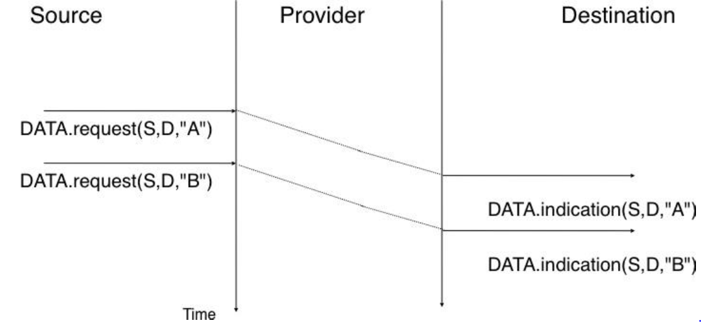
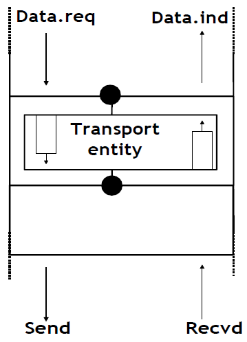
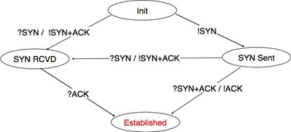

Ce manuel est né d'une frustration de son auteur principal. De nombreux auteurs ont choisi d'écrire un manuel parce qu'il n'y a pas de manuels dans leur domaine ou parce qu'ils ne sont pas satisfaits des manuels existants. Cette frustration a produit plusieurs excellents manuels dans la communauté des réseaux. À une époque où les manuels de réseaux étaient principalement théoriques, Douglas Corner a choisi d'écrire un manuel entièrement axé sur la suite de protocoles TCP/IP [Comer1988], un choix difficile à l'époque. Plus tard, il a étendu son manuel en décrivant une implémentation complète de TCP/IP, ajoutent des considérations pratiques aux descriptions théoriques de [Comer1988]. Richard Stevens a abordé Internet comme un explorateur et a expliqué le fonctionnement des protocoles en examinant tous les paquets échangés sur le fil [Stevens1994]. Jim Kurose et Keith Ross ont réinventé les manuels de réseaux en partant des applications utilisées par les étudiants et ont ensuite expliqué les protocoles Internet en supprimant une couche après l'autre [KuroseRoss09].
Les frustrations qui ont motivé ce livre sont différentes. Lorsque j'ai commencé à enseigner les réseaux à la fin des années 1990, les étudiants étaient déno des utilisateurs d'Internet, mais leur utilisation était limitée. Les étudiants utilisaient encore des manuels de référence et passaient du temps à la bibliothèques. Les étudiants d'aujourd'hui sont complètement différents. Ce sont des utilisateurs du web avides et expérimentés qui trouvent beaucoup d'informations sur le web. C'est une attitude positive car ils sont probablement plus curieux que leurs prédécesseurs. Grâce aux informations disponibles sur Internet, ils peuvent vérifier ou obtenir des informations supplémentaires sur les sujets expliqués par leurs professeurs. Cette abondance d'informations crée plusieurs défis pour un enseignant. Jusqu'à la fin du XIXe siècle, un enseignant par définition plus compétent que ses étudiants et il était très difficile pour les étudiants de vérifier les leçons données par leurs enseignants. Aujourd'hui, étant donné la quantité d'informations disponibles au bout des doigts de chaque étudiant via Internet, la vérification d'une leçon ou l'obtention de plus d'informations sur un sujet donné est parfois à quelques clics seulement. Des sites web tels que Wikipédia fournissent beaucoup d'informations sur divers sujets et les étudiants les consultent souvent. Malheureusement, l'organisation des informations sur ces sites web n'est pas adaptée pour permettre aux étudiants d'apprendre à partir d'eux. De plus, il existe de grandes différences dans la qualité et la profondeur des informations disponibles pour différents sujets.
La deuxième raison est que la communauté du réseau informatique est un participant fort dans le mouvement open-source. Aujourd'hui, il existe des implémentations open-source de haute qualité et largement utilisées pour la plupart des protocoles réseau. Cela inclut les implémentations TCP/IP qui font partie de Linux, FreeBSD ou la pile uIP fonctionnant sur des contrôleurs 8 bits, mais aussi des serveurs tels que Bind, Unbound, Apache ou Sendmail, ainsi que des implémentations de procoles de routage tels que XORP ou Quagga. De plus, les documents qui définissent presque tous les protocoles Internet ont été développés au sein de l'Internet Engineering Task Force (IETF) en utilisant un processus ouvert. L'IETF publie ses spécifications de protocole dans les RFC disponibles publiquement et les nouvelles propositions sont décrites dans les projets Internet.
Cet ouvrage pédagogique vise à combler le fossé entre les implémentations open source et les spécifications open source des réseaux en fournissant un description détaillée mais pédagogique des principes clés qui guident le fonctionnement d'Internet. Le livre est publié sous une licence Creative Commons. Cette licence open source est motivée par deux raisons. La première est que nous espérons que cela permettra à de nombreux étudiants d'utiliser le livre pour apprendre les réseaux informatiques. La seconde est que j'espère que d'autres enseignants le réutiliseront, l'adapteront et l'amélioreront. Le temps dira s'il est possible de construire une communauté de contributeurs pour améliorer et développer davantage le livre. En tant que point de départ, la première édition contient tout le matériel pour un semestre de premier cycle supérieur ou de cours de réseau des cycles supérieurs.
À l'heure actuelle où ces lignes sont écrites, la plupart du texte a été rédigé par Olivier Bonaventure. Laurent Vanbever, Virginie Van den Schriek, Damien Saucez et Mickael Hoerdt ont contribué aux exercices. Pierre Reinbold a conçu les icônes utilisées pour représenter les commutateurs et Nipaul Long a redessiné de nombreuses figures au format SVG. Stéphane Bortzmeyer a envoyé de nombreuses suggestions et corrections au texte. Des informations supplémentaires sur le manuel sont disponsibles sur le site http://inl.info.ucl.ac.be/CNP3.
1.1. À propos de l'auteur :
Olivier Bonaventure est actuellement professeur à l'Univesité Catholique de Louvain (Belgique) où il dirige le laboratoire IP Networking et est vice-président de l'ICTEAM Institute. Sa recherche est axée sur les protocoles Internet depuis plus de vingt ans. Avec ses doctorants, il a développé des techniques d'ingénierie de trafic, effectué divers types de mesures Internet, amélioré les performances des protocoles de routage tels que BGP est IS-IS et participé au développement de nouveaux protocoles Internet, notamment shim6, LISP et Multipath TCP. Il contribue fréquemment à la normalisation au sein de l'IETF. Il était membre du commité de rédaction de la revue IEEE/ACM Transactions on Networking et est directeur de ACM SIGCOMM.
Chapitre 2 : Introduction :
2.1. Introduction :
Lorsque les premiers ordinateurs ont été construits pendant la Seconde Guerre mondiale, ils étaient coûteux et isolés. Cependant, après environ 20 ans, à mesure que leurs prix diminuaient progressivement, les premières expériences ont commencé à connecter des ordinateurs entre eux. Au début des années 1960, des chercheurs tels que Paul Baran, Donald Davies ou Joseph Licklider ont publié indépendamment les premiers articles décrivant l'idée de construire des réseaux informatiques [Baran] [Licklider1963]. Étant donné le coût des ordinateurs, le partage sur une longue distance était une idée intéressante. Aux États-Unis, l'ARPANET a démarré en 1960 et s'est poursuivi jusqu'au milieu des années 1980 [LCCD09]. En France, Louis Pouzin a développé le réseau Cyclades [Pouzin1975]. De nombreux autres réseaux de recherche ont été construits au cours des années 1970 [Moore]. En même temps, l'industrie des télécommunications et des ordinateurs s'est intéressée aux réseaux informatiques. L'industrie des télécommunications a misé sur le X25. L'industrie informatique a adopté une approche complètement différente en concevant des réseaux locaux (LAN). De nombreuses technologies LAN telles qu'Ethernet ou Token Ring ont été conçues à cette époque. Au cours des années 1980, la nécessité d'interconnecter de plus en plus d'ordinateurs a conduit la plupart des vendeurs d'ordinateurs à développer leur propre suite de protocoles de réseau. Xerox a développé [XNS], DEC a choisi DECNet [Malamud1991], IBM a développé SNA [McFadyen1976], Microsoft a introduit NetBIOS [Winston2003], Apple a misé sur Appletalk [SAO1990]. Dans la communauté de recherche, l'ARPANET a été mise hors service et remplacée par TCP/IP [LCCD09] et l'implémentation de référence a été développée à l'intérieur de BSD Unix [McKusick1999]. Les universités qui utilisaient déjà Unix ont ainsi pu adopter facilement TCP/IP et les vendeurs de stations de travail Unix tels que Sun ou Silicon Graphics ont inclus TCP/IP dans leur variante d'Unix. En parallèle, l'ISO, avec le soutien des gouvernements, a travaillé sur le développement d'une suite ouverte de protocoles réseau ("Open" dans les termes de l'ISO était en contraste avec les suites de protocoles propriétaires dont les spécifications n'étaient pas toujours disponibles publiquement. Le gouvernement américain a même ordonnée l'utilisation des protocoles OSI (voir RFC 1169), mais cela n'a pas suffi à encourager tous les utilisateurs à passer à la suite de protocoles OSI qui était considérée par beaucoup comme trop complexe par rapport à d'autres suites de protocoles.). Au final, TCP/IP est devenu la norme de facto qui n'est pas seulement utilisée au sein de la communauté de recherche. Au cours des années 1990 et du début des années 2000, la croissance de l'utilisation TCP/IP a continué, et aujourd'hui, les protocoles propriétaires sont rarement utilisés. Comme le montre la figure ci-dessous, qui fournit une estimation du nombre d'hôtes connectés à Internet, Internet a connu une forte croissance au cours des 20 dernières années.
Les estimations récentes du nombre de machines connectées à Internet montrent une croissance continue depuis plus de 20 ans. Cependant, bien que le nombre de machines connectées à Internet soit élevé, il devrait être comparé au nombre de téléphones mobiles en utilisation aujourd'hui. De plus en plus de ces téléphones mobiles seront connectés à Internet. De plus, grâce à la disponibilité des implémentations de TCP/IP nécessitant des ressources limitées telles que uIP [Dunkels2003], nous pouvons nous attendre à voir une croissance des appareils intégrés compatibles avec TCP/IP.
Avant d'examiner les services fournis par les réseaux informatiques, il est utile de se mettre d'acoord sur certains termes largement utilisés dans la littérature sur les réseaux. Tout d'abord, les réseaux informatiques sont souvent classés en fonction de la zone géographique qu'ils couvrent :
LAN (Local Area Network) : un réseau local interconnecte généralement des hôtes qui sont quelques kilomètres ou peut-être quelques dizaines de kilomètres de distance.
MAN (Metropolitan Area Network) : un réseau métropolitain interconnecte généralement des appareils qui sont jusqu'à quelques centaines de kilomètre de distance.
Figure 2.1 : Estimation du nombre d'hôtes sur InternetFigure 2.2 : Estimation du nombre de téléphones mobiles
WAN (Wide Area Network) : un réseau étendu interconnecte des hôtes qui peuvent être situés n'importe où sur Terre.
Dans ce livre, nous nous concentrons sur les réseaux utilisés sur Terre. Ces réseaux incluent parfois des liaisons satellites. En plus des technologies de réseau utilisées sur Terre, les chercheurs développent des techniques de mise en réseau qui pourraient être utilisées entre des noeuds situés sur des planètes différentes. Un tel Internet interplanétaire nécessite des techniques différentes de celles discutées dans ce livre. Pour plus d'informations sur ce techniques, consultez la RFC 4838 et les références qui y sont mentionnées.
Une autre classification des réseaux informatiques est basée sur leur topologie physique. Dans les figures suivantes, les liens physiques sont représentés par des lignes tandis que les boîtes montrent des ordinateurs ou d'autres types d'équipements de réseau.
Les réseaux informatiques sont utilisés pour permettre à plusieurs hôtes d'échanger des informations entre eux. Pour permettre à n'importe quel hôte d'envoyer des messages à n'importe quel autre hôte du réseau, la solution la plus simple est de les organiser en maillage complet, avec un lien direct et dédié entre chaque paire d'hôtes. Cette topologie physique est parfois utilisée, en particulier lorsqu'une haute performance et une grande redondance sont requises pour un petit nombre d'hôtes. Cependant, elle présente deux inconvénients majeurs :
pour un réseau contenant n hôtes, chaque hôte doit avoir n - 1 interfaces physiques. En pratique, le nombre d'interfaces physiques sur un noeud limitera la taille d'un réseau en maillage complet qui peut être construit.
pour un réseau contenant n hôtes, (n2 - n) / 2 liens nécessaires. Ceci est possible lorsqu'il y a quelques noeuds dans la même pièce, mais rarement lorsqu'ils sont situés à plusieurs kilomètres de distance.
Figure 2.3 : Un réseau en maillage complet
La deuxième organisation physique possible, qui est également utilisée à l'intérieur des ordinateurs pour connecter différentes cartes d'utilisation, est le bus. Dans un réseau de bus, tous les hôtes sont cconnectés à un support partagé, généralement un câble, via une seule interface. Lorsqu'un hôte envoie un signal électrique sur le bus, le signal est reçu par tous les hôtes connectés au bus. Un inconvénient des réseaux en bus est que si le bus est physiquement coupé, le réseau est divisé en deux réseaux isolés. Pour cette raison, les réseaux en bus sont parfois considérés comme difficiles à exploiter et à entretenir, surtout lorsque le câble est long et qu'il y a de nombreux endroits où il peut se rompre. Une telle topologie en bus a été utilisée dans les premiers réseaux Ethernet.
Figure 2.4 : Un réseau organisé en bus
Une troisième organisation d'un réseau informatique est une topologie en étoile. Dans de telles topologies, les hôtes disposent d'une seule interface physique et il y a un lien physique entre chaque hôte et le centre de l'étoile. Le noeud au centre de l'étoile peut être soit un équipement qui amplifie un signal électrique, soit un appareil actif, tel qu'un équipement qui comprend le format des messages échangés à travers le réseau. Bien sûr, la défaillance du noeud central implique la défaillance du réseau. Cependant, si un lien physique échoue (par exemple, parce que le câble a été coupé), alors un seul noeud est déconnecté du réseau. En pratique, les réseaux en forme d'étoile sont plus faciles à exploiter et à entretenir que les réseaux en forme de bus. De nombreux administrateurs réseau apprécient également le fait qu'ils peuvent contrôler le réseau à partir d'un point central. Administré à partir d'une interface Web ou via une connexion de type console, le centre de l'étoile est un point de contrôle utile (activation ou désactivation d'appareils) et un excellent point d'observation (statiques d'utilisation).
Figure 2.5 : Un réseau organisé en étoile
Une quatrième organisation physique d'un réseau est la topologie en anneau. Comme pour l'organisation en bus, chaque hôte a une seule interface physique qui le relie à l'anneau. Tout signal envoyé par un hôte sur l'anneau sera reçu par tous les hôtes connectés à l'anneau. Du point de vue de la redondance, un seul anneau n'est pas la meilleure solution, car le signal ne se déplace que dans une seule direction sur l'anneau. Ainsi, si l'un des liens qui composent l'anneau est coupé, l'ensemble du réseau tombe en panne. En pratique, de tels anneaux ont été utilisés dans des réseaux locaux, mais sont maintenant souvent remplacés par des réseaux en étoile. Dans les réseaux métropolitains, les anneaux sont souvent utilisés pour interconnecter plusieurs sites. Dans ce cas, deux liens parallèles, composés de câbles différents, sont souvent utilisés par la redondance. Avec un tel anneau double, lorsque l'un des anneaux échoue, tout le trafic peut être rapidement basculé vers l'autre anneau.
Figure 2.6 : Un réseau organisé en anneau
Une cinquième organisation physique d'un réseau est l'arborescence. De tels réseaux sont généralement utilisés lorsqu'un grand nombre de clients doivent être connectés de manière très rentable. Les réseaux de télévision par câble sont souvent organisés en arborescence.
Figure 2.7 : Un réseau organisé en arbre
En pratique, la plupart des réseaux réels combinent une partie de ces topologies. Par exemple, un réseau de campus peut être organisé en anneau entre les bâtiments clés, tandis que les bâtiments plus petits sont rattachés en tant qu'arbre ou étoile aux bâtiments importants. Ou un réseau ISP peut avoir un maillage complet d'appareils dans le coeur de son réseau, et des arbres pour connecter les utilisateurs distants.
Tout au long de ce livre, notre objectif sera de comprendre les protocoles et les mécanismes nécessaires pour un réseau tel que celui-illustré ci-dessous.
Figure 2.8 : Un inter-réseau simple
La figure ci-dessus illustre un inter-réseau, c'est-à-dire un réseau interconnecte d'autres réseaux. Chaque réseau est représenté par une ellipse contenant quelques appareils. Nous expliquerons tout au long du livre les différents types d'appareils et leurs rôles respectifs permettant à tous les hôtes d'échanger des informations. En outre, nous discuterons de la manière dont les réseaux sont interconnectés et des règles qui régissent ces interconnexions. Nous analyserons également comment les topologies en bus, en anneau et en maillage sont utilisées pour construire des réseaux réels.
Le dernier point de terminolgie que nous devons aborder est les modes de transmission. Lorsque nous échangeons des informations à travers un réseau, nous distinguons trois modes de transmission. Dans la transmission TV et radio, la diffusion (broadcast) est souvent utilisée pour indiquer une technologie qui envoie un signal vidéo ou radio à tous les récepteurs dans une zone géographique donnée. La diffusion est parfois utilisée dans les réseaux informatiques, mais uniquement dans les réseaux locaux où le nombre de destinataires est limité.
Le premier et le mode de transmission le plus répondu s'appelle unicast. Dans le mode de transmission unicast, l'information est envoyée par un émetteur à un récepteur. La plupart des applications Internet d'aujourd'hui reposent sur le mode de transmission unicast. L'exemple ci-dessous montre un réseau avec deux types d'appareils : des hôtes (dessinés comme des ordinateurs) et des noeuds intermédiaires (dessinés comme des cubes). Les hôtes échangent des informations via les noeuds intermédiaires. Dans l'exemple ci-dessous, lorsque l'hôte S utilise unicast pour envoyer des informations, il les envoie via trois noeuds intermédiaires. Chacun de ces noeuds reçoit l'information de son noeud ou hôte en amont, la traite et la transmet à son noeud ou hôte en aval. Cela s'appelle store and forward et nous verrons plus tard que ce concept est clé dans les réseaux informatiques.
Figure 2.9 : transmission unicast
Un deuxième mode de transmission est le mode de transmission multicast. Ce mode est utilisé lorsque la même information doit être envoyée à un ensemble de destinataires. Il a d'abord été utilisé dans les réseaux locaux (LAN), mais est devenu plus tard pris en charge dans les réseaux étendus. Lorsqu'un expéditeur utilise le multicast pour envoyer des informations à N destinataires, l'expéditeur envoie une seule copie des informations et les noeuds du réseau dupliquent ces informations chaque fois que cela est nécessaire, de sorte qu'elles puissent atteindre tous les destinataires appartenant au groupe de destination.
Pour comprendre l'importance de la transmission en mode multicast, considérons la source S qui envoie les mêmes informations aux destinations A, C et E. Avec le mode unicast, les mêmes informations passent trois fois sur les noeuds intermédiaires 1 et 2 et deux fois sur le noeud 4. C'est une perte de ressources pour les noeuds intermédiaires et les liens entre eux. Avec la transmission en mode multicast, l'hôte S envoie les informations au noeud 1 qui le transmet en aval au noeud 2. Ce noeud crée une copie des informations reçues en envoie une copie directement à l'hôte E et l'autre en aval vers le noeud 4. À la reception des informations, le noeud 4 produit une copie et envoie une copie à la fois au noeud A et une autre au noeud C. Grâce à la transmission en mode multicast, les mêmes informations peuvent atteindre un grand nombre de destinataires tout en étant envoyées une seule fois sur chaque lien.
Figure 2.10 : transmission multicast
Le dernier mode de transmission est le mode de transmission anycast. Il a été initialement défini dans le RFC 1542. Dans ce mode de transmission, un ensemble de récepteurs est identifié. Lorsqu'une source envoie des informations à cet ensemble de récepteurs, le réseau s'assyre que les informations sont délivrées à un récepteur qui appartient à cet ensemble. En général, le récepteur le plus proche de la source est celui qui reçoit les informations envoyées par cette source particulière. Le mode de transmission anycast est utile pour assurer la redondance, car lorsque l'un des récepteurs échoue, le réseau s'assure que les informations seront délivrées à un autre récepteur appartenant au même groupe. Cependant, en pratique, la prise en charge du mode de transmission anycast peut être difficile.
Figure 2.11 : transmission anycast
Dans l'exemple ci-dessus, les trois hôtes marqués d'un astérisque (*) font partie du même groupe anycast. Lorsque l'hôte S envoie des informations à ce groupe anycast, le réseau s'assure qu'elles parviendront à l'un des membres du groupe anycast. Les lignes en pointillés montrent une livraison possible via les noeuds 1, 2 et 4. Une transmission anycast ultérieure de l'hôte S vers le même groupe anycast pourrait atteindre l'hôte attaché au noeud intermédiaire 3, comme indiqué par la ligne pleine. Une transmission anycast atteint un membre du groupe anycast choisi par le réseau en fonction des conditions actuelles du réseau.
2.2. Services et protocoles :
Un aspect important à comprendre avant d'étudier les réseaux informatiques est la différence entre un service et un protocole.
Pour comprendre la différence entre les deux, il est utile de commencer par des exemples du monde réel. La Poste traditionnelle fournit un service dans lequel un facteur livre des lettres aux destinataires. La Poste définit précisément quels types de lettres (taille, poids, etc.) peuvent être livrés en utilisant le service du courrier standard. De plus, le format de l'enveloppe est spécifié (position des adresses de l'expéditeur et du destinataire, position du timbre). Qyelqu'un qui veut envoyer une lettre doit soit la déposer dans un bureau de poste ou dans l'une des boîtes aux lettres dédiées. La lettre sera ensuite collectée et livrée à son destinataire final. Notez que pour le service régulier, La Poste ne garantit généralement pas la livraison de chaque lettre particulière, certaines lettres peuvent être perdues et d'autres peuvent être livrées à la mauvaise boîte aux lettres. Si une lettre est importante, l'expéditeur peut utiliser le service recommandé pour s'assurer que la lettre sera livrée à son destinataire. Certains services de La Poste proposent également un service avec accusé de réception ou un service de courrier express qui est plus rapide que le service régulier.
Dans les réseaux informatiques, la notion de service est définie de manière plus formelle dans [X2000]. Elle peut être mieux comprise en considérant un réseau informatique, quelle que soit sa taille ou sa complexité, comme une boîte noire qui fournit un service aux utilisateurs, comme le montre la figure ci-dessous. Ces utilisateurs pourraient être des utilisateurs humains ou des processus s'exécutant sur un système informatique.
De nombreux utilisateurs peuvent être connectés au même fournisseur de services. Par l'intermédiaire de ce fournisseur, chaque utilisateur doit être en mesure d'échanger des messages avec n'importe quel autre utilisateur. Pour pouvoir livrer ces messages, le fournisseur de services doit être en mesure d'identifier de manière univoque chaque utilisateur. Dans les réseaux informatiques, chaque utilisateur est identifié par une adresse unique, nous discuterons plus tard de la façon dont ces adresses sont construites et utilisées. À ce stade, et lors de la considération de la transmission en unicast, la principale caractéristique de ces adresses est qu'elles sont uniques. Deux utilisateurs différents connectés au réseau ne peuvent pas utiliser la même adresse.
Figure 2.12 : utilisateurs et fournisseur de services
Tout au long de ce livre, nous définirons un service comme un ensemble de capacités fournies par un système (et ses éléments sous-jacents) à son utilisateur. Un utilisateur interagit avec un service via un point d'accès au service. Notez que, comme indiqué dans la figure ci-dessus, les utilisateurs interagissent avec un seul fournisseur de services. En pratique, le fournisseur de services est réparti sur plusieurs hôtes, mais ce sont des détails d'implémentation qui ne sont pas importants à ce stade. Ces interactions entre un utilisateur et un fournisseur de services sont exprimées dans [X200] en utilisant des primitives, comme le montre la figure ci-dessous. Ces primitives sont une représentation abstraite des interactions entre un utilisateur et un fournisseur de services. En pratique, ces interactions pourraient être implémentées sous forme d'appels système, par exemple.
Figure 2.13 : les quatre types de primitives
Les quatres types de primitives sont définis :
X.request : Ce type de primitive correspond à une demande émise par un utilisateur à un fournisseur de service.
X.indication : Ce type de primitive est généré par le fournisseur de réseau et livré à un utilisateur (souventt lié à une primitive X.request antérieure et distante).
X.response : Ce type de primitive est généré par un utilisateur pour répondre à une primitive X.indication antérieure.
X.confirm : Ce type de primitive est livré par le fournisseur de service pour confirmer à un utilisateur q'une primitive X.request précédente a été traitée avec succès.
Les primitives peuvent être combinées pour modéliser différents types de services. Le service le plus simple dans les réseaux informatiques est appelé le service sans connexion. Ce service est appelé sans connexion car il n'est pas nécessaire de créer une connexion avant de transmettre des données contrairement au service orienté connexion. Ce service peut être modélisé en utilisant deux primitives :
Data.request(source, destination, SDU) : Cette primitive est émise par un utilisateur qui spécifie, en tant que paramètres, son adresse source, l'adresse du destinataire du message et le message lui-même. Nous utiliserons l'unité de données de service (SDU ou Service Data Unit) pour nommer le message échangé de manière transparente entre deux utilisateurs d'un service.
Data.indication(source, destination, SDU) : Cette primitive est délivrée par un fournisseur de service à un utilisateur. Elle contient comme paramètres une unité de données de service (SDU) ainsi que les adresses des utilisateurs émetteur et destinataire.
Lorsqu'on discute du service fourni dans un réseau informatique, il est souvent utile de pouvoir décrire graphiquement les interactions entre les utilisateurs et le fournisseur. Une représentation fréquemment utilisée est le diagramme de séquence temporelle. Dans ce chapitre et tout au long du livre, nous utiliserons souvent des diagrammes tels que celui présenté ci-dessous. Un diagramme de séquence temporelle décrit les interactions entre deux utilisateurs et un fournisseur de services. Par convention, les utilisateurs sont représentés dans les parties gauche et droite du diagramme tandis que le fournisseur de services occupe le milieu du diagramme. Dans un tel diagramme de séquence temporelle, le temps d'écoule de haut en bas du diagramme. Chaque primitive est représentée par une flèche horizontale simple, à laquelle le nom de la primitive est attaché. Les lignes en pointillé sont utilisées pour représenter la relation possible entre deux (ou plusieurs) primitives. Un tel diagramme fournit des informations sur l'ordre des différentes primitives, mais la distance entre deux primitives ne représente pas une quantité de temps précise.
La figure ci-dessous fournit une représentation du service sans connexion sous forme de diagramme de séquence temporelle. L'utilisateur à gauche, ayant l'adresse S, émet une primitive Data.request contenant la SDU M qui doit être livré par le fournisseur de services à la destination D. La ligne en pointillé entre les deux primitives indique que la primitive Data.indication qui est délivrée à l'utilisateur de droite correspond à la primitive Data.request envoyée par l'utilisateur de gauche.
Figure 2.14 : Un service sans connexion simple
Il existe plusieurs implémentations possibles du service sans connexion, que nous étudierons plus tard dans ce livre. Avant d'examiner ces réalisations, il est utile de discuter des caractéristiques possibles du service sans connexion. Un service sans connection fiable est un service dans lequel le fournisseur de service garantit que tous les SDU soumis dans les Data.requests par un utilisateur seront finalement livrés à leur destination. Un tel service serait très utile pour les utilisateurs, mais garantir une livraison parfaite est difficile en pratique. Pour cette raison, les réseaux informatiques prennent généralement en charge un service sans connexion non fiable.
Un service sans connexion peu fiable peut présenter différents types de problèmes par rapport à un service sans connexion fiable. Tout d'abord, un service sans connexion peu fiable ne garantit pas la livraison de toutes les unités de donénes de service (SDU). Cela peut être exprimé graphiquement en utilisant le diagramme de séquence temporelle ci-dessous.
En pratique, un service sans connexion peu fiable livrera généralement une partie des SDU. Cependant, comme la livraison des SDU n'est pas garantie, l'utilisateur doit être capable de la perte de tout SDU.
Figure 2.15 : Un service sans connexion peut perdre des SDU
Une seconde imperfection qui peut affecter un service non fiable sans connexion est qu'il peut dupliquer des SDU. Certains founisseurs de services sans connexion peu fiables peuvent livrer une SDU envoyée par un utilisateur deux fois ou même plus. Cela est illustré par le diagramme de séquence temporelle ci-dessous.
Figure 2.16 : Un service sans connection peu fiable peut dupliquer des SDU
Enfin, certains fournisseurs de services sans connexion peu fiables peuvent livrer à une destination un SDU différent de celui qui a été fourni dans le Data.request. Cela est illustré dans la figure ci-dessous.
Figure 2.17 : Un service sans connection peu fiable peut livrer des SDU erronnées
Lorsqu'un utilisateur interagit avec un fournisseur de service, il doit connaître précisément les limitations du service sous-jacent afin de pouvoir surmonter tout problème qui pourrait survenir. Cela nécessite une définition précise des caractéristiques du service sous-jacent.
Une autre caractéristique importante du service sans connexion est de savoir s'il préserve l'ordre des SDU envoyés par un utilisateur. Du point de vue de l'utilisateur, c'est souvent une caractéristique souhaitable. Cela est illustré dans la figure ci-dessous.

Figure 2.18 : Un service sans connexion qui préserve l'ordre des SDU envoyées par un utilisateur donné
Cependant, de nombreux services sans connexion, en particulier les services non fiables, ne garantissent pas qu'ils préserveront toujours l'ordre des SDU envoyés par chaque utilisateur. Cela est illustré dans la figure ci-dessous.
Figure 2.19 : Un service sans connexion qui ne préserve pas l'ordre des SDU envoyées par un utilisateur donné
Le service sans connexion est largement utilisé dans les réseaux informatiques, comme nous le verrons plus tard dans ce livre. Plusieurs variantes de ce service de base ont été proposées. L'une d'entre elles est le service sans connexion confirmé. Ce service utilise une primitive Data.confirm en plus des primitives Data.request et Data.indication classiques. Cette primitive est émise par le fournisseur de services pour confirmer à un utilisateur la livraison d'un SDU précédemment envoyé à son destinataire. Notez que, comme le service enregistré de la poste, Data.confirm indique uniquement que le SDU a été livré à l'utilisateur de destination. La primitive Data.confirm ne permet pas de savoir si le SDU a été traité par l'utilisateur de destination. Ce service sans connexion confirmé est illustré dans la figure ci-dessous.
Figure 2.20 : Un service sans connexion confirmé
Une invocation du service orienté-connexion est divisée en trois phases. La première phase est l'établissement d'une connexion. Une connexion est une association temporaire entre deux utilisateurs via un fournisseur de service. Plusieurs connexions peuvent exister en même temps entre une paire d'utilisateurs. Une fois établie, la connexion est utilisée pour transférer des SDU. Les connexions fournissent généralement un flux bidirectionnel permettant l'échange de SDU entre les deux utilisateurs associés par la connexion. Ce flux est utilisé pour transférer des données pendant la deuxième phase de la connexion appelée phase de transfert de données. La troisième phase est la terminaison de la connexion. Une fois que les utilisateurs ont fini d'échanger des SDU, ils demandent au fournisseur de service de terminer la connexion. Comme nous le veroons plus tard, il y a également des cas où le fournisseur de service peut avoir besoin de terminer une connexion lui-même.
La mise en place d'une connexion peut être modélisée en utilisant quatre primitives : Connect.request, Connect.indication, Connect.response et Connect.confirm. La primitive Connect.request est utilisée pour demander l'établissement d'une connexion. Le paramètre principal de cette primitive est l'adresse de l'utilisateur de destination. Le fournisseur de service délivre une primitive Connect.indication pour informer l'utilisateur de destination de la tentative de connexion. S'il accepte d'établir une connexion, il répond avec une primitive Connect.response. À ce stade, la connexion est considérée comme ouverte et l'utilisateur de destination peut commencer à envoyer des SDU sur la connexion. Le fournisseur de service traite la Connect.response et délivrera une primitive Connect.confirm à l'utilisateur qui a initié la connexion. La livraison de cette primitive met fin à la phase d'établissement de la connexion. À ce stade, la connexion est considérée comme ouverte et les deux utilisateurs peuvent envoyer des SDU. L'établissement réussi d'une connexion est illustré ci-dessous.
Figure 2.21 : L'établissement de la connexion
L'exemple ci-dessus montre l'établissement réussi d'une connexion. Cependant, en pratique, toutes les connexions ne sont pas établies avec succès. Une raison est que l'utilisateur de destination peut ne pas être d'accord, pour des raisons de politique ou de performance, pour établir une connexion avec l'utilisateur initiateur à ce moment. Dans ce cas, l'utilisateur de destination répond à la primitive Connect.indication par une primitive Disconnect.request qui contient un paramètre pour indiquer la raison pour laquelle la connexion a été refusée. Le fournisseur de service délivrera alors une primitive Disconnect.indication pour informer l'utilisateur initiateur. Une deuxième raison est lorsque le fournisseur de service est incapable d'atteindre l'utilisateur de destination. Cela peut arriver parce que l'utilisateur de destination n'est pas actuellement connecté au réseau ou en raison de la congestion. Dans ces cas, le fournisseur de service répond à la primitive Connect.request avec une primitive Disconnect.indication dont le paramètre de raison contient des informations supplémentaires sur l'échec de la connexion.
Figure 2.22 : Deux types de rejet pour une tentative d'établissement de connexion
Une fois que la connexion est établie, le fournisseur de services fournit deux flux de données aux utilisateurs communicants. Le premier flux de données peut être utilisé par l'utilisateur initiant pour envoyer des SDU. Le deuxième flux de donénes permet à l'utilisateur répondant d'envoyer des SDU à l'utilisateur initiant. Les flux de données peuvent être organisés de différentes manières. Une première organisation est le transfert en mode message. Avec le transfert en mode message, le fournisseur de services garantit qu'un seul et unique Data.indication sera livré au point final du flux de données pour chaque primitive Data.request émise par l'autre point final. Le transfert en mode message est illustré dans la figure ci-dessous. Le principal avantage du mode de transfert de message est que le destinataire reçoit exactement les SDU qui ont été envoyés par l'autre utilisateur. Si chaque SDU contient une commande, l'utilisateur qui reçoit peut traiter chaque commande dès qu'il reçoit un SDU.
Figure 2.23 : Transfert en mode message dans un service orienté connexion
Malheureusement, le transfert en mode message n'est pas largement utilisé sur Internet. Sur Internet, le service orienté connexion le plus populaire transfère des SDU en mode flux. Avec le mode flux, le fournisseur de services fournit un flux de bytes qui relie les deux utilisateurs en communication. L'utilisateur émetteur envoie des bytes en utilisant des primitives de requête de données (Data.request) qui contiennent des séquences de bytes en tant que SDU. Le fournissur de sercices délivre des SDU contenant des bytes consécutifs à l'utilisateur récepteur en utilisant des primitives d'indication de données (Data.indication). Le fournisseur de services garantit que tous les bytes envoyés à une extrémité du flux sont livrés correctement dans le même ordre à l'autre extrémité. Cependant, le fournisseur de services n'essaie pas de préserver les limites des SDU. Il n'y a aucune relation imposée par le fournisseur de services entre le nombre de primitives Data.request et le nombre de primitives Data.indication. Le mode flux est illustré dans la figure ci-dessous. En pratique, une conséquence de l'utilisation du mode flux est que si les utilisateurs veulent échanger des SDU structurés, ils devront fournir les mécanismes qui permettent à l'utilisateur récepteur de séparer les SDU successifs dans le flux de bytes qu'il reçoit. Comme nous le verrons dans le prochain chapitre, les protocoles de la couche d'application utilisent souvent des délimiteurs spécifiques tels que le caractère de fin de ligne pour délimiter des SDU dans un flux de bytes.
Figure 2.24 : Transfert en mode flux dans un service orienté connexion
La troisième phase d'une connexion est lorsqu'elle doit être libérée. Comme une connxion implique trois parties (deux utilisateurs et un fournisseur de service), l'une d'entre elles peut demander la résiliation de la connexion. Habituellement, les connexions sont terminées à la demande d'un utilisateur une fois le transfert de données terminé. Cependant, parfois le fournisseur de service peut être obligé de mettre fin à une connexion. Cela peut être dû à un manque de ressources à l'intérieur du fournisseur de service ou parce que l'un des utilisateurs n'est plus accessible via le réseau. Dans ce cas, le fournisseur de service émettra des primitives Disconnect.indication à tous les deux utilisateurs. Ces primitives contiendront, en paramètre, des informations sur la raison de la résiliation de la connexion. Malheureusement, comme illustré dans la figure ci-dessous, lorsqu'un fournisseur de service est contraint de mettre fin à une connexion, il ne peut garantir que toutes les SDU envoyées par chaque utilisateur ont été livrées à l'autre utilisateur. Cette libération de connexion est dite abrupte car elle peut causer des pertes de données.
Figure 2.25 : Libération abrupte de connexion initiée par le fournisseur de service
Une libération de connexion abrupte peut également être déclenchée par l'un des utilisateurs. Si un utilisateur a besoin, pour une raison quelconque, de mettre fin rapidement à une connexion, il peut émettre une primitive Disconnect.request et demander une libération abrupte. Le fournisseur de service traitera la demande, arrêtera les deux flux de données et livrera la primitive Disconnect.indication à l'utilisateur distant dès que possible. Comme illustré dans la figure ci-dessous, cette libération de connexion abrupte peut entraîner des pertes de SDU.
Figure 2.26 : Libération abrupte de connexion initiée par un utilisateur
Pour assurer une livraison fiable des SDU envoyés par chaque utilisateur sur une connexion, nous devons considérer les deux flux qui composent une connexion comme indépendants. Un utilisateur devrait être en mesure de libérer le flux qu'il utilise pour envoyer des SDU une fois qu'il a envoyé tous les SDU qu'il avait prévu d'envoyer sur cette connexion, mais continuer à recevoir des SDU sur le flux opposé. Cette libération de connexion gracieuse est généralement effectuée comme indiqué dans la figure ci-dessous. Un utilisateur émet une primitive Disconnect.request à son fournisseur une fois qu'il a émis toutes ses primitives Data.request. Le fournisseur de service attendra que toutes les primitives Data.indication aient été livrées à l'utilisateur destinataire avant d'émettre la primitive Disconnect.indication. Cette primitive informe l'utilisateur destinataire qu'il ne recevra plus de SDU sur cette connexion, mais il peut toujours émettre des primitives Data.request sur le flux dans la direction opposée. Une fois que l'utilisateur a émis toutes ses primitives Data.request, il émet une primitive Disconnect.request pour demander la terminaison du flux restant. Le fournisseur de service traitera la demande et livrera la Disconnect.indication correspondante à l'autre utilisateur une fois qu'il aura livré toutes les primitives Data.indication en attente. À ce stade, toutes les données ont été libérés avec succès et la connexion est complètement fermée.
Figure 2.27 : Libération gracieuse de connexion
Note : Fiabilité du service orienté connexion :
Un point important à noter concernant le service orienté connexion est sa fiabilité. Un service orienté connexion ne peut garantir la bonne livraison de toutes les unités de données de service (SDU) que si la connexion est relâchée de manière contrôlée. Cela implique que tant que la connexion est active, il n'y aucune garantie de la livraison effective des SDU échangées car la connexion peut être libérée de manière abrupte à tout moment.
2.3 Les modèles de référence :
Face à la complexité croissante des réseaux informatiques, au cours des années 1970, les chercheurs en réseau ont proposé différents modèles de référence pour faciliter la description des protocoles et des services de réseau. Parmi ceux-ci, le modèle de référence de l'Interconnexion de Systèmes Ouverts (ISO) [Zimmermann80] a été probablement le plus influent. Il a servi de base aux travaux de normalisation effectués au sein de l'ISO pour développer des normes mondiales de réseau informatique. Le modèle de référence que nous utilisons dans ce livre peut être considéré comme une version simplifiée du modèle de référence OSI. Une discussion historique intéressante sur le débat OSI-TCP/IP peut être trouvée dans [Russel06].
2.3.1 Les cinq couches du modèle de référence :
Notre modèle de référence est divisé en cinq couches, comme le montre la figure ci-dessous.
Figure 2.28 : Les cinq couches du modèle de référence
En commençant par la base, la première couche est la couche physique. Deux appareils communicants sont reliés par un support physique. Ce support physique est utilisé pour transférer un signal électrique ou optique entre deux appareils directement connectés. Plusieurs types de supports physiques sont utilisés en pratique :
câble électrique : Les informations peuvent être transmises sur différents types de câbles électriques. Les plus courants sont les paires torsadées utilisées dans le réseau téléphonique, mais également dans les réseaux de télévision par câble, mais ne sont plus utilisés dans les réseaux d'entreprise. Certaines technologies de réseau fonctionnent sur le câble électrique classique.
fibre optique : Les fibres optiques sont fréquemment utilisées dans les réseaux publics et d'entreprise lorsque la distance entre les appareils de communication est supérieure à un kilomètre. Il existe deux principaux types de fibres optiques : multimode et monomode. Le multimode est beaucoup moins cher que la fibre monomode car une LED peut être utilisée pour envoyer un signal sur une fibre multimode tandis qu'une fibre monomode doit être pilotée par un laser. En raison des différents modes de propagation de la lumière, les fibres monomodes sont limitées à des distances de quelques kilomètres tandis que les fibres multimodes peuvent être utilisées sur des distances supérieures à plusieurs dizaines de kilomètres. Dans les deux cas, des répéteurs peuvent être utilisées pour régénérer le signal optique à une extrémité d'une fibre pour l'envoyer sur une autre fibre.
sans fil : Dans ce cas, un signal radio est utilisé pour coder les informations échangées entre les appareils de communication. De nombreuses techniques de modulation sont utilisées pour envoyer des informations sur un canal sans fil et il y a beaucoup d'innovation dans ce domaine avec de nouvelles techniques apparaissant chaque année. Bien que la plupart des réseaux sans fil reposent sur des signaux radio, certains utilisent un laser qui envoie des impulsions lumineuses à un détecteur distant. Ces techniques optiques permettent de créer des liaisons point à point tandis que les techniques basées sur la radio, en fonction de la directionnalité des antennes, peuvent être utilisées pour construire des réseaux contenant des appareils répartis sur une petite zone géographique.
Un point important à noter à propos de la couche physique est le service qu'elle fournit. Ce service est généralement un service orienté connexion peu fiable qui permet aux utilisateurs de la couche physique d'échanger des bits. L'unité de transfert d'information dans la couche physique est le bit. Le service de la couche physique est peu fiable parce que :
la couche physique peut changer, par exemple en raison d'interférences électromagnétiques, la valeur d'un bit en cours de transmission
la couche physique peut livrer plus de bits au récepteur que les bits envoyés par l'émetteur
la couche physique peut livrer moins de bits au récepteur que les bits envoyés par l'émetteur
Les deux derniers points peuvent sembler étranges à première vue. Lorsque deux périphériques sont connectés via un câble, comment est-il possible que des bits soient créés ou perdus sur ce câble ?
Cela est principalement dû au fait que les appareils communicants utilisent leur propre horloge pour transmettre des bits à une vitesse de transmission donnée. Considérons un émetteur ayant une horloge qui bat un million de fois par seconde et envoie un bit à chaque battement. Chaque microseconde, l'émetteur envoie un signal électrique ou optique qui code un bit. Le débit binaire de l'émetteur est donc de 1 Mbps. Si l'horloge du récepteur bat exactement 5 fois chaque microseconde, il délivrera également 1 Mbps à son utilisateur. Cependant, si l'horloge du récepteur est légèrement plus rapide (ou plus lente), il délivrera légèrement plus (ou moins) d'un million de bits chaque seconde. Cela explique pourquoi la couche physique peut perdre ou créer des bits. Il est très difficile en pratique d'avoir des horloges parfaitement synchronisées fonctionnant à haute fréquence. Cependant, certaines couches physiques introduisent une boucle de rétroaction qui permet à l'horloge du récepteur de se synchroniser automatiquement à l'horloge de l'émetteur. Cependant, toutes les couches physiques n'incluent pas ce type de synchronisation.
Note : Débit binaire :
Dans les réseaux informatiques, le débit binaire de la couche physique est toujours exprimé en bits par seconde. Un Mbps est évalement à un million de bits par seconde et un Gbps est équivalent à un milliard de bits par seconde. Cela contraste avec les spécifications de mémoire qui sont habituellement exprimées en octets (8 bits), Kilo-octets (1024 octets) ou Méga-octets (1048576 octets). Ainsi, transférer un MByte à travers une liaison de 1 mbps prend 8,39 secondes.
Débit binaire
Bits par seconde
1 Kbps
103
1 Mbps
106
1 Gbps
109
1 Tbps
1012
Figure 2.29 : La couche physique
La couche physique permet ainsi à deux ou plusieurs entités directement connectées au même support de transmission d'échanger des bits. Pouvoir échanger des bits est important car pratiquement toutes les informations peuvent être encodées sous forme de séquences de bits. Les ingénieurs électriciens ont l'habitude de traiter des flux de bits, mais les informaticiens préfèrent généralement traiter des concepts de plus haut niveau. Un problème similaire se pose avec le stockage de fichiers. Les dispositifs de stockage tels que les disques durs stockent également des flux de bits. Il existe des dispositifs matériels qui traitent le flux de bits produit par un disque dur, mais les informaticiens ont conçu des systèmes de fichiers pour permettre aux applications d'accéder facilement à ces dispositifs de stockage. Ces syst!mes de fichiers sont généralement également divisés en plusieurs couches. Les disques durs stockent des secteurs de 512 octets ou plus. Les systèmes de ficheirs Unix regroupent des secteurs en blocs plus larges qui peuvent contenir des données ou des inodes représentant la structure du système de fichiers. Enfin, les applications manipulent des fichiers et des répertoires qui sont traduits en blocs, en secteurs et finalement en bits par le système d'exploitation.
Les réseaux informatiques utilisent une approche similaire. Chaque couche fournit un service qui est construit au-dessus de la couche sous-jacente et est plus proche des besoins des applications.
La couche liaison de données repose sur le service fourni par la couche physique sous-jacente. La couche liaison de donénes permet à deux hôtes directement connectés par la couche physique d'échanger des informations. L'unité d'information échangée entre deux entités dans la couche liaison de données est une trame. Une trame est une séquence finie de bits. Certaines couches liaison de données fournissent un service orienté connexion tandis que d'autres fournissent un service sans connexion. Certaines couches liaison de données garantissent la livraison fiable des informations tandis que d'autres ne garantissent pas la livraison correcte de l'information.
Un point important à noter à propos de la couche liaison de données est que bien que la figure ci-dessous indique que deux entités de la couche liaison de données échangent directement des trames, en réalité c'est légèrement différent. Lorsque l'entité de la couche liaison de données à gauche doit transmettre une trame, elle émet autant de primitives Data.request à la couche physique sous-jacente qu'il y a de bits dans la trame. La couche physique convertira alors la séquence de bits en un signal électromagnétique ou optique qui sera envoyé sur le support physique. La couche physique du côté droit de la figure décodera le signal reçu, récupérera les bits et émettra les primitives Data.indication correspondantes à son entité de la couche liaison de données. S'il n'y a pas d'erreurs de transmission, cette entité recevra la trame envoyée précédemment.
Figure 2.30 : La couche liaison de données
La couche liaison de données permet à des hôtes directement connectés d'échanger de l'information, mais il est souvent nécessaire d'échanger de l'information entre des hôtes qui ne sont pas connectés au même support physique. C'est la tâche de la couche réseau. La couche réseau est construire au-dessus de la couche liaison de données. Les entités de la couche réseau échangent des paquets. Un paquet est une séquence finie d'octets transportée par la couche liaison de données à l'intérieur d'une ou plusieurs trames. Un paquet contient généralement des informations sur son origine et sa destination, et passe habituellement par plusieurs appareils intermédiaires appelés routeurs en chemin de son origine à sa destination.
Figure 2.31 : La couche réseau
La plupart des implémentations de la couche réseau, y compris Internet, ne fournissent pas de service fiable. Cependant, de nombreuses applications ont besoin d'échanger des informations de manière fiable, et l'utilisation directe du service de la couche réseau serait très difficile pour elles. Assurer la livraison fiable des données produites par les applications est la tâhce de la couche transport. Les entités de la couche transport échangent des segments. Un segment est une séquence finie d'octets qui sont transportés à l'intérieur d'un ou plusieurs paquets. Une entité de la couche transport émet des segments (ou parfois une partie de segments) en tant que demande de données (Data.request) à l'entité de la couche réseau sous-jacente.
Figure 2.32 : le réseau transport
Il existe différents types de couches transport. Les couches transport les plus couramment utilisées sur Internet sont TCP, qui fournit un service de transport orienté connexion fiable pour un flux de données en octetsn, et UDP, qui founit un service de transprot non fiable sans connexion.
La couche supérieure de notre architecture est la couche application. Cette couche comprend tous les mécanismes et structures de données nécessaires pour les applications. Nous utiliserons l'unité de données de l'application (UDA ou ADU pour "Application Data Unit") pour indiquer les données échangées entre deux entités de la couche application.
Figure 2.33 : La couche application
2.3.2 Le modèle de référence TCP/IP :
En contraste avec OSI, la communauté TCP/IP n'a pas fait beaucoup d'efforts pour définir un modèle de référence détaillé; en fait, les objectifs de l'architecture Internet ont été documentés après que TCP/IP ait été déployé [Clark88]. RFC 1122, qui définit les exigences pour les hôtes Internet, mentionne quatre couches différentes. En commençant par le haut, ce sont :
une couche Application
une couche Transport
une couche Internet qui est équivalente à la couche réseau de notre modèle de référence
une couche Liaison qui combine les fonctionnalités des courches physique et de liaison de données de notre modèle de référence à cinq couches.
Outre cette différence dans les couches inférieures, le modèle de référence TCP/IP est très proche des cinq couches que nous utilons tout au long de ce document.
2.3.3 Le modèle de référence OSI :
En comparaison avec le modèle de référence à cinq couches expliqué ci-dessus, le modèle de référence OSI défini dans [X200] est divisé en sept couches. Les quatre couches inférieures sont similaires aux quatre couches inférieures décrites ci-dessus. Le modèle de référence OSI a affiné la couche application en la divisant en trois couches :
La couche Session contient les protocoles et mécanismes nécessaires pour organiser et synchroniser le dialogue et gérer l'échange de données entre les entités de la couche Présentation. Alors que l'une des fonctions principales de la couche transport est de faire face à l'instabilité de la couche réseau, l'objectif de la couche session est de masquer les éventuelles défaillances des connexions de niveau transport vers la couche supérieure. Pour cela, la couche session fournit des services permettant d'établir une connexion de session, de soutenir un échange de données ordonné (y compris des mécanismes permettant de récupérer d'une libération abrupte d'une connexion de transport sous-jacente) et de libérer la connexion de manière ordonnée.
La couche Présentation a été conçue pour faire face aux différentes façons de représenter l'information sur les ordinateurs. Il existe de nombreuses différences dans la façon dont les ordinateurs stockent l'information. Certains ordinateurs stockent les entiers sous forme de champs de 32 bits, d'autres utilisent des champs de 64 bits et le même problème se pose avec les nombres à virgule flottante. Pour les informations textuelles, cela est encore plus complexe avec les nombreux codes de caractères différents qui ont été utilisés. La situation est encore plus complexe lorsqu'on considère l'échange d'informations structurées telles que les enregistrements de base de données. Pour résoudre ce problème, la couche présentation prévoit une représentation commune des données transférées. La notation ASN.1 a été conçue pour la couche présentation et est encore utilisée aujourd'hui par certains protocoles.
La couche Application qui contient les mécanismes qui ne rentrent ni dans la couche présentation, ni dans la couche session. La couche application OSI était elle-même subdivisée en plusieurs éléments de service génériques.
Note : Où sont les couches manquantes dans le modèle de référence TCP/IP ?
Le modèle de référence TCP/IP place les couches présentation et session implicitement dans la couche application. Les principales motivations pour simplifier les couches supérieures das le modèle de référence TCP/IP étaient pragmatiques. La plupart des applications Internet ont commencé comme des prototypes qui ont évolué et ont ensuite été standardisés. Beaucoup de ces applications ont supposé qu'elles seraient utilisées pour échanger des informations écrites en anglais américain et pour lesquelles le code de caractères US-ASCII sur 7 bits était suffisant. C'était le cas pour le courrier électronique, mais comme nous le verrons dans le prochain chapitre, le courrier électronique a pu évoluer pour prendre en charge différentes codifications de caractères. Certaines applications considéraient explicitement les différentes représentations de données. Par exemple, ftp contenait des mécanismes pour convertir un fichier d'un format à un autre et le langage HTML a été défini pour représenter des pages Web. D'autre part, de nombreuses spécifications ISO ont été développées par des comités composés de personnes qui n'ont pas toutes participé à des implémentations réelles. ISO a consacré beaucoup d'efforts à l'analyse des exigebces et à la définition d'une solution qui répond à toutes ces exigences. Malheureusement, certaines des spécifications étaient si complexes qu'il était difficile de les implémenter complètement et les organismes de normalisation ont défini des profils recommandés qui contenanient les ensembles d'options implémentés...
Figure 2.34 : Les sept couches du modèle de référence OSI
2.4 Organisation du livre :
Ce document est organisé selon le modèle de référence TCP/IP et suit une approche descendante (top-down). La plupart des manuels classiques de réseau choisissent une approche ascendante (bottom-up), c'est-à-dire qu'ils expliquent d'abord tous les détails électriques et optiques de la couche physique avant de passer à la couche liaison de données. Cette approche a bien fonctionné pendant la première période de l'informatique en réseau et jusqu'à la fin des années 1990. À cette époque, la plupart des étudiants n'étaient pas utilisateurs de réseaux informatiques et il était utile d'expliquer les réseaux informatiques en construisant les protocoles correpondants à partir des plus simples, dans la couche physique, jusqu'à la couche application. Aujourd'hui, tous les étudiants sont des utilisateurs actifs d'application. Aujourd'hui, tous les étudiants sont des utilisateurs actifs d'applicatiion Internet et commencer à apprendre la réseautique en examinant des bits n'est pas très motivant. À partir de [KuroseRoss09], de nombreux manuels et enseignants ont choisi une approche descendante. Cette approche commence par des applications telles que le courrier électronique et le Web que les étudiants connaissent déjà et explore les différentes couches, en commençant par la couche application. Cette approche fonctionne assez bien avec les étudiants d'aujourd'hui. L'approche traditionnelle ascendante pourrait en fait être considérée comme une approche d'ingénierie car elle part du réseau le plus simple qui permet l'échange de bits et explique comment combiner différents protocoles et mécanismes pour construire les applications les plus complexes. L'approche descendante, en revanche, pourrait être considérée comme une approche scientifique. Comme les biologistes, elle part d'un système existant (construit par l'homme) et l'explore couche par couche.
En plus de l'organisation top-down versus bottom-up, les livres sur les réseaux informatiques peuvent soit viser à couvrir en profondeur un petit nombre de sujets, soit à avoir une couverture limitée d'un large éventail de sujets. Couvrir un large éventail de sujets est intéressant pour les cours d'introduction ou pour les étudiants qui n'ont pas besoin d'une connaissance détaillée des réseaux informatiques. Cela permet aux étudiants d'apprendre un peu de tout, puis de partir de cette connaissance de base plus tard s'ils ont besoin de comprendre les réseaux informatiques plus en détail. Ce livre a choisi de couvrir en détail un plus petit nombre de jets que d'autres manuels. Cela est motivé par le fait que les réseaux informatiques doivent souvent être poussés à leurs limites. Comprendre les détails des principaux protocoles de mise en réseau est important pour pouvoir comprendre pleinement le comportement d'un réseau ou l'étendre pour fournir des services innovants. Une citation populaire dit que le diable se cache dans les détails. Cette situation reflète très bien le fonctionnement de nombreux protocoles de réseau, où le changement d'un seul bit peut avoir des conséquences énormes. Dans les réseaux informatiques, comprendre tous les détails est parfois nécessaire.
Le livre est organisé comme suit : nous décrivons d'abord la couche application dans le chapitre "La couche application". Étant donné le grand nombre d'applications basées sur Internet, il est bien sûr impossible de les couvrir toutes en détail. Nous nous concentrons plutôt sur trois types d'applications basées sur Internet. Nous étudions d'abord le système de noms de domaine (DNS) puis expliquons certains des protocoles impliqués dans l'échange de courrier électronique. La discussion de la couche application se termine par une description des protocoles clés du World Wide Web.
Toutes ces applications reposent sur la couche transport qui est expliquée dans le chapitre "chapter-transport". Il s'agit d'une couche clé dans les réseaux d'aujourd'hui car elle contient tous les mécanismes nécessaires pour assurer une transmission fiable des données sur un réseau non fiable. Nous couvrons la couche transport en développant d'abord un protocole simple de couche transport fiable, puis expliquons les détails des protocoles TCP et UDP utilisés dans les réseaux TCP/IP.
Après la couche transport, nous analysons la couche réseau dans le chapitre "La couche réseau". C'est également une couche très importante car elle est responsable de la livraison de paquets de n'importe quelle source vers n'importe quelle destination via des routeurs intermédiaires. Dans la couche réseau, nous décrivons les deux organisations possibles de la couche réseau et les protocoles de routage basés sur les états de lien et les vecteurs de distance. Ensuite, nous expliquons en détail les protocoles IPv4, IPv6, RIP, OSPF et BGP qui sont effectivement utilisés dans l'Internet d'aujourd'hui.
Le dernier chapitre du livre est consacré à la couche liaison de données. Dans le chapitre "La couche liaison de données et les réseaux locaux", nous commençons par expliquer les principes de la couche liaison de données sur des liens point-à-point. Ensuite, nous nous concentrons sur les réseaux locaux. Nous considérons à la fois les techniques opportunistes et déterministes. Nous expliquons ensuite en détail deux types de LAN importants d'un point de vue de déploiement aujourdhui : Ethernet et Wifi.
Partie 2 : La couche application :
3.1 La couche application :
La couche application est la couche la plus importante et la plus visible des réseaux informatiques. Les applications résident dans cette couche et les utilisateurs humains interagissent via ces applications à travers le réseau.
Dans ce chapitre, nous décrivons d'abord brièvement les principes principaux de la couche application et nous nous concentrons sur les deux modèles d'application les plus importants : les modèles client-serveur et pair-à-pair. Ensuite, nous examinons en détail deux familles de protocoles qui se sont révélées très utiles sur Internet : le courrier électronique et les protocoles qui permettent l'accès aux informations sur le World Wide Web. Nous décrivons également le système de noms de domaine qui permet aux humains d'utiliser des noms convivaux alors que les hôtes utilisent des adresses IP longues de 32 bits ou 128 bits.
3.2 Principes :
Il y a deux modèles importants utilisés pour organiser une application en réseau. Le premier et le plus ancien modèle est le modèle client-serveur. Dans ce modèle, un serveur fournit des services aux clients qui échangent des informations avec lui. Ce modèle est hautement asymétrique : les clients envoient des requêtes et les serveurs effectuent des actions et renvoient des réponses. Il est illustré dans la figure ci-dessous.
Figure 3.1 : Le modèle client-serveur
Le modèle client-serveur était le premier modèle utilisé pour développer des applications en réseau. Ce modèle découle naturellement des ordinateurs centraux et des mini-ordinateurs qui étaient les seuls ordinateurs en réseau utilisés jusqu'aux années 1980. Un mini-ordinateur est un système multi-utilisateur utilisé par des dizaines ou plus d'utilisateurs en même temps. Chaque utilisateur interagit avec le mini-ordinateur en utilisant un terminal. Ces terminaux, composés principalement d'un écran, d'un clavier et d'un câble directement connecté au mini-ordinateur.
Il existe différents types de serveurs ainsi que différents types de clients. Un serveur web fournit des informations en réponse à la requête envoyée par ses clients. Un serveur d'impression imprime des documents envoyés sous forme de requêtes par le client. Un serveur de messagerie transférera les messages électroniques envoyés sous forme de requêtes à leur destinataire, tanid qu'un serveur de musique fournira la musique demandée par le client. Du point de vue du développeur d'application, les applications cliente et serveur échangent directement des messages (les flèches horizontales étiquetées Requêtes et Réponses dans la figure ci-dessus), mais en pratique, ces messages sont échangés grpace aux couches sous-jacentes (les flèches verticales dans la figure ci-dessus). Dans ce chapitre, nous nous concentrons sur ces échanges horizontaux de messages.
Les applications en réseau n'échangent pas des messages aléatoires. Pour s'assurer que le serveur est capable de comprendre les requêtes envoyées par un client, et aussi que le client est capable de comprendre les réponses envoyées par le serveur, ils doivent tous deux convenir d'un ensemble de règles syntaxiques et sémantiques. Ces règles définissent le format des messages échangés ainsi que leur ordre. Cet ensemble de règles est appelé un protocole de niveau application.
Un protocole de niveau d'application est similaire à une conversation structurée entre des êtres humains. Supposons qu'Alice souhauite connaître l'heure actuelle mais n'a pas de montre. Si Bob passe à proximité, la conversation suivante pourrait avoir lieu :
Alice : Bonjour
Bob : Bonjour
Alice : Quelle heure est-il ?
Bob : 11h55
Alice : Merci
Bob : De rien
Une telle conversation réussit si Alice et Bob parlent la même langue. Si Alice rencontre Tchang qui ne parle que chinois, elle ne pourra pas lui demander l'heure actuelle. Une conversation entre humains peut être plus complexe. Par exemple, supposons que Bob est un garde de sécurité dont la responsabilité est de n'autoriser que les agents secrets de confiance à entrer dans une salle de réunion. Si tous les agents connaissent un mot de passe secret, la conversation entre Bob et Trudy pourrait être la suivante :
Bob : Quel est le mot de passe secret ?
Trudy : 1234
Bob : C'est le mot de passe correct, bienvenue
Si Alice veut entrer dans la salle de réunion mais ne connaît pas le mot de passe, sa conversation pourrait être la suivante :
Bob : Quel est le mot de passe secret ?
Alice : 3.1415
Bob : Ce n'est pas le mot de passe correct
Les conversations humaines peuvent être très formelles, par exemple lorsque les soldats communiquent avec leur hiérarchie, ou informelles comme lorsqu'ils discutent entre amis. Les ordinateurs qui communiquent sont plus semblables à des soldats et nécessitent des règles bien définies pour assurer un échange d'informations réussi. Il existe deux types de règles qui définissent comment les informations peuvent être échangées entre les ordinateurs :
Les règles syntaxiques précisent le format des messages échangés entre les ordinateurs. Comme les ordinateurs ne traitent que des bits, ces règles spécifient comment l'information est encodée en chaînes de bits.
Pour de nombreuses applications, le flux d'informations doit être structuré et il existe des relations de prééminence entre les différents types d'informations échangées. Dans l'exemple de l'heure donné précédemment, Alice doit saluer Bob avant de lui demander l'heure. Alice ne demanderait pas l'heure d'abord et ne saluerait Bob qu'ensuite. De telles relations de prééminence existent également dans les applications réseau. Par exemple, un serveur doit recevoir un nom d'utilisateur et un mot de passe valide avant d'accepter des commandes plus complexes de ses clients.
Commençons par discuter des règles syntaxiques. Nous expliquerons plus tard comment le flux d'informations peut être organisé en analysant des applications réseau réelles.
Les protocoles de la couche application échangent deux types de messages. Certains protocoles tels que ceux utilisés pour prendre en charge l'échange de courrier électronique échangenet des messages exprimés sous forme de chaînes ou de lignes de caractères. Comme la couche de transport permet aux hôtes d'échanger des octets, ils doivent convenir d'une représentation commune des caractères. La première et la plus simple méthode pour encoder les caractères est d'utiliser la table ASCII. La RFC 20 fournit la table ASCII qui est utilisée par de nombreux protocoles sur Internet. Par exemple, la table définit les représentations binaires suivantes :
A : 1000011b
0 : 0110000b
z : 1111010b
@ : 1000000b
space : 0100000b
En outre, la table ASCII définit également plusieurs caractères non imprimables ou caractères de contrôle. Ces caractères ont été conçus pour permettre à une application de contrôler une imprimante ou un terminal. Ces caractères de contrôle comprennent CR et LF, qui sont sont utilisés pour terminer une ligne, et le caractère Bell qui provoque l'émission d'un son par le terminal.
Retour chariot (CR pour carriage return) : 000AA0Ab
Avance de ligne (LF pour line feed) : 0001010b
Bell : 0000111b
Les caractères ASCII sont encodés sur sept bits, mais transmis sous forme d'un octet de huit bits dont le bit de poids élevé est généralement fixé à 0. Les octets sont toujours transmis en commmençant par le bit de poids élevé ou le bit le plus significatif.
La plupart des applications échangent des chaînes de caractères composées d'un nombre fixe ou variable de caractères. Une solution courante pour définir les chaînes de caractères acceptables consiste à les définir comme une grammaire utilisant une forme de Backus-Naur (BNF) telle que la BNF augmentée définie dans le RFC 5234. Une BNF est un ensemble de règles de production qui génèrent toutes les chaînes de caractères valides. Par exemple, considérez une application en réseau qui utilise deux commandes, où l'utilisateur peut fournir un nom d'utilisateur et un mot de passe. La BNF pour cette application pourrait être définie comme indiqu" dans la figure-dessous.
Figure 3.2 : Une spécification BNF simple
L'exemple ci-dessus définit plusieurs terminaux et deux commandes : usercommand et passwordcommand. Le terminal ALPHA contient toutes les lettres en majuscules et minuscules. Dans la règle ALPHA, %x41 correspond au code de caractère ASCII 41 en hexadécimal, c'est-à-dire le A majuscule. Les terminaux CR et LF correspondent aux caractères de contrôle de retour de cariot et de saut de ligne. La règle CRLF concatène ces deux terminaux pour correspondre à la fin de ligne standard. Le terminal DIGIT contient tous les chiffres. Le terminal SP correspond aux caractères d'espacement. La commande usercommand est composée de deux chaînes séparées par un espace blanc. Dans les règles ABNF qui définissent les messages utilisés par les applications Internet, les commandes sont insensibles à la casse. La règle "user" correspond à toutes les cas possibles des lettres qui composent le mot entre crochets, par exemple user, uSeR, USER, usER, ... Un nom d'utilisateur contient au moins une lettre et jusqu'à 8 lettres. Les noms d'utilisateur sont sensibles à la casse car ils ne sont pas définis comme une chaîne entre crochets. La règle de mot de passe indique qu'un mot de passe commence par une lettre et peut contenir n'importe quel nombre de lettres ou de chiffres. Les caractères d'espacement et de contrôle ne peuvent pas apparaître dans un mot de passe défini par la règle ci-dessus.
En plus des chaînes de caractères, certaines applications ont également besoin d'échanger des champs de 16 ou 32 bits tels que des entiers. Une solution naïve aurait été d'envoyer le champ de 16 ou 32 bits tel qu'il est encodé dans la mémoire de l'hôte. Malheureusement, il existe différentes méthodes pour stocker les champs de 16 ou 32 bits en mémoire. Certains porcesseurs stockent le byte le plus significatif d'un champ de 16 bits à la première adresse du champ, tandis que d'autres stockent le byte le moins significatif à cet emplacement. Lorsque des applications en réseau s'exécutant sur des processeurs différents échangent des champs de 16 bits, il existe deux possibilités pour les transférer via le service de transport :
envoyer le byte le plus significatif suivi du byte le moins significatif
envoyer le byte le moins significatif suivi du byte le plus significatif
La première possibilité a été appelée big-endian dans une note écrite par Cohen [Cohen1980], tandis que la seconde a été appelée little-endian. Les fournisseurs de processeurs qui utilisaient big-endian en mémoire ont insisté sur l'utilisation de l'encodage big-endian dans les applications en réseau, tandis que les fournisseurs de processeurs qui utilisaient little-endian ont recommandé l'inverse. Plusieurs études ont été rédigées sur les mérites relatifs de chaque type d'encodage, mais la discussion est devenue presque une question religieuse [Cohen1980]. Finalement, Internet a choisi l'encodage big-endian, c'est-à-dire que les champs multi-octets sont toujours transmis en envoyant le byte le plus significatif en premier, le RFC 791 fait référence à cet encodage comme étant l'ordre des octets du réseau. La plupart des bibliothèques utilisées pour écrire des applications en réseau contiennent des fonctions permettant de convertir les champs multi-octets de la mémoire à l'ordre des octets du réseau et vice versa.
Par exemple, les fonctions de la bibliothèque standard C htonl(3) et ntohl(3) permettent de convertir un entier non signé de 32 bits de l'ordre d'octets utilisé par le processeur à l'ordre d'octets du réseau (resp. de l'ordre d'octets du réseau à l'ordre d'octets du processeur). Des fonctions similaires existent dans d'autres langages de programmation.
En plus des mots de 16 et 32 bits, certaines applications ont besoin d'échanger des structures de données contenant des champs de bits de différentes longueurs. Par exemple, un message peut être composé d'un champ de 16 bits suivi de huit indicateurs, chacun sur un seul bit, d'un champ de 24 bits et de deux octets de 8 bits. Les spécifications des protocoles Internet définiront un tel message en utilisant une représentation telle que celle ci-dessous. Dans cette représentation, chaque ligne correpond à 32 bits et les lignes verticales sont utilisées pour délimiter les champs. Les nombres au-dessus des lignes indiquent les positions des bits dans le mot de 32 bits, avec le bit de poids fort à la position 0.
Figure 3.3 : Format message
Le message mentionné ci-dessus sera transmis en commençant par le premier mot de 32 bits dans l'ordre des octets du réseau. Le premier champ est encodé sur 16 bits. Il est suivi de huit indicateurs à un bit (A-H), d'un champ de 24 bits dont l'octet de poids fort est représenté sur la première ligne et les deux octets de poids faible apparaissent sur la deuxième ligne, suivis de deux champs d'un octet chacun. Cette représentation ASCII est fréquemment utilisée lors de la définition de protocoles binaires. Nous l'utiliserons pour tous les protocoles binaires discutés dans ce livre.
Nous discuterons de plusieurs exemples de protocoles au niveau de l'application dans ce chapitre.
3.2.1 Le modèle pair-à-pair :
Le modèle pair-à-pair est apparu au cours des dix dernières années en tant qu'architecture possible pour les applications en réseau. Dans le modèle client-serveur traditionnel, les hôtes agissent soit en tant que serveurs, soit en tant que clients et un serveur sert un grand nombre de clients. Dans le modèle pair-à-pair, tous les hôtes agissent à la fois en tant que serveurs et clients et jouent les deux rôles. Le modèle pair-à-pair a été utilisé pour développer diverses applications en réseau, allant de la téléphonie Internet au partage de fichiers ou aux systèmes de fichiers à l'échelle d'Internet. Une description détaillée des applications pair-à-pair peut être trouvée dans [BYL2008]. Des enquêtes sur les protocoles et les applications pair-à-pair peuvent être trouvées dans [AS2004] et [LCP2005].
3.3 Les services de transport :
Les applications en réseau sont construites sur le service de transport. Comme expliqué dans le chapitre précédent, il existe deux types principaux de services de transport :
le service de datagramme ou sans connexion
le service orienté connexion ou de flux d'octets
Le service sans connexion permet aux appplications d'échanger facilement des messages ou des unités de donénes de service. Sur Internet, ce service est fourni par le protocole UDP qui sera expliqué dans le prochain chapitre. Le service de transport sans connexion sur Internet est peu fiable, mais est capable de détecter les erreurs de transmission. Cela implique qu'une application ne recevra pas une unité de données de service qui a été corrompue en raison d'erreurs de transmission.
Le service de transport sans connexion permet aux applications réseau d'échanger des messages. Plusieurs applications réseau peuvent être en cours d'exécution en même temps sur un seul hôte. Chacune de ces applications doit être en mesure d'échanger des SDU avec des applications distantes. Pour permettre ces échanges de SDU, chaque application réseau s'exécutant sur un hôte est identifiée par les informations suivantes :
l'hôte sur lequel l'application s'exécute
le numéro de port sur lequel l'application écoute les SDU
Sur Internet, le numéro de port est un entier et l'hôte est identifé par son adresse réseau. Comme nous le verrons dans le chapitre sur la couche réseau, il existe deux types d'adresses Internet :
les adresses IP version 4 qui sont larges de 32 bits
les adresses IP version 6 qui sont larges de 128 bits
IPv4 est représenté habituellement en utilisant une représentation décimale pointée où chaque nombre décimal correspond à un octet de l'adresse, par exemple 203.0.113.56. Les adresses IPv6 sont généralement représentées sous forme de nombres hexadécimaux séparés par des deux-points, par exemple 2011:db8:3080:2:217:f2ff:fed6:65c0. AUjourd'hui, la plupart des hôtes Internet ont une adresse IPv4. Une petite fraction d'entre eux a également une adresse IPv6. À l'avenir, nous pouvons nous attendre à ce que de plus en plus d'hôtes aient des adresses IPv6 et que certains d'entre eux n'aient plus d'adresse IPv4. Un hôte qui n'a qu'une adresse IPv6. La figure ci-dessous illustre deux hôtes qui utilisent le service de datagramme fourni par UCP sur des hôtes qui utilisent des adresses IPv4.
Figure 3.4 : Le service sans connexion ou datagramme
Le deuxième service de transport est le service orienté connexion. Sur Internet, ce service est souvent appelé le service de flux de bytes car il crée un flux de bytes fiable entre les deux applications qui sont liées par une connexion de transport. Comme le service datagramme, les applications réseau qui utilisent le service de flux de bytes sont identifiées par l'hôte sur lequel elles s'exécutent et un numéro de port. Ces hôtes peuvent être identifés par une adresse IPv4, une adresse IPv6 ou un nom. La figure ci-dessous illustre deux applications qui utilisent le service de flux de bytes fourni par le protocole TCP sur des hôtes IPv6. Le service de flux de bytes fourni par TCP est fiable et bidirectionnel.
3.4 Protocoles de niveau applicatif :
De nombreux protocoles ont été définis pour les applications réseau. Dans cette section, nous décrivons certaines des applications importantes utilisées sur Internet. Nous expliquons d'abord le système de noms de domaine (DNS pour Domain Name System) qui permet aux hôtes d'être identifiés par des noms convivaux pour les humains au lieu des adresses IPv4 ou IPv6 utilisées par le réseau. Ensuite, nous décrivons le fonctionnement du courrier électronique, l'une des premières applications phares sur l'INternet mondial, et les protocoles utilisés sur le World Wide Web.
3.4.1 Le DNS :
Au début de l'Internet, il y avait seulement quelques hôtes (principalement des mini-ordinateurs) connectés au réseau. Les applications les plus populaires étaient la connexion à distance et le transfert de fichiers. En 1983, il y avait déjà cinq cents hôtes connectés à l'Internet. Chacun de ces hôtes était identifié par une adresse IPv4 unique. Forcer les utilisateurs à se souvenir des adresses IPv4 des hôtes distants qu'ils voulaient utiliser n'était pas convivial pour les utilisateurs. Les utilisateurs préfèrent se souvenir des noms et les utiliser en cas de besoin. Utiliser des noms comme alias pour les adresses est une technique courante en informatique. Elle simplifie le développement des applications et permet au développeur d'ignorer les détails de bas niveau. Par exemple, en utilisant un langage de programmation plutôt qu'enécrivant du code machine, un développeur peut écrire des logiciels sans savoir si les variables qu'il utilise sont stockées dans la mémoire ou dans les registres.
En raison du fait que les noms sont à un niveau supérieur aux adresses, ils permettent (aussi bien dans l'exemple de la programmation que sur Internet) de considérer les adresses comme de simples identifiants techniques, qui peuvent être modifiés à volonté. Seuls les noms sont stables. Sur l'Internet d'aujourd'hui, où le fait de passer à un autre fournisseur d'accès Internet signifie changer ses adresses IP, la convivialité des noms de domaine est moins importante (les utilisateurs ne les saisissent pas souvent), mais leur stabilité reste une propriété très importante, peut-être leur propriété la plus importante.
La première solution qui a permis aux applications d'utiliser des noms était le fichier hosts.txt. Ce fichier est similaire à la table des symboles que l'on trouve dans le code compilé. Il contient la correspondance entre le nom de chaque hôte Internet et son adresse IP associée. Il était géré par SRI International, qui coordonnait le Centre d'information réseau (NIC pour Network Information Center). Lorsq'un nouvel hôte était connecté au réseau, l'administrateur système devait enregistrer son nom et son adresse IP auprès du NIC. Le NIC mettait à jour le fichier hosts.txt sur son serveur. Tous les hôtes Internet récupéraient régulièrement le fichier hosts.txt mis à jour à partir du serveur maintenu par SRI. Ce fichier était stocké à un emplacement bien connu sur chaque hôte Internet (voir RFC 952) et les applications réseau pouvaient l'utiliser pour trouver l'adresse IP correspondant à un nom.
Un fichier hosts.txt peut être utilisé lorsqu'il y a jusqu'à quelques centaines d'hôtes sur le réseau. Cependant, il n'est clairement pas adapté à un réseau contenant des milliers ou des millions d'hôtes. Un problème clé dans un grand réseau est de définir un schéma de nommage approprié. L'ARPANet utilisait initialement un espace de noms plat, c'est-à-dire que chaque hôte se voyait attribuer un nom unique. Pour limiter les collisions entre les noms, ces derniers contenaient généralement le nom de l'institution et un suffixe pour identifier l'hôte à l'intérieur de l'institution (une sorte de système de nommage hiérarchique du pauvre). Sur l'ARPANet, peu d'institutions avaient plusieurs hôtes connectés au réseau.
Cependant, les limites d'un schéma de nomenclature plat sont devenues évidentes avant la fin de l'ARPANet et le RFC 819 a proposé un schéma de nomenclature hiérachique. Bien que le RFC 819 ait discuté de la possibilité d'organiser les noms en tant que graphe orienté, Internet a finalemnt opté pour une structure en arborescence capable de contenir tous les noms. Dans cette arborescence, les domaines de premier niveau sont ceux qui sont directement attachés à la racine. Le premier domaine de premier niveau était .arpa (voir http://www.donelan.com/dnstimeline.html pour une chronologie des développements liés à DNS). Ce nom de niveau supérieur a été initialement ajouté comme suffixe aux noms des hôtes attachés à l'ARPANet et listés dans le fichier hosts.txt. EN 1984, les noms de domaine génériques de premier niveau .gov, .edu, .com, .mil et .org ont été ajoutés et le RFC 1032 a proposé l'utilisation des codes de pays ISO-3166 à deux lettres comme noms de domaine de premier niveau. Comme ISO-3166 définit un code à deux lettres pour chaque pays reconnu par les Nations unies, cela a permis à tous les pays d'avoir automatiquement un domaine de premier niveau. Ces domaines .be pour la Belgique, .fr pour la France, .us pour les États-Unis, .ie pour l'Irlande ou .tv pour Tuvalu, un groupe de petites îles dans le Pacifique et .tm pour le Turkménistan. Aujourd'hui, l'ensemble des noms ou de domaine de premier est géré par la Corporation pour l'attribution des noms et des numéros sur Internet (ICANN pour "Internet Corporation for Assigned Names and Numbers"). Récemment, l'ICANN a ajouté une douzaine de domaines de premier niveau génériques qui ne sont pas liés à un pays et le domaine de premier niveau .cat a été enregistré pour la langue catalane. Des discussions sont en cours au sein de l'ICANN pour augmenter le nombre de domaines de premier niveau.
Chaque domaine de premier niveau est géré par une organisation qui décide de la manière dont les noms de sous-domaines peuvent être enregistrés. La plupart des noms de domaine de premier niveau utilisent un système du premier arrivé, premier servi et permettent à quiconque d'enregistrer des noms de domaine, mais il y a des exceptions. Par exemple, .gov est réservé au gouvernement américain, .int est réservé aux organisations internationales et les noms en .ca sont principalement réservés aux entreprises ou aux utilisateurs présents au Canada.
Figure 3.6 : L'arbre des noms de domaine
RFC 1035 a recommandé la BNF suivante pour les noms de domaine complets, afin de permettre aux noms d'hôtes d'avoir une syntaxe qui fonctionne avec toutes les applications (les noms de domaine eux-mêmes ont une syntaxe beacuoup plus riche).
Figure 3.7 : BNF des noms de domaine complets
Cette grammaire spécifie qu'un nom d'hôte est une liste ordonnée d'étiquettes spéparées par le caractère point (.). Chaque étiquette peut contenir des lettres, des chiffres et le caractère tiret (-). Cette spécification a évolué ultérieurement pour prendre en charge des noms de domaine écrits en utilisant d'autres jeux de caractères que l'us-ASCII RFC 5890. Cette extension est importante pour prendre en charge des langues autres que l'anglais, mais une discussion détaillée sort du cadre de ce document. Les noms de domaine complets sont lus de gauche à droite. La première étiquette est un nom d'hôte ou un nom de domaine suivi de la hiérarchie des domaines et se terminant implicitement à droite par la racine. Le nom de domaine de premier niveau doit être l'un des TLD enregistrés. La liste officielle des noms de domaine de premier niveau est gérée par le terme : `IANA` à l'adresse http://data.iana.org/TLD/tlds-alpha-by-domain.txt. Des informations supplémentaires sur ces domaines peuvent être trouvées à l'adresse http://en.wikipedia.org/wiki/List_of_Internet_top-level_domains. Par exemple, dans la figure ci-dessus, http://www.whitehouse.gov/ correspond à un hôte nommé www du domaine whitehouse qui appartient au domaine de premier niveau gov. info.ucl.ac.be correspond au domaine info à l'intérieur du domaine ucl qui est inclus dans le sous-domaine ac du domaine de premier niveau be.
Le schéma de nommage hiérarchique est un élément clé du système de noms de domaine (DNS). Le DNS est une base de données distribuée qui contient des correspondances entre des noms de domaine complets et des adresses IP. Le DNS utilise le modèle client-serveur. Les clients sont des hôtes qui ont besoin de récupérer la correspondance pour un nom donné. Chaque serveur de noms stocke une partie de la base de données distribuée et répond aux requêtes envoyées par les clients. Il y a au moins un serveur de noms qui est responsable de chaque domaine. Dans la figure ci-dessous, les domaines sont représentés par des cercles et il y a trois hôtes dans le domaine dom (h1, h2 et h3) et trois hôtes dans le domaine a.sdom.dom. Comme le montre la figure ci-dessous, un sous-domaine peut contenir à la fois des noms d'hôtes et des sous-domaines.
Figure 3.8 : Un arbre simple de noms de domaine
Un serveur de noms qui est responsable du domaine dom peut répondre directement aux requêtes suivantes :
l'adresse IP de tout hôte résidant directement dans le domaine dom (par exemple, h2.dom dans la figure ci-dessus)
le(s) serveur(s) de noms qui sont responsables de tout sous-domaine direct du domaine dom (c'est-à-dire sdom1.dom et sdom2.dom dans la figure ci-dessus, mais pas z.sdom1.dom)
Pour récupérer la correspondance pour l'hôte h2.dom, un client envoie sa requête au serveur de noms qui est responsable du domaine .dom. Le serveur de noms répond directement à la requête. Pour récupérer une correspondance pour h3.a.sdom1.dom, un client DNS envoie d'abord une requête au serveur de noms qui est responsable du domaine .dom. Ce serveur de noms renvoie le serveur de noms qui est responsable du domaine sdom1.dom. Ce serveur de noms peut maintenant être contacté pour obtenir le serveur de noms qui est responsable du domaine a.sdom1.dom. Ce serveur de noms peut être contacté pour récupérer la correspondance pour le nom h3.a.sdom1.dom. Grâce à cette organisation des serveurs de noms, il est possible pour un client DNS d'obtenir la correspondance de n'importe quel hôte à l'intérieur du domaine .dom ou de l'un de ses sous-domaines. Pour garantir qu'un client DNS sera en mesure de résoudre n'importe quel nom de domaine pleinement qualifié, il existe des serveurs de noms spéciaux qui sont responsables de la racine de la hiérarchie des noms de domaine. Ces serveurs de noms sont appelés serveurs de noms racine. Il existe actuellement une douzaine de serveurs de noms racine. En pratique, certains de ces serveurs de noms racine sont eux-mêmes mis en oeuvre sous la forme d'un ensemble de serveurs physiques distincts. Voir http://www.root-servers.org/ pour plus d'informations sur l'emplacement physique de ces serveurs.
Chaque serveur de noms racine maintient la liste de tous les serveurs de noms qui sont responsables de chacun des noms de domaines de premier niveau et de leurs adresses IP. Une copie des informations maintenues par chaque serveur de noms racine est disponible sur http://www.internic.net/zones/root.zone. Jusqu'en février 2008, les serveurs DNS racine n'avaient que des adresses IPv4. Les adresses IPv6 ont ét ajoutées lentement aux serveurs DNS racine pour éviter de créer des problèmes comme discuté dans http://www.icann.org/en/committees/security/sac018.pdf. En 2010, plusieurs serveurs DNS racine ne sont toujours pas accessibles en utilisant IPv6. Tous les serveurs de noms racine sont synchronisés et fournissent les mêmes réponses. En interrogeant l'un des serveurs de noms racine, un client DNS peut obtenir le serveur de noms qui est responsable de n'importe quel nom de domaine de premier niveau. À partir de ce serveur de noms, il est possible de résoudre n'importe quel nom de domaine.
Pour être capable de contacter les serveurs de noms racine, chaque client DNS doit connaître leurs adresses IP. Cela implique que les clients DNS doivent maintenir une liste à jour des adresses IP des serveurs de noms racine. La liste actuelle des adresses IP des serveurs de noms racine est maintenant http://www.internic.net/zones/named.root. Ces adresses IP sont stables et les serveurs de noms racine changent rarement leurs adresses IP. Les résolveurs DNS doivent cependant maintenir une copie à jour de ce fichier. Sans cette liste, il est impossible de contacter les serveurs de noms racine. Forcer tous les hôtes Internet à maintenir la version la plus récente de cette liste serait difficile d'un point de vue opérationnel. Pour résoudre ce problème, les concepteurs du DNS ont introduit un type spécial de serveur DNS : les résolveurs DNS. Un résolveur est un serveur qui fournit le service de résolution de noms pour un ensemble de clients. Un réseau contient généralment quelques résolveurs. Chaque hôte de ces réseaux est configuré pour envoyer toutes ses requêtes DNS via l'un de ses résolveurs locaux. Ces requêtes sont appelées des requêtes récursives car le résolveur doit faire une récursion à travers la hiérarchie des serveurs de noms pour obtenir la réponse.
Les résolveurs DNS présentent plusieurs avantages par rapport à laisser chaque hôte Internet interroger directement les serveurs de noms. Tout d'abord, les hôtes Internet classiques n'ont pas besoin de maintenir une liste à jour des adresses IP des serveurs racine. Deuxièmement, les hôtes Internet classiques n'ont pas besoin d'envoyer des requêtes à des serveurs de noms partout sur Internet. De plus, étant donné qu'un résolveur DNS sert un grand nombre d'hôtes, il peut mettre en cache les réponses reçues. Cela permet au résolveur de renvoyer rapidement les réponses pour les requêtes DNS populaires et réduit la charge sur tous les serveurs DNS [JSBM2002].
Le dernier composant du système de noms de domaine est le protocole DNS. Le protocole DNS s'exécute au-dessus des services de datagramme et de flux de données. En pratique, le service de datagramme est utilisé lorsque des requêtes et des réponses courtes sont échangées, et le service de flux de données est utilisé lorsque des réponses plus longues sont attendues. Dans cette section, nous ne discuterons que de l'utilsation du protocole DNS au-dessus du service de datagramme. C'est l'utilisation la plus fréquente du DNS.
Les messages DNS sont composés de cinq parties appelées sections dans la RFC 1035. Les trois premières sections sont obligatoires et les deux dernières sont optionnelles. La première section d'un message DNS est son en-tête. Elle contient des informations sur le type de message et le contenu des autres sections. La deuxième section contient la question envoyée au serveur de noms ou au résolveur. La troisième section contient la réponse à la question. Lorsqu'un client envoie une requête DNS, la section Réponse est vide. La quatrième section, nommée Autorité, contient des informations sur les serveurs pouvant fournir une réponse autoritative si nécessaire. La dernière section contient des informations supplémentaires fournies par le résolveur ou le serveur mais qui n'ont pas été demandées dans la question.
L'en-tête des messages DNS est composé de 12 octets et sa structure est illustrée dans la figure ci-dessous.
Figure 3.9 : En-tête DNS
L'identifiant (ID) est une valeur aléatoire de 16 bits choisie par le client. Lorsqu'un client envoie une requête à un serveur DNS, il se souvient de la requête et de son identifiant. Lorsqu'un serveur renvoie une réponse, il renvoie dans le champ ID l'identifiant choisi par le client. Grâce à cet identifiant, le client peut faire correspondre la réponse reçue à la question qu'il a envoyée.
Le drapeau QR est mis à 0 dans les requêtes DNS et 1 dans les réponses DNS. L'Opcode est utilisé pour spécifier le type de requête. Par exemple, une requête standard est lorsque le client envoie un nom et que le serveur renvoie les données correspondantes, et une demande de mise à jour est lorsque le client envoie un nom et de nouvelles données et que le serveur met ensuite à jour sa base de données.
Le bit AA est mis lorsque le serveur qui a envoyé la réponse a l'autorité pour le nom de domaine trouvé dans la section de question. Dans les déploiempents DNS originaux, deux types de serveurs étaient considérés : les serveurs autoritaires et les serveurs non-autoritaires. Les serveurs autoritaires sont gérés par les administrateurs système responsables d'un domaine donné. Ils stockent toujours les infomations les plus récentes sur un domaine. Les serveurs non-autoritaires sont des serveurs ou des résolveurs qui stockent des informations DNS sur des domaines externes sans être gérés par les propriétaires d'un domaine. Ils peuvent donc founir des réponses qui sont obsolètes. Du point de vue de la sécurité, le bit autoritaire n'est pas une indication absolue de la validité d'une réponse. La sécurisation du système de noms de domaine est un problème complexe qui n'a été résolu de manière satisfaisante que récemment par l'utilisation de signatures cryptographiqes dans les extensions DNSSEC à DNS décrites dans la RFC 4933. Cependant, ces extensions sont hors du champ d'application de ce chapitre.
Le bit RD (recursion desired) est positionné par un client lorsqu'il envoie une requête à un résolveur. Une telle requête est dite récursive car le résolveur effectuera une recherche récursive dans la hiérarchie DNS pour récupérer la réponse au nom du client. Dans le passé, tous les résolveurs étaient configurés pour effectuer des requêtes récursives au nom de n'importe quel hôte Internet. Cependant, cela expose les résolveurs à plusieurs risques de sécurité. Le plus simple est que le résolveur pourrait être surchargé en ayant trop de requêtes récursives à traiter. Au moment de la rédaction de ce texte, la plupart des résolveurs n'autorisent que les requêtes récursives des clients appartenant à leur entreprise ou réseau, et rejettent toutes les autres requêtes récursives. Certains résolveurs DNS permettent à n'importe quel hôte d'envoyer des requêtes. OpenDNS et GoogleDNS sont des exemples de résolveurs ouverts. Le bit RA indique si le serveur prend en charge la récursivité. Le code de réponse RCODE est utilisé pour distinguer différents types d'erreurs. Voir RFC 1035 plus plus de détails. Les quatres derniers champs indiquent la taille des sections Question, Réponse, AUtoritaire et Aditionnelle du message DNS.
Les quatre dernières sections du message DNS contiennent des enregistrements de ressources (RR pour Ressouce Records). Tous les RR ont le même format de niveau supérieur dans la figure ci-dessous.
Figure 3.10 : Enregistrements de ressources DNS
Dans un enregistrement de ressources DNS (RR), le champ "Name" indique le nom du noeud auquel cet enregistrement de ressources se rapporte. Les deux octets du champ "Type" indiquent le type d'enregistrement de ressources. Le champ "Class" était utilisé pour prendre en charge l'utilisation du DNS dans d'autres environnements que l'Internet.
Le champ "TTL (Time to Live)" indique la durée de vie de l'enregistrement de ressources en secondes. Ce champ est défini par le serveur qui renvoie une réponse et indique pendant combien de temps un client ou un résolveur peut stocker l'enregistrement de ressources dans son cache. Un TTL long indique un RR stable. Cetaines entreprises utilisent des valeurs TTL courtes pour les hôtes mobiles et également pour les serveurs populaires. Par exemple, une entreprise d'hébergement web qui veut répartir la charge sur un pool de vent serveurs peut configurer ses serveurs de noms pour renvoyer des réponses différentes à différents clients. Si chaque réponse a un petit TTL, les clients seront obligés d'envoyer régulièrement des requêtes DNS. Le serveur de noms répondra à ces requêtes en fournissant l'adresse du serveur le moins chargé.
Le champ "RDLength" est la longueur du champ "RData" qui contient les informations du type spécifié dans le champ "Type".
Plusieurs types de RR DNS sont utilisés en pratique. Le type A est utilisé pour coder l'adresse IPv4 correspondant au nom spécifié. Le type AAAA est utilisé pour coder l'adresse IPv6 correspondant au nom spécifié. Un enregistrement NS contient le nom de serveur DNS qui est responsable d'un domaine donné. Par exemple, une requête pour l'enregistrement A associé au nom http://www.ietf.org/ retourne la réponse suivante.
Cette réponse contient plusieurs informations. Tout d'abord, le nom http://www.ietf.org/ est associé à l'adresse IP 64.170.98.32. Deuxièmement, le domaine ietf.org est géré par six szeveurs DNS différents. Trois de ces serveurs DNS sont accessibles via IPv4 et IPv6. Deux d'entre eux ne sont pas accesibles via IPv6 et ns0.ietf.org n'est accessible que via IPv6. Une requête pour l'enregistrement AAAA associé à http://www.ietf.org/ renvoie 2001:1890:1112:1::20 ainsi que les mêmes sections d'autorité et d'informations supplémentaires.
Les CNAME (ou noms canoniques) sont utilisés pour définir des alias. Par exemple, www.example.com/ pourrait être un CNAME pour pc12.example.com qui est le nom réel du serveur sur lequel le serveur web pour www.example.com s'exécute.
Note : DNS inversé et in-addr.arpa :
Figure 3.11 : Requête pour l'enregistrement A de www.ietf.org
Le DNS est principalement utilisé pour trouver l'adresse IP qui correspond à un nom donné. Cependant, il est parfois utile d'obtenir le nom qui correspond à une adresse IP. Cela est fait en utilisant le RR PTR (pointeur). La partie RData d'un RR PTR contient le nom tandis que la partie Name du RR contient l'adresse IP encodée dans le domaine in-addr.arpa. Les adresses IPv4 sont encodées dans in-addr.arpa en inversant les quatre chiffres qui composent la représentation décimale pointée de l'adresse. Par exemple, considérons l'adresse IPv4 192.0.2.11. Le nom d'hôte associé à cette adresse peut être trouvé en demandant le RR PTR qui correspond à 11.2.0.192.in-addr.arpa. Une solution similaire est utilisée pour prendre en charge les adresses IPv6, voir RFC 3596.
Un point important à noter concernant le système de noms de domaine est son extensibilité.
3.4.2 Courrier électronique :
Le courrier életronique, ou e-mail, est une application très populaire dans les réseaux infomatiques tels que l'Internet. L'e-mail est apparu au début des années 197° et permet aux utilisateurs d"échanger des messages basés sur du texte. Initialement, il était principalement utilisé pour échanger des messahes courts, mais au fil des ans son utilisation s'est développée. Il est maintenant utilisé non seulement pour échanger des petits messages, mais aussi des messages longs qui peuvent être composés de plusieurs parties comme nous le verrons plus tard.
Avant d'examiner les détails de l'e-mail Internet, considérons un scénario simple illustré dans la figure ci-dessous, où Alice envoie un e-mail à Bob. Alice prépare son e-mail en utilisant un client e-mail et l'envoie à son serveur e-mail. Le serveur e-mail d'Alice extrait l'adresse de Bob de l'e-mail et délivre le message au serveur de Bob. Bon récupère le message d'Alice sur son serveur et le lit en utilisant son client e-mail préféré ou via son interface webmail.
Figure 3.12 : Architecture simplifiée de l'e-mail Internet
Le système de messagerie électronique que nous considérons dans ce livre est composé de quatre éléments :
un format de message, qui définit comment les messages électroniques valides sont encodés
des protocoles, qui permettent aux hôtes et serveurs d'échanger des messages électroniques
des logiciels clients, qui permettent aux utilisateurs de créer et lire facilement des messages électroniques
des logiciels, qui permettent aux serveurs déchanger efficacement des messages électroniques
Nous allons d'abord discuter du format des messages électriniques, suivi des protocoles utilisés sur l'Internet actuel pour échanger et récupérer les e-mails. D'autres systèmes de messagerie électronique ont été développés dans le passé [Bush1993] [Genilloud1990] [GC2000], mais aujourd'hui la plupart des solutions de messagerie électronique ont migré vers l'e-mail sur Internet. Des informations sur les logiciels utilisés pour composer et livrer des e-mails peuvent être trouvées sur Wikipédia, entre autres, pour les clients de messagerie et les serveurs de messagerie. Des informations plus détaillées sur l'ensemble de l'architecture de messagerie Internet peuvent être toruvées dans la RFC 5598.
Les messages éctroniques, comme le courrier postal, sont composés de deux parties :
l'en-teête qui joue le même rôle que l'en-tête d'une lettre dans le courrier régulier. Il contient des métadonnées sur le message.
le corps qui contient le message lui-même.
Les messages éclectroniques sont entièrement composés de lignes de caractères ASCII. Chaque ligne peut contenir jusqu'à 998 caractères et est terminée par les caractères de contrôle CR et LF RFC 5322. Les lignes qui composent l'en-tête apparaissent avant le corps du message. Une ligne vide, contenant uniquement les caractères CR et LF, marque la fin de l'en-tête. Cela est illustré dans la figure ci-dessous.
Figure 3.13 : La structure des messages électroniques
L'en-tête d'un e-mail contient plusieurs lignes qui commencent toutes par mot-clé suivi d'un deux-points et d'informations supplémentaires. Le format des messages électroniques et les différents types de lignes d'en-tête sont définis dans la norme RFC 5322. Deux de ces lignes d'en-tête sont obligatoires et doivent apparaître dans tous les messages électroniques :
L'adresse de l'expéditeur : Cette ligne d'en-tête commence par From :. Elle contient le nom (optionnel) de lexpéditeur suivi de son adresse électronique entre chevrons. Les adresses adresses électroniques sont toujours composées d'un nom d'utilisateur suivi du signe @ et d'un nom de domaine.
La date : Cette ligne d'en-tête commence par Date :. La norme RFC 5322 définit précisément le format utilisé pour encoder une date.
D'autres lignes d'en-tête apparaissent dans la plupart des messages électroniques. La ligne d'en-tête "Subject :" permet à l'expéditeur d'indiquer le sujet traité dans l'e-mail. Trois types de lignes d'en-tête peuvent être utilisés pour spécifier les destinataires d'un message :
La ligne d'en-tête "To :" contient les adresses électroniques des desyonataires principaix du message. Il peut être surprenant que la ligne d'en-tête "To :" ne soit pas obligatoire dans un message électronique. Bien que la plupart des messages électroniques contiennent cette ligne d'en-tête, un e-mail qui ne contient pas de ligne d'en-tête "To :" et qui utilise plutôt la ligne d'en-tête "bcc :" pour spécifier le destinataire est également valide. Plusieurs adresses peuvent être séparées par des virgules.
La ligne d'en-tête "cc :" est utilisée par l'expéditeur pour fournir une liste d'adresses électroniques qui doivent recevoir une copie carbone du message. Plusieurs adresses peuvent être listées dans cette ligne d'en-tête, séparées par des virgules. Tous les destinataires du message électronique reçoivent les lignes d'en-tête "To :" et "cc :".
La ligne d'en-tête "bcc :" est utilisée par l'expéditeur pour fournit une liste d'adresses e-mail séparées par des virgules qui doivent recevoir une copie carbone invisible du message. La ligne d'en-tête "bcc :" n'est pas livrée aux destinataires du message électronique.
Voici ci-dessous un simple message électronique contenant les en-têtes From:, To:, Subject: et Date:, ainsi que lignes de corps de message.
From: Bob Smith
To: Alice Doe , Alice Smith Subject: Hello
Date: Mon, 8 Mar 2010 19:55:06 -0600
This is the "Hello world" of email messages.
This is the second line of the body
Notez la ligne vide après l'en-tête "Date :"; cette ligne vide ne contient que les caractères CR et LF et marque la limite entre l'en-tête et le corps du message.
Plusieurs autres en-têtes facultatifs sont définis dans la RFC 5322 et ailleurs. La liste de toutes les lignes d'en-tête de courrier électronique standard peut être trouvée à l'adresse suivante :http://www.iana.org/assignments/message-headers/message-header-index.html. En outre, de nombreux clients de messagerie électronique et serveurs définissent leurs propres en-têtes commençant par X-. Plusieurs des en-têtes facultatifs définis dans la RFC 5322 méritent d'être discutés ici :
La ligne d'en-tête "Message-Id" est utilisée pour associer un identifiant "unique" à chaque e-mail. Les identifiants d'e-mail sont généralement structurés comme string@domain où string est une chaîne de caractères unique ou un numéro de séquence choisi par l'expéditeur de l'e-mail et domain est le nom de domaine de l'expéditeur. Étant donné que les noms de domaines sont uniques, un hôte peut générer des identifiants de message globalement uniques en concaténant un identifiant loclament unique avec son nom de domaine.
La ligne d'en-tête "In-reply-to :" est utilisée lorsqu'un message a été créé en réponse à un message précédent. Dans ce cas, la fin de la ligne "In-reply-to :" contient lidentifiant du message original.
La ligne d'en-tête "Received :" est utilisée lorsqu'un message électronique est traité par plusieurs serveurs avant d'atteindre sa destination. Chaque serveur de messagerie intermédiaire ajoute une ligne d'en-tête "Received :" . Ces lignes d'en-tête sont utiles pour déboguer les problèmes de distribution des messages électronisques.
La figure ci-dessous montre les lignes d'en-tête d'un message électronique. Le message a été envoyé depuis un hôte nommé wira.firstpr.com.au et a été reçu par smtp3.sgsi.ucl.ac.be. Les lignes "Received :" ont été enveloppées pour faciliter la lecture.
Au départ, l'e-mail était utilisé pour échanger des petits messages de texte ASCII entre les informaticiens. Cependant, avec la croissance d'Internet, le fait de ne supporter que le texte ASCII est devenu une limitation importante pour deux raisons. Tout d'abord, les locuteurs non-anglophones voulaient écrire des e-mails dans leur langue maternelle qui n"cessitait souvent plus de caractères que ceux de la table de caractères ASCII. Deuxièmement, de nombreux utilisateurs voulaient envoyer d'autres types de contenus que simplement du texte ASCII par e-mail, tels que des fichiers binaires, des images ou du son.
Pour résoudre ce problème, l'IETF a développé les Multipurpose Internet Mail Extensions (MIME). Ces extensions ont été soigneusement conçues pour permettre aux e-mails d'Internet de transporter des caractères non-ASCII et des fichiers binaires sans perturber les serveurs de messagerie électronique qui étaient déployés à cette époque. Cette exigence de compatibilité ascendante a obligé les concepteurs MIME à développer des extensions au format de message e-mail existant RFC 822 au lieu de définir un nouveau format complètement différent qui aurait été mieux adapté pour prendre en charge les nouveaux types d'e-mails.
RFC 2045 définit trois nouveaux types de lignes d'en-tête pour prendre en charge MIME :
L'en-tête MIME-Version indique la version de la spécification MIME qui a été utilisée pour encoder le message électronique. La version actuelle de MIME est 1.0. D'autres versions de MIME peuvent être définies à l'avenir. Grâce à cette ligne d'en-tête, le logiciel qui traite les messages électroniques pourra s'adapter à la version MIME utilisée pour encoder le message. Les messages qui ne contiennent pas cette en-tête doivent être formatés selon la spécification RFC 822 d'origine.
La ligne d'en-tête Content-Type indique le type de données qui est transporté à l'intérieur du message (voir ci-dessous).
La ligne d'en-tête Content-Transfer-Encoding est utilisée pour spécifier la manière dont le message a été encodé. Lorsque MIME a été conçu, certains serveurs de messagerie ne pouvaient traiter que des messages contenant des caractères codés en utilisant l'ensemble de caractères ASCII à 7 bits. MIME permet l'utilisation d'autres encodages de caractères.
À l'intérieur de l'en-tête de l'e-mail, la ligne d'en-tête Content-Type indique comment le message électronique MIME est structuré. RFC 2046 définit l'utilisation de cette ligne d'en-tête. Les deux structures les plus courantes pour les messages MIME sont :
La ligne d'en-tête Content-Type: multipart/mixed indique que le message MIME contient plusieurs parties indépendantes. Par exemple, un tel message peut contenir une partie en texte brut et un fichier binaire.
La ligne d'en-tête Content-Type: multipart/alternative peut contenir à la fois une version en texte brut et une version HTML du même texte.
Pour prendre en charge ces deux types de messages MIME, le destinataire d'un message doit être capable d'extraire les différentes parties du message. Dans RFC 822, une ligne vide était utilisée pour séparer les lignes d'en-tête du corps. Utiliser une ligne vide pour séparer les différentes parties d'un corps de courrier électronique serait difficile car le corps des messages électroniques contient souvent une ou plusieurs lignes vides. Une autre option possible serait de définir une ligne spéciale, par exemple *-LAST_LINE-*, pour marque la limite entre deux parties d'un message MIME. Malheureusement, cela n'est pas possible car certains e-mails peuvent contenir cette chaîne dans leur corps (par exemple, des e-mails envoyés aux étudiants pour expliquer le fomat des messages MIME). Pour résoudre ce problème, la ligne d'en-tête Content-Type contient un deuxième paramètre qui spécifie la chaîne utilisée par l'expéditeur du message MIME pour délimiter les différentes parties. En pratique, cette chaîne est souvent choisie au hasard par le client de messagerie.
Le message électronique ci-dessous, copié à partir de RFC 2046, montre un message MIME contenant deux parties qui sont toutes deux en texte brut et encodées en utilisant l'ensemble de caractères ASCII. La chaîne simple boundary est définie dans l'en-tête Content-Type comme marqueur de la limite entre deux parties successives. Un autre exemple de messages MIME peut être trouvé dans RFC 2046.
L'en-tête Content-Type: peut également être utilisé à l'intérieur d'une partie MIME. Dans ce cas, il indique le type de données placé dans cette partie. Chaque type de données est spécifiée peut être trouvée dans le RFC 2046. Voici quelques-unes des lignes d'en-tête Content-Type les plus populaires :
text : La partie du message contient des informations au format texte. Il existe plusieurs sous-types : text/plain pour le texte ASCII régulier, text/html défini dans le RFC 2854 pour les documents au format HTML ou le format text/enriched défini dans le RFC 1896. La ligne d'en-tête Content-Type peut contenir un deuxième paramètre qui spécifie le jeu de caractères utilisé pour coder le texte. charset=us-ascii est le tableau de caractères ASCII standard. D'autres jeux de caractères fréquents incluent charset=UTF8 ou charset=iso-8859-1. La liste des jeux de caractères standard est maintenue par l'IANA.
image : La partie du message contient une représentation binaire d'une image. Le sous-type indique le format de l'image comme gif, jpg ou png.
audio : La partie du message contient un extrait audio. Le sous-type indique le format de l'extrait audio comme wav ou mp3.
video : La partie du message contient un extrait vidéo. Le sous-type indique le format de l'extrait vidéo comme avi ou mp4.
application : La partie du message contient des informations binaires produites par l'application particulière listée comme sous-type. Les clients de messagerie utilsent le sous-type pour lancer l'application qui est capable de décoder les informations binaires reçues.
Note : De ASCII à Unicode :
Les premiers ordinateurs utilisaient différentes techniques pour représenter les caractères en mémoire et sur disque. Pendant les années 1960, les ordinateurs ont commencé à échanger des informations via des bandes magnétiques ou des lignes téléphoniques. Malheureusement, chaque fournisseur avait son propre jeu de caractères propriétaire, et l'échange de données entre ordinateurs de différents fournisseurs était souvent difficile. La table de caractères ASCII à 7 bits du RFC 20 a été adoptée par plusieurs fournisseurs et par de nombreux protocoles Internet. Cependant, ASCII est devenu un problème avec l'internationalisation de l'Internet et le désir de plus en plus d'utilisateurs d'utiliser des jeux de caractères qui prennent en charge leur propre langue écrite. Une première tentative de résolution de ce problème a été la définition des jeux de caractères ISO-8859 par l'ISO. Cette famille de normes spécifiait différents de caractères qui permettaient la représentation de nombreuses langues écrites européennes en utilisant des caractères à 8 bits. Malheureusement, un jeu de caractères à 8 bits n'est pas suffisant pour prendre en charge certaines langues largement utilisées, telles que celles utilisées dans les pays asiatiques. Heureusement, à la fin des années 1980, plusieurs informaticiens ont proposé de développer une norme qui prend en charge toutes les langues écrites utilisées sur Terre aujourd'hui. La norme Unicode [Unicode] a maintenant été adoptée par la plupart des fournisseurs d'ordinateurs et de logiciels. Par exemple, Java utilise Unicode nativement pour manipuler des caractères, Python peut gérer à la fois des caractères ASCII et Unicode. Les applications Internet se déplacent lentement vers une prise en charge complète des ensembles de caractères Unicode, mais passer d'ASCII à Unicode est un changement important qui peut avoir un impact énorme sur les implémentations actuellement déployées. Voir, par exemple, le travail pour internationaliser complètement le courrier électronique RFC 4952 et les noms de domaine RFC 5890.
La dernière ligne d'en-tête MIME est Content-Transfer-Encoding:. Cette ligne d'en-tête est utilisée après la ligne d'en-tête Content-Type:, dans une partie de message, et spécifie comment la partie de message a été encodée. L'encodage par défaut consiste à utiliser l'ASCII à 7 bits. Les encodages les plus fréquents sont quoted-printable et Base64. Les deux prennent en charge l'encodage d'une séquence d'octets en un ensemble de lignes ASCII qui peuvent être transmises en toute sécurité par les serveurs de messagerie électronique. Le quoted-printable est défini dans le RFC 2045. Nous décrivons brièvement la Base64 qui est définie dans le RFC 2045 et le RFC 4648.
La Base64 divise la séquence d'octets à encoder en groupes de trois octets (le dernier groupe pouvant être partiellement rempli). Chaque groupe de trois octets est ensuite divisé en quatre champs de six bits et chaque champ de six bits est encodé en tant que caractères à partir du tableau ci-dessous.
Valeur
Encodage
0
A
1
B
2
C
3
D
4
E
5
F
6
G
7
H
8
I
9
J
10
K
11
L
12
M
13
N
14
O
15
P
16
Q
17
R
18
S
19
T
20
U
21
V
22
W
23
X
24
Y
25
Z
26
a
27
b
28
c
29
d
30
e
31
f
32
g
33
h
34
i
35
j
36
k
37
l
38
m
39
n
40
o
41
p
42
q
43
r
44
s
45
t
46
u
47
v
48
w
49
x
50
y
51
z
52
0
53
1
54
2
55
3
56
4
57
5
58
6
59
7
60
8
61
9
62
+
63
/
L'exemple ci-dessous, de RFC 4648, illustre l'encodage Base64.
Le dernier point à discuter concernant la Base64 est ce qui se passe lorsque la longueur de la séquence d'octets à encoder n'est pas un multiple de trois. Dans ce cas, le dernier groupe d'octets peut contenir un ou deux octsts au lieu de trois. La Base64 réserve le caractère =comme caractère de remplissage. Ce caractère est utilisé deux fois lorsque le dernier groupe contient deux octets et une fois lorsqu'il contient un octet, comme illustré dans les deux exemples ci-dessous.
Données d'entrée
0x14
8 bits
00010100
6 bits
000101 000000
Décimal
5 0
Encodage
F A = =
Données d'entrée
0x14b9
8 bits
00010100 11111011
6 bits
000101 001111 101100
Décimal
5 15 44
Encodage
F P s =
Maintenant que nous avons expliqué le format des messages électroniques, nous pouvons discuter de la manière dont ces messages peuvent être échangés via Internet. La figure ci-dessous illustre les protocoles utilisés lorsque Alice envoie un message électronique à Bob. Alice prépare son e-mail avec un client de messageire électronique ou sur une interface swebmail. Pour envoyer son e-mail à Bob, le client d'Alice utilisera le Simple Mail Transfer Protocol (SMTP) pour livrer son message à son serveur SMTP. Le client de messagerie électronique d'Alice est configuré avec le nom du serveur SMTP par défaut pour son domaine. Il y a généralemnt au moins un serveur SMTP par domaine. Pour livrer le message, le serveur SMTP d'Alice doit trouver le serveur SMTP qui contient la boîte aux lettres de Bob. Cela peut être fait en utilisant les enregistrements Mail eXchange (MX) du DNS. Un ensemble d'enregistrements MX peut être associé à chaque domaine. Chaque enregistrement MX contient une préférence numérique et le nom de domaine pleinement qualifié d'un serveur SMTP qui est capable de livrer des messages électroniques destinés à toutes les adresses électroniques valides de ce domaine. Le DNS peut renvoyer plusieurs enregistrements MX pour un domaine donné. Dans ce cas, le serveur avec la plus faible préférence est utilisé en premier. Si ce serveur n'est pas joignable, le deuxième serveur le plus préféré est utilisé, etc. Le serveur SMTP de Bob stockera le message envoyé par Alice jusqu'à ce que Bob le récupère en utilisant une interface webmail ou des protocoles tels que le Post Office Protocol (POP) ou le Intenet Message Access Protocol (IMAP).
Figure 3.14 : protocoles de livraison d'e-mail
Le SMTP (Simple Mail Transfer Protocol) :
Simple Mail Transfer Protocol (SMTP) défini dans la RFC 5321 est un protocole client-serveur. La spécification SMTP distingue cinq types de processus impliqués dans la livraison des messages électroniques. Les messages électroniques sont composés sur un agent utilisateur de messagerie (MUA pour Mail User Agent). Le MUA est généralement soit un client de messagerie électronique, soit une interface webmail. Le MUA envoie le message électronique à un agent de soumission de messagerie (MSA pour Mail Submission Agent). Le MSA traite le courrier électronique reçu et le transmet à l'agent de transmission de messagerie (MTA pour Mail transmission Agent). Le MTA est responsable de la transmission du courrier électronique, directement ou via des MTA intermédiaires, vers le MTA du domaine de destination. Ce MTA de destination transmet ensuite le message à l'agent de distribution de messagerie (MDA pour Mail Delivery Agent) où il sera accessible par le MUA du destinataire. SMTP est utilisé pour les interactions entre MUA et MSA, MSA-MTA et MTA-MTA. Au cours des dernières années, de nombreux fournisseurs de servoces Internet, réseaux universitaires et d'entreprise ont déployé des extensions SMTP (RFC 4954) sur leurs MSA. Ces extensions obligent les MUA à s'authentifier avant que le MSA n'accepte un message électronique en provenance du MUA.
SMTP est un protocole basé sur le texte, comme de nombreux autres protocoles de couche d'application sur Internet. Il repose sur le service de flux de bytes. Les serveurs écoutent sur le port 25. Les clients envoient des commandes qui sont chacune composées d'une ligne de texte ASCII terminée par CR+LF. Les serveurs répondent en envoyant des lignes ASCII qui contiennent un code numérique à trois chiffres d'erreur/réussite et des commentaires facultatifs.
Le protocole SMTP, comme la plupart des protocoles basés sur le texte, est spécifié en BNF. La BNF complète est définie dans la RFC 5321. Les principales commandes SMTP sont définies par les règles BNF illystrées dans la figure ci-dessous.
Figure 3.15 : spécification BNF des commandes SMTP
Dans cette BNF, atext correspond aux caractères ASCII imprimables. Cette règle BNF est définie dans le RFC 5322. Les cinq commandes principales sont EHLO, MAIL FROM:, RCPT TO:, DATA et QUIT. Les premières versions de SMTP utilisaient HELO comme première commande envoyée par un client à un serveur SMTP. Lorsque SMTP a été étendu pour prendre en charge des fonctionnalités plus récentes telles que les caractères 8 bits, il était nécessaire de permettre à un serveur de reconnapitre s'il interagissait avec un clinet qui prenait en charge les extensions ou non. EHLO est devenu obligatoire avec la publication du RFC 2821. Postmaster est l'alias de l'administrateur système qui est responsable d'un domaine ou d'un serveur SMTP donné. Tous les domaines doivent avoir un alias Postmaster.
Les réponses SMTP sont définies par la BNF illustrée dans la figure ci-dessous.
Figure 3.16 : spécification BNF des réponses SMTP
Les serveurs SMTP utilisent des codes de réponse structurés contenant trois chiffres et un commentaire facultatif. Le premier chiffre du code de réponse indique si la commande a réussi ou non. Un code de réponse de 2xy indique que la commande a été acceptée. Un code de réponse de 3xy indique que la commande a été acceptée, mais des informations supplémentaires provenant du client sont attendues. Un code de réponse de 4xy indique une réponse négative temporaire. Cela signifie que, pour une raison quelconque, indiquée soit par les autres chiffres ou le commentaire, la commande ne pdut pas être traitée immédiatement, mais qu'il y a de l'espoir que le problème ne soit que temporaire. Cela dit essentiellement au client de réessayer la même commande plus tard. En revanche, un code de réponse de 5xy indique une erreur ou une défaillance permanente. Dans ce cas, il est inutile pour le client de réessayer plus tard. D'autres protocoles de couche application tels que FTP RFC 959 ou HTTP RFC 2616 utilisent une structure similaire pour leurs codes de réponse. Des détails supplémentaires sur les autres codes de réponse peuvent être trouvés dans RFC 5321.
Des exemples de code de réponse SMTP incluent les suivants :
Les quatre premiers codes de réponse correspondent à des erreyrs dans les commandes envoyées par le client. Le quatrième code de réponse serait envoyé par le serveur lorsque le client envoie des commandes dans un ordre incorrect (par exemple, le client essaie d'envoyer un e-mail avant de fournir l'adresse de destination du message). Le code de réponse 220 est utilisé par le serveur comme premier message lorsqu'il accepte d'interagir avec le client. Le code de réponse 221 est envoyé par le serveur avant de fermer la connexion de transport sous-jacente. Le code de réponse 421 est renvoyé lorsqu'il y a un problème (par exemple, le manque de ressources mémoire/disque) qui empêche le serveur d'accepter la connexion de transport. Le code de réponse 250 est la réponse positive standard qui indique le succès de la commande précédente. Les codes de réponses 450 et452 indiquent que la boîte aux lettres de destination est temporairement indisponible, pour diverses raisons, tandis que le code de réponse 550 indique que la boîte aux lettres n'existe pas ou ne peut pas être utilisée pour des raisons de politique. Le code de réponse 354 indique que le client peut commencer à transmettre son message électronique.
Ke transfert d'un message électronique s'effectue en trois phases. Au cours de la première phase, le client ouvre une connexion de transport avec le serveur. Une fois la connexion établie, le client et le serveyr échangent des messages de salutattion (commande EHLO). La plupart des serveurs insistent pour recevoir des messages de salutation valides et certains d'entre eux abandonnent la connexion de transport sous-jacente s'ils ne reçoivent pas de message de salutattion valide. Une fois les salutations échangées, la phase de transfert d'e-mail peut commencer. Au cours de cette phase, le client transfère un ou plusieurs messages électroniques en indiquant l'adresse électronique de l'expéditeur (commande MAIL FROM:), l'adresse électronique du destinataire (commande RCPT TO:) suivies des en-têtes et du corps du message électronique (commande DATA). Une fois que le client a fini d'envoyer tous ses messages électroniques en attente au serveur SMTP, il met fin à l'association SMTP (commande QUIT).
Un transfert réussi d'un message électronique est illustré ci-dessous :
Dans l'exemple ci-dessus, le MTA en cours d'exécution sur mta.example.org ouvre une connexion TCP vers le serveur SMTP sur l'hôte smtp.example.com. Les lignes préfixées par S: (resp. C:) sont les réponses envoyées par serveur (resp. les commandes envoyées par le client). Le serveur envoie ses salutations dès que la connexion TCP a été établie. Le client envoie ensuite la commande EHLO avec son nom de domaine complet. Le serveur répond avec le code de réponse 250 et envoie ses salutations. L'association SMTP peut maintenant être utilisée pour échanger un e-mail.
Pour envoyer un e-mail, le client doit d'abord fournir l'adresse du destinataire avec RCPT TO:. Ensuite, il utilise MAIL FROM: avec l'adresse de l'expéditeur. Le destinataire et l'expéditeur sont tous deux acceptés par le serveur. Le client peut maintenant émettre la commande DATA pour commencer le transfert du message électronique. Après avoir reçu le code de réponse 354, le client envoie les en-têtes et le corps de son message électronique. Le client indique la fin du message en envoyant un eligne contenant uniquement le caractère . (point ou dot en anglais). Cela implique qu'un message électronique valide ne peut pas contenir une ligne avec un seul point suivi de CR et LF. Si un utilisateur tape une telle ligne dans un e-mail, son client de messagerie ajoute automatiquement un caractère d'espace avant ou après le point lors de l'envoi du message via SMTP. Le serveur confirme que le message électronique a été mis en file d'attente pour la livraison ou la transmission avec un code de réponse de 250. Le client émet la commande QUIT pour fermer la session et le serveur confirme avec le code de réponse 221, avant de fermer la connexion TCP.
Note : Relais SMTP ouverts et spam :
Depuis sa création en 1971, l'e-mail est un outil très utile utilisé par de nombreux utilisateurs pour échanger beaucoup d'informations. Au début, tous les serveurs SMTP étaient ouverts et tout le monde pouvait les utiliser pour faire transiter des e-mails vers leur destination finale. Malheureusement, au fil des ans, certains utilisateurs sans scrupules ont trouvé des moyens d'utiliser l'e-mail à des fins de marketing ou pour envoyer des logiciels malveillants. Le premier abus documenté de l'e-mail à des fins de marketing s'est produit en 1978 lorsqu'un marketeur travaillant pour un vendeur d'ordinateurs a envoyé un e-mail de marketing à de nombreux utilisateurs d'ARPANET. À cette époque, l'ARPANET ne pouvait être utilisé qu'à des fins de recherche et c'était un abus de la politique d'utilisation acceptable. Malheureusement, étant donné le coût extrêmement faible d'envoi d'e-mails, le problème des e-mails non sollicités n'a pas cessé. Les e-mails non sollicités sont maintenant appelés spam et une étude menée par ENISA en 2009 révèle que 95% des e-mails étaient du spam et ce chiffre semble continuer à croître. Cela impose une charge à l'infrastructure de messagerie des fournisseurs d'accès Internet et des grandes entreprises qui ont besoin de traiter de nombreux messages inutiles.
Étant donné la quantité de messages de spam, les serveurs SMTP ne sont plus ouverts conformément à la RFC 5068. Plusieurs extensions à SMTP ont été developpées ces dernières années pour faire face à ce problème. Par exemple, le schéma d'authentification SMTP défini dans la RFC 4954 peut être utilisé par un serveur SMTP pour authentifier un client. Plusieurs techniques ont également été proposées pour permettre aux serveurs SMTP d'authentifier les messages envoyés par leurs utilisateurs (RFC 4870, RFC 4871).
Le POP (Post Office Protocol) :
Lorsque les premières versions de SMTP ont été conçues, Internet était composé de mini-ordinateurs qui étaient utilisés par un département universitaire ou un laboratoire de recherche entier. Ces mini-ordinateurs étaient utilisés par de nombreux utilisateurs en même temps. Le courrier électronique était principalement utilisé pour envoyer des messages d'un utilisateur sur un hôte donné à un autre utilisateur sur un hôte distant. À l'époque, SMTP était le seul protocole impliqué dans la livraison des courriers électroniques, car tous les hôtes connectés au réseau exécutaient un serveur SMTP. Sur ces hôtes, un courrier électronique destiné à des utilisateurs locaux était livré en plaçant le courrier électronique dans un répertoire ou un fihcier spécial appartenant à l'utilisateur. Cependant, l'introduction des ordinateurs personnels dans les années 1980 a changé cet environnement. Au début, les utilisateurs de ces ordinateurs personnels utilisaient des applications telles que Telnet pour ouvrir une session à distance sur le mini-ordinateur local pour lire leur courrier électronique. Cette méthode n'était pas conviviale. Une meilleure solution est apparue avec le développement d'applications de messagerie conviviales sur les ordinateurs personnels. Plusieurs protocoles ont été conçus pour permettre à ces applications clientes de récupérer les messages électroniques destinés à un utilisateur à partir de son serveur. Deux de ces protocoles sont devenus populaires et sont toujours utilisés aujourd'hui. Le Post Office Protocol (POP), défini dans la RFC 1939, est le plus simple. Il permet à un client de télécharger tous les messages destinés à un utilisateur donné depuis son serveur de messageire électronique. Nous décrivons brièvement POP dans cette section. Le deuxième protocole est le protocole d'accès aux message Internet (IMAP pour iNternet Message Access Protocol), defini dans la RFC 3501. IMAP est plus puissant, mais aussi plus complexe que POP. IMAP a été conçu pour permettre aux applications clientes d'accéder efficacement et en temps réel aux messages stockés dans divers dossiers sur les serveurs. IMAP suppose que tous les messages d'un utilisateur donné sont stockés sur un serveur et fournit les fonctions nécessaires pour rechercher, télécharger, supprimer ou filtrer des messages.
POP est un autre exemple de protocole simple basé sur des lignes. POP fonctionne au-dessus du service de flux de bytes. Un serveur POP écoute généralment sur le port 110. Une session POP est comosée de trois parties : une phase d'autorisation au cours de laquelle le serveur vérifie les informations d'identification du client, une phase de transaction au cours de laquelle le client télécharge des messages et une phase de mise à jour qui conclut la session. Le client envoie des commandes et les réponses du serveur sont préfixées par +OK pour indiquer une commande réussie ou par -ERR pour indiquer des erreurs.
Lorsqu'un client ouvre une connexion de transport avec le serveur POP, ce dernier envoie une bannière sous forme d'une ligne ASCII commençant par +OK. La session POP est alors en phase d'autorisation. Pendant cette phase, le client peut envoyer son npm d'utilisateur (resp. mot de passe) avec la commande USER (resp. PASS). Le serveur répond par +OK si le nom d'utilisateur (resp. mot de passe) est valide et par -ERRsinon.
Une fois que le nom d'utilisateur et le mot de passe ont été validés, la session POP entre dans la phase de transaction. Dans cette phase, le client peut envoyer plusieurs commandes. La commande STAT est utilisée pour récupérer l'état du serveur. À la réception de cette commande, le serveur répond avec une ligne qui conteint +OK suivi du nombre de messahes dans la boîte aux lettres et de la taille totale de la boîte aux lettres en octets. La commande RETR, suivi d'un espace et d'un entier, est utilisée pour récupérer le nième message de la boîte aux lettres. La commande DELE est utilisée pour marquer le nième message de la boîte aux lettres comme étant supprimé.
Une fois que le client a récupéré et éventuellement supprimé les e-mails contenus dans la boîte aux lettres, il doit envoyer la commande QUIT. Cette commande met fin à la session POP et permet au serveur de supprimer tous les messages qui ont été marqués pour suppression en utilisant la commande DELE.
La figure ci-dessous montre une session POP simple. Toutes les lignes préfixées par C: (resp. S:) sont envoyées par le client (resp. le serveur).
Dans cet exemple, un client POP contacte un serveur POP au nom de l'utilisateur nommé Alice. Notez que dans cet exemple, le mot de passe d'Alice est envoyé en clair par le client. Cela implique que si quelqu'un est capable de capturer les paquets envoyés par Alice, il connaîtra le mot de passe d'Alice. La RFC 1939 définit le schéma d'authentification APOP qui n'est pas vulnérable à de telles attaques. Ensuite, le client d'Alice envoie la commande STAT pour connaître le nombre de messages qui sont stockés dans sa boîte aux lettres. Elle récupère ensuite et supprime le premier message de la boîte aux lettres.
3.4.3. Le HTTP (HyperText Transfer Protocol) :
Au début de l'Internet, il était principalement utilisé pour l'accès à distance aux terminaux avec Telnet, l'e-mail et le tranfert de fichiers.
Le protocole de transfert de fichiers par défaut, FTP, défini dans la RFC 959, était largement utilisé et les clients et serveurs FTP sont enocre inclus dans la plupart des systèmes d'exploitation.
De nombreux clients FTP offrent une interface utilisateur similaire à une shell Unix et permettent au client de naviguer dans le système de fichiers sur le serveur et d'envoyer et de récupérer des fichiers. Les serveurs FTP peuvent être configurés en deux modes :
authentifié : Dans ce mode, le serveur FTP n'accepte que les utilisateurs avec un nom d'utilisateur et un mot de passe valides. Une fois authentifiés, ils peuvent accéder aux fichiers et répertoires en fonction de leurs permissions.
anonyme : Dans ce mode, les clients fournissent l'identifiant utilisateur anonyme et leur adresse e-mail comme mot de passe. Ces clients ont accès à une zone spéciale du système de fichiers qui ne contient que des fichiers publics.
be central
FTP était très populaire dans les années 1990 et au début des années 2000, mais aujourd'hui, il a été largement remplacé par des protocoles plus récents. L'accès authentifié aux fichiers se fait principalement en utilisant le protocole Secure Shell (SSH) défini dans la RFC 4251 et pris en charge par des clients tels que SCP ou SFTP. De nos jours, l'accès anonyme est principalement fourni par des protocoles web.
Dans les années 1980, les physiciens de haute énergie travaillant au CERN devaient échanger efficacement des documents sur leurs expériences en cours et prévues. Tim Berners-Lee a évalué plusieurs techniques de partage de documents qui étaient disponibles à cette époque [B1989]. Comme aucune des solutions existantes ne répondait aux besoins du CERN, ils ont choisi de développer un tout nouveau système de partage de documents. Ce système s'appelait initialement le mesh, mais a rapidement été renommé le World Wide Web. Le point de départ du World Wide Web sont les documents hypertexte. Un document hypertexte est un document qui contient des références (hyperliens) vers d'autres documents auxquels le lecteur peut accéder immédiatement. L'hypertexte n'a pas été inventé pour le World Wide Web. L'idée de documents hypertexte a été proposée en 1945 [Bush1945] et les premières expériences ont été menées dans les années 1960 [Nelson1965] [Myers1998]. Par rapport aux documents hypertexte utilisés à la fin des années 1980, la principale innovation introduite par le World Wide Web a été de permettre aux hyperliens de référencer des documents stockés sur des machines distantes.
Figure 3.17 : clients et serveurs du World Wide Web
Un système de partage de documents tel que le World Wide Web est composé de trois parties importantes :
Un schéma d'adressage standardisé qui permet l'identification sans ambiguïté des documents.
Un format de document standardisé : le langage de balisage hypertexte (HyperText Markup Language).
Un protocole standardisé qui facilite la récupération efficace des documents stockés sur un serveur.
Les standards ouverts ont joué et contineuent de jouer un rôle clé dans le succès du World Wide Web tels que nous le connaissons aujourd'hui. Sans les standards ouverts, le World Wide Web n'aurait jamais atteint sa taille actuelle. En plus des standards ouverts, un autre facteur important pour le succès du web était la disponibilité d'implémentations ouvertes et efficaces de ces standards. Lorsque le CERN a commencé à travailler sur le web, leur objectif était de construire un système fonctionnel qui pourrait être utilisé par les physiciens. Ils ont développé des implémentations open-source des premiers serveurs web et des clients web. Ces implémentations open-source étaient puissantes et pouvaient être utilisées telles quelles par des institutions souhaitant partager des informations sur le web. Elles ont également été étendues par d'autres développeurs qui ont contribué à de nouvelles fonctionnalités. Par exemple, NCSA a ajouté la prise en charge des images dans leur navigateur Mosaic qui a finalement été utilisé pour créer Netscape Communications.
Les premiers composants du World Wide Web sont les URI (Uniform Resource Identifiers), définis dans la RFC 3986. Un URI est une chaîne de caractères qui identifie de manière non ambiguë une ressource sur le World Wide Web. Voici un sous-ensemble de la BNF pour les URI.
Le premier composant d'un URI est son schéma. Un schéma peut être considéré comme un sélecteur, indiquant la signification des champs qui le suivent. En pratique, le schéma identifie souvent le protocole de couche application qui doit être utilisé par le client pour récupérer le document, mais ce n'est pas toujours le cas. Certains schémas n'impliquent aucun protocole et certains ne permettent pas de récupérer un document. Un exemple d'URO non récupérable est urn:isbn-380-81593-1, qui est un identificateur unique pour un livre, via le schéma urn (voir RFC 3187).Bien sût, n'importe quelle URI peut être rendue récupérable via un serveur dédié ou un nouveau protocole, mais celui-ci n'a pas de protocole explicite. La même chose s'applique à l'étiquette du schéma (voir RFC 4151), souvent utilisée dans la syndication Web (voir RFC 4287 sur le format de syndication Atom). Même lorsque le schéma est récupérable (par exemple avec http), il est souvent utilisé uniquement comme identificateur, pas comme moyen d'obtenir une ressource. Voir http://norman.walsh.name/2006/07/25/namesAndAddresses pour une bonne explication. Le schéma le plus fréquent est http, qui sera décrit plus tard. Un schéma d'URI peut être féfini pour presque n'importe quel protocole de couche application [#furiist]_.Les caractères ':' et '//' suivent le schéma de n'importe quel URI.
La deuxième partie de l'URI est l'autorité. Avec une URI récupérable, cela comprend le nom DNS ou l'adresse IP du serveur où le document peut être récupéré en utilisant le protocole spécifié via le schéma. Ce nom peut être précédé de certaines informations sur l'utilisateur (par exemple, un nom d'utilisateur) qui demande les informations. Les définitions antérieures de l'URI permettaient la spécification d'un nom d'utilisateur et d'un mot de passe avant le caractère @ (RFC 1738), mais cela est maintenant déconseillé car placer le mot de passe à l'intérieur d'une URI est insécurisé. Le nom d'hôte peut être suivi du caractère deux-points et d'un numéro de port. Un numéro de port par défaut est défini pour certains protocoles et le numéro de port doit être inclus dans l'URI que si un numéro de port non par défaut est utilisé (pour d'autres protocoles, des techniques comme des enregistrements de service DNS sont utilisées).
La troisième partie de l'URI est le chemin d'accès au document. Ce chemin est structuré comme des noms de fichiers sur un hôte Unix (mais cela n'implique pas que les fichiers sont effectivement stockés de cette manière sur le serveur). Si le chemin d'accès n'est pas spécifié, le serveur renverra un document par défaut. Les deux dernières parties facultatives de l'URI sont utilisées pour forunir une requête et indiquer une partie spécifique (par exemple, une section dans un article) du document demandé. Des exemples d'UURI sont présentés ci-dessous.
Le premier URI correspond à un document nommé rfc3986.html stocké sur le serveur nommé tools.ietf.org et peut être accédé en utilisant le protocole HTTP sur son port par défaut. Le deuxième URI correspond à un message électronique, avec pour objet "current-issue", qui sera envoyé à l'utilisateur infobot dans le domaine example.com. Le schéma URI mailto: est défini dans la RFC 6068. Le troisième URI fait référence à la partie BasHTTPServer.BaseHTTPRequestHandler du document basehttpserver.html qui est stocké dans le répertoire de la bibliothèque sur le serveur docs.python.org. Ce document peut être récupéré en utilisant le protocole HTTP. La requête highlight=http est associée à cet URI. Le quatrième exemple est un serveur qui utilise le protocole Telnet, utilise l'adresse IPv6 2001:6&8:3080:3::2 et est accessible sur le port 80. Le dernier URI est quelque peu spécial. La plupart des utilisateurs supposeront aqu'il correspond à un document stocké sur le serveur com.example.com. Cependant, pour interpréter cet URI, il est important de se rappeler que le caractère @ est utilisé pour le nom d'utilisateur du nom d'hôte dans la partie d'autorisation d'un URI. Cela implique que l'URI pointe vers un document nommé top_story.htm sur l'hôte ayant l'adresse IPv4 10.0.0.1. Le document sera récupéré en utilisant le protocole FTP avec le nom d'utilisateur défini sur cnn.example.com&story=breaking_news.
La deuxième composante du World Wide Web est le langage de balisage hypertexte (HTML pour HyperText Markup Language). HTML définit le format des documents échangés sur le Web. La première version d'HTML a été dérivée du langage de balisage généralisé standardisé (SGML pour Standard Generalized Markup Language) en 1986 par ISO. SGML a été conçu pour permettre aux documents de grands projets dans des industries telles que le gouvernement, le droit ou l'aéropspatiale d'être partagés de manière efficace et lisible par les machines. Ces industries nécessitent que les documents restent lisibles et modifiables pendant des dizaines d'années et ont insisté sur un format standardisé pris en charge par plusieurs fournisseurs. Aujourd'hui, SGML n'est plus largement utilisé au-delà d'applications spécifiques, mais ses descendants, y compris HTML et XML, sont maintenant répandus.
Un langage de balisage est une manière structurée d'ajouter des annotations sur la mise en forme du document dans le document lui-même. Des exemples de langages de balisage incluent troff, qui est utilisé pour écrire les pages de manuel Unix ou Latex. HTML utilise des marqueurs pour annoter du texte et un document est composé d'éléments HTML. Chaque élément est généralment de trois élements : une balise de début qui inclut éventuellement des attributs spécifiques, du texte (souvent comprenant d'autres éléments) et une balise de fin. Une balise HTML est un mot-clé inclus entre des chevrons. La forme générique d'un élément HTML :
<tag>Un texte à afficher</tag>
Des éléments HTML plus complexes peuvent également inclure des attributs facultatifs dans la balise de début :
<tag attribut1="valeur1" attribut2="valeur2">un texte à afficher</tag>
Le document HTML ci-dessous est composé de deux parties : un en-tête, délimité par les marqueurs <head> et </head>, et un corps (entre les marqueurs <body> et </body>). Dans l'exemple-cessous, l'en-tête ne contient qu'un titre, mais d'autres types d'informations peuvent être inclus dans l'en-tête. Le corps contient une image, du texte et une liste avec trois liens hypertexte. L'image est incluse dans la page Web en indiquant son URI entre crochets à l'intérieur de la balise <img src="...">. L'image peut bien sûr résider sur n'importe quel serveur et le client la téléchargera automatiquement lors de l'affichage de la page Web. La balise <h1>...</h1> est utilisée pour spécifier le premier niveau de titres. La balise <ul> indique une liste non numérotée tandis que la balise <li> indique un élément de liste. La balise <a href="URI">texte</a> indique un lien hypertexte. Le texte sera souligné dans la page Web rendue et le client récupérera l'URI spécifié lorsque l'utilisateur cliquera sur le lien.
Figure 3.18 : Une page HTML simple
Des informations supplémentaires sur les diverses extensions à HTML peuvent être trouvées dans les spécifications officielles maintenues par le W3C.
La troisième composante du World Wide Web est le protocole de transport hypertexte (HTTP pour HyperText Transport Protocol). HTTP est un procole basé sur le texte, dans lequel le cient envoie une requête et le serveur renvoie une réponse. HTTP s'exécute au-dessus du service de flux de bits et les serveurs HTTP écoutent par défaut sur le port 80. La conception de HTTP est largement inspirée des protocoles de messagerie Internet. Chaque requête HTTP contient trois parties :
Une méthode, qui indique le type de requête, un URI et la version du protocole HTTP utilisé par le client.
Un en-tête, qui est utilisé par le client pour spécifier des paramètres facultatifs pour la requête. Une ligne vide est utilisée pour marquer la fin de l'en-tête.
Un document MIME facultatif attaché à la requête.
La réponse envoyée par le serveur contient également trois parties :
Une ligne d'état, qui indique si la requête a été réussie ou non.
Un en-tête, qui contient des informations supplémentaires sur la réponse. L'en-tête de réponse se termine par une ligne vide.
Un document MIME.
Figure 3.19 : requêtes et réponses HTTP
Plusieurs types de méthodes peuvent être utilisés dans les requêtes HTTP. Les trois plus importants sont :
La méthode GET est la plus populaire. Elle est utilisée pour récupérer un document à partir d'un serveur. La méthode GET est encodée en GET suivie du chemin de l'URI du document demandé et de la version d'HTTP utilisée par le client. Par exemple, pour récupérer l'URI https://www.w3.org/MarkUp/, un client doit ouvrir une connexion TCP sur le port 80 avec l'hôte www.w3.org et envoyer une requête HTTP contenant la ligne suivante :
GET /MarkUp/HTTP/1.0
La méthode HEAD est une variante de la méthode GET qui permet de récupérer les lignes d'en-tête pour une URI donnée sans récupérer l'intégralité du document. Elle peut être utilisée par un client pour vérifier su-i un document existe, par exemple.
La méthode POST peut être utilisée par un client pour envoyer un document à un serveur. Le document envoyé est attaché à la requête HTTP en tant que document MIME.
Les clients et serveurs HTTP peuvent inclure de nombreux en-têtes HTTP différents dans les requêtes et réponses HTTP. Chaque en-tête HTTP est encodé en une seule ligne ASCII terminée par CR et LF. Plusieurs de ces en-têtes sont brièvement décrits ci-dessous. Une discussion détaillée de tous les en-têtes standard peut être trouvée dans la RFC 1945. Les en-têtes MIME peuvent apparaître à la fois dans les requêtes HTTP et les réponses HTTP.
L'en-tête Content-Length: est l'en-tête MIME qui indique la longueur du document MIME en octets.
L'en-tête Content-Type: est l'en-tête MIME qui indique le type de document MIME attaché. Les pages HTML utilisent le type text/html.
L'en-tête Content-Encoding: indique comment le document MIME a été encodé. Par exemple, cette en-tête sera définie sur x-gzip pour un document compressé à l'aide du logiciel gzip.
Les RFC 1945 et RFC 2616 définissent des en-têtes spécifiques aux réponses HTTP. Ces en-têtes de serveur comprennent :
L'en-tête Server: indique la version du serveur Web qui a généré la réponse HTTP. Certains serveurs fournissent des informations sur leur version de logiciel et les modules optionnels qu'ils utilisent. Pour des raisons de sécurité, certains administrateurs système désactivent ces en-têtes pour éviter de révéler trop d'informations sur leur serveur aux éventuels attaquants.
L'en-tête Date: indique la date à laquelle la réponse HTTP a été produite par le serveur.
L'en-tête Last-Modified:indique la date et l'heure de la dernière modification du document joint à la réponse HTTP.
De même, les lignes d'en-tête suivantes ne peuvent apparaître que dans les demandes HTTP envoyées par un client :
L'en-tête User-Agent: fournit des informations sur le client qui a généré la demande HTTP. Certains serveurs analysent cette ligne d'en-tête et renvoient des en-têtes différents et parfois des documents différents pour différents agents utilisateur.
L'en-tête If_Modified-Since: est suivi d'une date. Il permet aux clients de mettre en cache en mémoire ou sur disque les documents récents ou les fréquemment utilisés. Lorqu'un client doit demander une URI à un serveur, il vérifie d'abord si le documentest déjà dans son cache. S'il est présent, le client envoie une demande HTTP avec l'en-tête If-Modified-Since: indiquant la date du document mis en cache. Le serveur ne renverra le document joint à la réponse HTTP que s'il est plus récent que la version stockée dans le cache du client.
L'en-tête Referrer: est suivi d'une URI. Il indique l'URI du document que le client a visité avant d'envoyer cette demande HTTP. Grâce à cet en-tête, le serveur peut connaître l'URI du document contenant le lien hypertexte suivi par le client, le cas échéant. Cette information est très utile pour mesurer l'impact des publicités contenant des liens hypertexte placées sur des sites Web.
L'en-tête Host: contient le nom de domaine pleinement qualifié de l'URI demandée.
Note : L'importance du ligne d'en-tête Host: :
La première verssion de HTTP ne comprenait pas la ligne d'en-tête Host:. C'était une grave limitation pour les entreprises d'hébergement Web. Par exemple, considérons une entreprise d'hébergement Web qui souhaite server à la fois web.example.com et www.example.net sur le même serveur physique. Les deux sites Web contiennent un document /index.html. Lorsqu'un client envoie une demande pour http://web.example.com/index.html ou http://www.example.net/index.html, la demande HTTP 1.0 contient la ligne suivante :
GET /index.html HTTP 1.0
En analysant cette ligne, un serveur ne peut pas déterminer quel fichier index.html est demandé. Grâce à la ligne d'en-tête Host:, le serveur sait si la demande est pour http://web.example.com/index.html ou http://www.dummy.net/index.html. Sans la ligne d'en-tête Host: a permis aux entreprises d'hébergement Web de développer leur activité en prenant en charge un grand nombre de serveurs Web indépendants sur le même serveur physique.
La ligne d'état de la réponse HTTP commence par la version d'HTTP utilisée par le serveur (généralement HTTP/1.0 défini dans la RFC 1945 ou HTTP/1.1 défini dans la RFC 2616), suivie d'un code d'état à trois chiffres et d'informations supplémentaires en anglais. Les codes d'état HTTP ont une structure similaire aux codes de réponse utilisés par SMTP.
Tous les codes d'état commençant par le chiffre 2indiquent une réponse valide. 200 Ok indique que la demande HTTP a été traitée avec succès par le serveur et que la réponse est valide.
Tous les codes d'état commençant par le chiffre 3 indiquent que le document demandé n'est plus disponible sur le serveur. 301 Moved Permanently indique que le document demandé n'est plus disponible sur ce serveur. Une ligne d'en-tête Location: contenant le nouvel URI du document demandé est insérée dans la réponse HTTP. 304 Not-Modified est utilisé en réponse à une demande HTTP contenant la ligne d'en-tête If-Modified-Since:. Cette ligne d'état utilisée par le serveur si le documenr stocké sur le serveur n'est pas plus récent que la date indiquée dans la ligne d'en-tête If-Modified-Since:.
Tous les codes de statut commençant par le chiffre 4 indiquent que le serveur a détecté une erreur dans la requête HTTP envoyée par le client. 400 Bad Request indique une erreur de syntaxe dans la requête HTTP. 404 Not Found indique que le document demandé n'existe pas sur le serveur.
Tous les codes de statut commençant par le chiffre 5 indiquent une erreur sur le serveur. 500 Internal Server Error indique que le serveur n'a pas pu traiter la demande en raison d'une erreur sur le serveur lui-même.
Dans la requête HTTP et la réponse HTTP, le document MIME se réfère à une représentation du document avec les en-têtes MIME indiquant le type de document et sa taille.
À titre d'illustration de HTTP/1.0, la transcription ci-dessous montre une requête pour http://www.ietf.org/ et la réponse HTTP correspondante. La requête HTTP a été envoyée à l'aide de l'outil en ligne de commande curl. La ligne d'en-tête User-Agent: contient plus d'informations sur ce logiciel client. Il n'y a pas de document MIME attaché à cette requête HTTP, et elle se termine par une ligne vide.
La réponse HTTP indique la version du logiciel serveur utilisé ainsi que les modules inclus. L'en-tête Last-Modified: indique que le document demandé a été modifié environ une semaine avant la requête. Un document HTML (non affiché) est attaché à la réponse. Notez la ligne vide entre l'en-tête de la réponse HTTP et le document MIME joint. La ligne d'en-têteServer: a été tronquée dans cette sortie.
HTTP/1.1 200 OK
Date: Mon, 15 Mar 2010 13:40:38 GMT
Server: Apache/2.2.4 (Linux/SUSE) mod_ssl/2.2.4 OpenSSL/0.9.8e (truncated) Last-Modified: Tue, 09 Mar 2010 21:26:53 GMT
Content-Length: 17019 Content-Type: text/html
<!DOCTYPE HTML PUBLIC .../HTML>
HTTP a été initialement conçu pour partager des documents texte autonomes. Pour cette raison, et pour faciliter l'implémentation des clients et des serveurs, les concepteurs de HTTP ont choisi d'ouvrir une connexion TCP pour chaque requête HTTP. Cela implique qu'un client doit ouvrir une connexion TCP pour chaque URI qu'il veut récupérer à partir d'un serveur, comme illustré sur la figure ci-dessous. Pour une page Web ne contenant que des documents texte, c'était un choix de conception raisonnable car le client reste généralment inactif pendant que l'utilisateur (humain) lit le document récupéré.
Figure 3.20 : HTTP 1.0 et la connexion TCP sous-jacente
Cependant, à mesure que le web évoluait pour prendre en charge des documents plus riches contenant des images, l'ouverture d'une connexion pour chaque URO estt devenue un problème de performance [Mogul1995]. En effet, en plus de sa partie HTML, une page web peut inclure des dizaines d'images ou plus. Forcer le client à ouvrir une connexion TCP pour chaque composant d'une page web présente deux inconvénients importants. Tout d'abord, le client et le serveur doivent échanger des paquets pour ouvrir et fermer une connexion TCP, comme nous le verrons plus tard. Cela augmente les surcharges du réseau et le temps total nécessaire pour récupérer complètement tous les composants d'une page web. Deuxièmement, un grand nombre de connexions TCP établies peut être un goulot d'étranglement (bottleneck en anglais) de performance pour les serveurs.
Ce problème a été résolu en étendant HTTP pour prendre en charge des connexions TCP persistantes RFC 2616. Une connexion persistante est une connexion TCP sur laquelle un client peut envoyer plusieurs requêtes HTTP. Cela est illustré dans la figure ci-dessous.
Figure 3.21 : HTTP 1.1 connexions persistantes
Pour permettre aux clients et aux serveurs de contrôler l'utilisation de ces connexions TCP persistantes, HTTP 1.1 RFC 2616 définit plusieurs nouveaux en-tête HTTP :
L'en-tête Connection: est utilisé avec l'argument Keep-Alive pour le client pour indiquer qu'il s'attend à ce que la connexion TCP sous-jacente soit persistante. Lorsque cet en-tête est utilisé avec l'argument Close, il indique que l'entité qui l'a envoyé fermera la connexion TCP sous-jacente à la fin de la réponse HTTP.
L'en-tête Keep-Alive: est utilisé par le serveur pour informer le client de la manière dont il accepte d'utiliser la connexion persistante. Un Keep-Alive typique contient deux paramètres : le nombre maximal de requêtes que le serveur accepte de traiter sur la connexion TCP sous-jacente et le délai d'attente (en secondes) après lequel le serveur fermera une connexion inactive.
L'exemple ci-dessous montre le fonctionnement de HTTP/1.1 sur une connexion TCP persistante pour récupérer trois URI stockées sur le même serveur. Une fois que la connexion a été établie, le client envoie sa première requête avec l'en-tête Connection:keep-alive pour demander une connexion persistante.
GET / HTTP/1.1
Host: www.kame.net
User-Agent: Mozilla/5.0 (Macintosh; U; Intel Mac OS X 10_6_2; en-us)
Connection: keep-alive
Le serveur répond avec l'en-tête Connection: Keep-Alive et indique qu'il accepte un maximum de 100 requêtes HTTP sur cette connexion et qu'il fermera la connexion s'il reste inactif pendant 15 secondes.
HTTP/1.1 200 OK
Date: Fri, 19 Mar 2010 09:23:37 GMT
Server: Apache/2.0.63 (FreeBSD) PHP/5.2.12 with Suhosin-Patch Keep-Alive: timeout=15, max=100
Connection: Keep-Alive Content-Length: 3462 Content-Type: text/html
<html>... </html>
Le client envoie une deuxième demande pour la feuille de style de la page web récupérée.
GET /style.css HTTP/1.1 Host: www.kame.net
Referer: http://www.kame.net/
User-Agent: Mozilla/5.0 (Macintosh; U; Intel Mac OS X 10_6_2; en-us)
Connection: keep-alive
Le serveur répond avec la feuille de style demandée et maintient la connexion persistante. Notez que le serveur n'accepte plus que 99 requêtes HTTP sur cette connexion persistante.
Ensuite, le client demande automatiquement l'icône du serveur web, qui pourrait être affichée par le navigateur. Ce serveur ne contient pas cette URI et répond donc avec un statut HTTP 404. Cependant, la connexion TCP sous-jacente n'est pas fermée immédiatement.
Les icônes favorites sont de petites icônes utilisées pour représenter les serveurs web dans la barre d'outils des navigateurs Internet. Microsoft a ajouté cette fonctionnalité dans leurs navigateurs sans tenir compte des normes W3C. Voir http://www.w3.org/2005/10/howto-favicon pour une discussion sur la façon de prendre en charge proprement de telles icônes favorites.
GET /favicon.ico HTTP/1.1 Host: www.kame.net
Referer: http://www.kame.net/
User-Agent: Mozilla/5.0 (Macintosh; U; Intel Mac OS X 10_6_2; en-us) Connection: keep-alive
HTTP/1.1 404 Not Found
Date: Fri, 19 Mar 2010 09:23:40 GMT
Server: Apache/2.0.63 (FreeBSD) PHP/5.2.12 with Suhosin-Patch Content-Length: 318
Keep-Alive: timeout=15, max=98 Connection: Keep-Alive
Content-Type: text/html; charset=iso-8859-1
<!DOCTYPE HTML PUBLIC "-//IETF//DTD HTML 2.0//EN"> ...
Comme illustré ci-dessus, un client peut envoyer plusieurs requêtes HTTP sur la même connexion persistante. Toutefois, il est important de noter que toutes ces requêtes sont considérées comme indépendantes par le serveur. Chaque requête HTTP doit être autonome. Cela implique que chaque requête doit inclure toutes les lignes d'en-tête nécessaires au serveur pour comprendre la requête. L'indépendance de ces requêtes est l'un des choix de conception importants d'HTTP. En conséquence de ce choix de conception, lorsqu'un serveur traite une requête HTTP, il n'utilise aucun autre information que celle contenue dans la requête elle-même. Cela implique pourquoi le client ajoute sa ligne User-Agent: dans toutes les requêtes HTTP qu'il envoie sur la connexion TCP persistante.
Cependant, en pratique, certains serveurs veulent fournir du contenu adapté à chaque utilisateur. Par exemple, certains serveurs peuvent fournir des informations dans plusieurs langues ou d'autres serveurs veulent fournir des publicités ciblées pour différents types d'utilisateurs. Pour cela, les serveurs doivent conserver des informations sur les préférences de chaque utilisateur et utiliser ces informations pour produire un contenu correspondant aux préférences de l'utilisateur. HTTP contient plusieurs mécanismes qui permettent de résoudre ce problème. Nous en discutons de trois d'entre eux ci-dessous.
Une première solution consiste à obliger les utilisateurs à s'authentifier. C'est la solution utilisée par FTP pour contrôler les fichiers que chaque utilisateur peut accéder. Initialement, les noms d'utilisateur et les mots de passe pouvaient être inclus dans les URI RFC 1738. Cependant, placer des mots de passe en clair dans les URI RFC 1738. Cependant, placer des mots de passe en clair dans un URI potentiellement visible publiquement est complètement insécurisé et cette utilisation a maintenant été obsolète FRC 3986. HTTP prend en charge plusieurs en-têtes d'extension RFC 2617 qui peuvent être utilisés par un serveur pour demander l'authentification du client en fournissant ses informations d'identification. Cependant, les noms d'utilisateur et les mots de passe n'ont pas été populaires sur les serveurs Web car ils obligent les utilisateurs humains à se souvenir d'un nom d'utilisateur et d'un mot de passe par serveur. Se souvenir d'un mot de passe est acceptable lorsqu'un utilisateur a besoin d'accéder à un contenu protégé, mais les utilisateurs n'accepteront pas le besoin d'un nom d'utilisateur et d'un mot de passe uniquement pour recevoir des publicités ciblées des sites Web qu'ils visitent.
Une deuxième solution pour permettre aux serveurs d'ajuster le contenu aux besoins et aux capacités de l'utilisateur est de s'appuyer sur les différents types d'en-têtes HTTP Accept-*. Par exemple, Accept-Language: peut être utilisé par le client pour indiquer ses langues préférées. Malheureusement, en pratique, cet en-tête est généralement défini en fonction de la langue par défaut du navigateur et il n'est pas possible pour un utilisateur d'indiquer la langue qu'il préfère utiliser en sélectionnant des options sur chaque serveur Web visité.
La troisième solution, largement adoptée, est les cookies HTTP. Les cookies HTTP ont été initialement développés en tant qu'extension privée par Netscape. Ils font maintenant partie de la norme RFC 6265. En bref, un cookie est une courte chaîne choisie par un serveur pour représenter un client donné. Deux en-têtes HTTP sont utilisés : Cookie: et Set-Cookie:. Lorsqu'un serveur reçoit une demande HTTP d'un nouveau client (c'est-à-dire une demande HTTP qui ne contient pas l'en-tête Cookie:), il génère un cookie pour le client et l'inclut dans l'en-tête Set-Cookie: de la réponse HTTP renvoyée. L'en-tête Set-Cookie: contient plusieurs paramètres supplémentaires, notamment les noms de domaine pour lesquels le cookie est valide. Le client stocke tous les cookies reçus sur le disque et à chaque fois qu'il envoie une demande HTTP, il vérifie s'il connaît déjà un cookie pour ce domaine. Si c'est le cas, il attache l'en-tête Cookie: à la demande HTTP. Cela est illustré dans la figure ci-dessous avec HTTP 1.1, mais les cookies fonctionnent également avec HTTP 1.0.
Figure 3.22 : cookies HTTP
Note : Problèmes de confidentialité avec les cookies HTTP :
Les cookies HTTP introduits par Netscape sont Netscape sont essentiels pour les sites de commerce électronique. Cependant, ils ont également soulevé de nombreuses discussions concernant leurs utilisations potentiellement malveillantes. Considérons l'entreprise ad.com, qui diffuse de nombreuses publicités sur des sites web. Un site web qui souhaite inclure les publicités d'ad.com à côté de son contenu ajoutera des liens vers ad.com dans ses pages HTML. Si ad.com est utilisé par de nomreux sites web, ad.com pourrait être en mesure de suivre les intérêts de tous les utilisateurs qui visitent les sites web de ses clients et d'utiliser ces informations pour fournir des publicités ciblées. Des défenseurs de la vie privée ont même poursuivi des entreprises de publicité en ligne pour les obliger à se conformer aux réglementations en matière de vie privée. Des technologies plus récentes liées soulèvent également des préoccupations en matière de vie privée.
3.5 Écrire des applications réseau simples :
Les applications réseau étaient généralement implémentées en utilisant l'API socket. Cette API a été conçue lors de la première implémentation de TCP/IP dans le système d'exploitation UNix BSD [Sechrest] [LFJMT], et a servi de modèle pour de nombreuses API entre les applications et la pile réseau dans un système d'exploitation. Bien que l'API socket soit très populaire, d'autres API ont également été développées. Par exemple, l'API STREAMS a été ajouté à plusieurs variantes d'Unix System V [Rago 1993]. L'API socket est prise en charge par la plupart des langages de programmation et plusieurs manuels lui ont été consacrés. Les utilisateurs du langage C peuvent consulter [DC2009], [Stevens1998], [SFR2004] ou [Kerrisk2010]/ L'implémentation Java de l'API socket est décrite dans [CD2008] et dans le tutoriel Java. Dans cette section, nous utiliserons l'implémentation Python de l'API socket pour illustrer les concepts clés. Des informations supplémentaires sur cette API peuvent être trouvées dans la section socket de la documentation Python.
L'API socket est assez bas niveau et ne doit être utilisée que lorsque vous avez besoin d'un contrôle complet de l'accès réseau. Si votre application a simplement besoin, par exemple, de récupérer des données avec HTTP, il existe des API beaucoup plus simples et de plus haut niveau.
Une discussion détaillée de l'API socket est en dehors du champ d'application de cette section et les références citées ci-dessus fournissent une discussion détaillée de tous les détails de l'API socket. Comme point de départ, il est intéressant de comparer l'API socket avec les primitives de service que nous avons discutées dans le chapitre précédent. Considérons d'abord le service sans connexion qui se compose des deux primitives suivantes :
DATA.request(destination,message) est utilisé pour envoyer un message à une destination spécifiée. Dans cette API socket, cela correspond à la méthode send.
DATA.indication(message) est émis par le service de transport pour livrer un message à l'application. Dans l'API socket, cela correspond au retour de la méthode recv qui est appelée par l'application.
Les primitives DATA sont échangées via un point d'accès de service. Dans l'API socket, l'équivalent du point d'accès de service est la socket. Une socket est une structure de données qui est maintenue par la pile réseau et est utilisée par l'application à chaque fois qu'elle a besoin d'envoyer ou de recevoir des données via la pile réseau. La mthode socket dans l'API Python prend deux arguments principaux :
Une famille d'adresses qui spécifie le type de famille d'adresses et donc la pile réseau sous-jacente qui sera utilisée avec la socket. Ce paramètre peut être soit socket.AF_IFNET ou socket.AF_INET6. socket.AF_INET, qui correspond à la pile de protocole TCP/IPv4, est la valeur par défaut. socket.AF_INET6 correpond à la pile de protocoles TCP/IPv6.
Un type qui indique le type de service attendu de la pile réseau. socket.STREAM (la valeur par défaut) correspond au service de connexion fiable à flux d'octets. socket.DGRAM corrspond au service sans connexion.
Un client simple qui envoie une demande à un serveur est souvent écrit comme suit dans les descriptions de l'API socket.
# A simple client of the connectionless service
import socket import sys HOSTIP=sys.argv[1]
PORT=int(sys.argv[2]) MSG="Hello, World!"
s = socket.socket( socket.AF_INET, socket.SOCK_DGRAM )
s.sendto( MSG, (HOSTIP, PORT) )
Une utilisation typique de cette application serait : python client.py 127.0.0.1 12345 où 127.0.0.1 est l'adresse IPv4 de l'hôte (dans ce cas, localhost) où le serveur est en cours d'exécution et 12345 est le port du serveur.
La première opération consiste à créer le socket. Deux paramètres doivent être spécifiés lors de la création d'un socket. Le premier paramètre indique la famille d'adresses et le second le type de socket. La deuxième opération est la transmission du message en utilisant sendto au serveur. Il convient de noter que sendto prend en argument le message à transmettre et un tuple qui contient l'adresse IPv4 du serveur et son numéro de port.
Le code présenté ci-dessus ne prend en charge que la pile de protocoles TCP/IPv4. Pour utiliser la pile de protocoles TCP/IPv6, le socket doit être créé en utilisant la famille d'adresses socket.AF_INET6. Forcer le développeur de l'application à sélectionner TCP/IPv4 ou TCP/TPv6 lors de la création d'un socket est un obstacle majeur au déploiement et à l'utilisation de TCP/IPv6 dans l'Internet global [Cheshire2010]. Bien que la plupart des systèmes d'exploitation prennent en charge à la fois TCP/IPv4 et TCP/IPv6, de nombreuses applications n'utilisent encore que TCP/IPv4 par défaut. À long terme, l'API de socket devrait être capable de gérer TCP/IPv4 et TCP/IPv6 de manière transparente et ne devrait pas obliger le développeur d'application à spécifier systématiquement s'il utilise TCP/IPv4 ou TCP/IPv6.
Une autre limitation importante de l'API de socket telle que prise en charge par Python est qu'elle force l'application à traiter les adresses IP au lieu de traiter directement les noms de domaine. Cette limitation remonte aux premiers jours de l'API de socket dans UNix 2.2BSD. À cette époque, le DNS n'était pas largement disponible et seules les adresses IP pouvaient être utilisées. La plupart des applications s'appuient sur les noms de domaine pour interagir avec les serveurs et cette utilisation du DNS joue un rôle très important pour mettre à l'échelle les serveurs web et les réseaux de distribution de contenu. Pour utiliser des noms de domaine, l'application doit effectuer la résolution DNS en utilisant la méthode getaddrinfo. Cette méthode interroge le DNS et construit la structure de données sockaddr qui est utilisée par d'autres méthodes de l'API de socket. En Python, getaddrinfo prend plusieurs arguments :
Un nom qui est le nom de domaine pour lequel le DNS sera interrogé.
Un numéro de port facultatif qui est le numéro de port du serveur distant.
Une familel d'adresses facultative qui indique la famille d'adresses utilisée pour la requête DNS. socket.AF_INET (resp. socket.AF_INET6) indique qu'une adresse IPv4 (IPv6) est attendue. En outre, l'API de socket Python permet à une application d'utiliser socket.AF_UNSPEC pour indiquer qu'elle peut utiliser des adresses IPv4 ou IPv6.
Un type de socket facultatif qui peut être soit socket.SOCK_DGRAM ou socket.SOCK_STREAM.
Dans les hôtes Internet actuels capables de prendre en charge à la fois IPv4 et IPv6, toutes les applications devraient être capables de gérer à la fois les adresses IPv4 et IPv6. lorsqu'il est utilisé avec le paramètre socket.AF_UNSPEC, la méthode socket.getaddrinfo renvoie une liste de tuples contenant toutes les informations pour créer un socket.
Dans l'exemple ci-dessus, socket.getaddrinfo renvoie deux tuples. Le premier correspond à sockaddr contenant l'adresse IPv6 du serveur distant et le second correspond aux informations IPv4. En raison de certaines particularités d'IPv6 et d'IPv4, le format des deux tuples n'est pas exactement le même, mais les informations clés dans les deux cas sont l'adresse de la couche réseau (2001:db8:3080:3::2 et 203.0.113.225) et le numéro de port (80). Les autres paramètres sont rarement utilisés.
socket.getaddrinfo peut être utilisé pour construire un client simple qui interroge le DNS et contacte le serveur en utilisant soit IPv4 ou IPv6 en fonction des adresses renvoyées par la méthode socket.getaddrinfo. Le client ci-dessous itère sur la liste des adresses renvoyées par le DNS et envoie sa requête à la première adresse de destination pour laquelle il peut créer une socket. D'autres stratégies sont bien sûr possibles. Par exemple, un hôte fonctionnant dans un réseau IPv6 pourrait préférer toujours utiliser IPv6 lorsque IPv6 est disponible. La plupart des systèmes d'exploitation aujourd'hui préfèrent par défaut utiliser IPv6 lorsque le DNS renvoie à la fois une adresse IPv4 et une adresse IPv6 pour un nom. Voir http://ipv6int.net/systems/ pour plus d'informations détaillées. Un autre exemple est l'approche "happy eyeballs" qui est en cours de discussion au sein de l'IETF [WY2011]. Par exemple, [WY2011] mentionne que certains navigateurs Web essaient d'utiliser la première adresse renvoyée par socket.getaddrinfo. S'il n'y a pas de réponse dans un délai court (par exemple, 300 millisecondes), la deuxième adresse est essayée.
import socket import sys
HOSTNAME=sys.argv[1]
PORT=int(sys.argv[2])
MSG="Hello, World!"
for a in socket.getaddrinfo(HOSTNAME, PORT, socket.AF_UNSPEC,socket.SOCK_DGRAM,0, socket.AI_PASSI address_family,sock_type,protocol,canonicalname, sockaddr=a
try:
s = socket.socket(address_family, sock_type)
except socket.error:
s = None
print "Could not create socket"
continue
if s is not None:
s.sendto(MSG, sockaddr)
break
Maintenant que nous avons décrit l'utilisation de l'API socket pour écrire un client simple utilisant le service de datagramme non connecté, examinons de plus près le service de transport de flux de bytes fiable. Comme expliqué ci-dessus, ce service est invoqué en créant une stocket de type socket.SOCK_STREAM. Une fois qu'une socket a été créée, un client se connectera généralement au serveur distant, enverra des données, attendra une réponse et finira par fermer la connexion. Ces opérations sont effectuées en appelant les méthodes suivantes :
socket.connect : cette méthode prend une structure de données sockaddr, généralement renvoyée par socket.getaddrinfo, en argument. Elle peut échouer et lever une exception si le serveur distant ne peut pas être atteint.
socket.send : cette méthode prend une chaîne de caractères en argument et renvoie le nombre d'octets qui ont effectivement été envoyés. La chaîne sera transmise comme une séquence d'octets consécutifs au serveur distant. Les applications sont censées vérifier la valeur renvoyée par cette méthode et devraient renvoyer les octets qui n'ont pas été envoyés.
socket.recv : cette méthode prend un entier en argument qui indique la taille du tampon qui a été alloué pour recevoir les données. Un point important à noter concernant l'utilisation de la méthode socket.recv est que, comme elle s'exécute au-dessus d'un service de flux de bytes, elle peut renvoyer n'importe quelle quantité d'octets (jusqu'à la taille du tampon fourni par l'application). L'application doit collecter toutes les données reçues et il n'y a aucune garantie qu'une donnée envoyée par l'hôte distant en utilisant un seul appel à la méthode socket.send sera reçue par la destination avec un seul appel à la méthode socket.recv.
socket.shutdown : cette méthode est utilisée pour libérer la connexion sous-jacente. Sur certaines plates-formes, il est possible de spécifier la direction de transfert à libérer (par exemple, socket.SHUT_WR pour libérer la direction sortante ou socket.SHUT_RDWR pour libérer les deux directions).
socket.close : cette méthode est utilisée pour fermer la socket. Elle appelle socket.shutdown si la connexion sous-jacente est encore ouverte.
Avec ces méthodes, il est maintenant possible d'écrire un client HTTP simple. Ce client fonctionne sur IPv6 et IPv4 et écrit la page d'accueil du serveur distant sur la sortie standard. Il signale également le nombre d'appels à socket.recv peut varier à chaque exécution. Il y a divers facteurs qui influencent le nombre de ces appels qui sont nécessaires pour récupérer des informations à partir d'un serveyr. Nous endiscuterons après avoir expliqué le fonctionnement du protocole de transport sous-jacent.
#!/usr/bin/python
# A simple http client that retrieves the first page of a web site
import socket, sys
if len(sys.argv)!=3 and len(sys.argv)!=2:
print "Usage : ",sys.argv[0]," hostname [port]"
hostname = sys.argv[1]
if len(sys.argv)==3 :
port=int(sys.argv[2])
else:
port = 80
READBUF=16384 # size of data read from web server
s=None
for res in socket.getaddrinfo(hostname, port, socket.AF_UNSPEC, socket.SOCK_STREAM):
af, socktype, proto, canonname, sa = res
# create socket
try:
s = socket.socket(af, socktype, proto)
except socket.error:
s = None
continue
# connect to remote host
try:
print "Trying "+sa[0]
s.connect(sa)
except socket.error, msg:
# socket failed
s.close()
s = None
continue
if s :
print "Connected to "+sa[0]
s.send('GET / HTTP/1.1\r\nHost:'+hostname+'\r\n\r\n')
finished=False
count=0
while not finished:
data=s.recv(READBUF)
count=count+1
if len(data)!=0:
print repr(data)
else:
finished=True
s.shutdown(socket.SHUT_WR)
s.close()
print "Data was received in ",count," recv calls"
break
Comme mentionné précédemment, l'API de socket est très bas niveau. C'est l'interface vers le service de transport. Pour une tâche courante et simple, telle que récupérer un document depuis le Web, il existe des solutions bien plus simples. Par exemple, la bibliothèque standard de Python comprend plusieurs API de haut niveau pour les implémentations de divers protocoles de couche application, y compris HTTP. Par exemple, le module httplib peut être utilisé pour accéder facilement aux documents via HTTP.
#!/usr/bin/python
# A simple http client that retrieves the first page of a web site, using
# the standard httplib library
import httplib, sys
if len(sys.argv)!=3 and len(sys.argv)!=2:
print "Usage : ",sys.argv[0]," hostname [port]"
sys.exit(1)
path = '/'
hostname = sys.argv[1]
if len(sys.argv)==3 :
port = int(sys.argv[2])
else:
port = 80
conn = httplib.HTTPConnection(hostname, port)
conn.request("GET", path)
r = conn.getresponse()
print "Response is %i (%s)" % (r.status, r.reason)
print r.read()
Un autre module, urllib2, permet au programmeur d'utiliser directement des URL. C'est beaucoup plus simple que d'utiliser directement des sockets.
Mais la simplicité n'est pas le seul avantage de l'utilisation de bibliothèques de haut niveau. Elles permettent au programmeyr de manipuler des concepts de plus haut niveau (par exemple, je veux le contenu pointé par cette URLà, mais comprennent également de nombreuses fonctionnalités telles que le support transparent de l'utilisation de TLS ou d'IPv6.
Le deuxième type d'applications qui peuvent être écrites en utilisant l'API de socket sont les serveurs. Un serveur fonctionne généralement en permanence en attendant de traiter les demandes provenant de clients distants. Un serveur utilisant le service sans connexion commencera généralement par la création d'un socket avec socket.socket. Ce socket peut être créé au-dessus de la pile TCP/IPv4 (socket.AF_INET) ou de la pile TCP/IPv6 (socket.AF_INET6), mais pas les deux par défaut. Si un serveur souhaite utiliser les deux piles réseau, il doit créer deux threads, l'un pour gérer le socket TCP/IPv4 et l'autre pour gérer le socket TCP/IPv6. Malheuresement, il est impossible de définir un socket qui peut recevoir des données à partir des deux piles réseau en même temps avec l'API de socket de Python.
Un serveur utilisant le service sans connexion utilisera généralment deux méthodes de l'API de socket en plus de celles que nous avons déjà discutées.
socket.bind est utilisé pour lier un socket à un numéro de port et éventuellement à une adresse IP. La plupart des serveurs lient leur socket à toutes les interfaces disponibles sur les serveurs, mais il existe des situations où le serveur peut préférer être lié uniquement à des adresses IP spécifiques. Par exemple, un serveur fonctionnant sur un smartphone peut vouloir être lié à l'adresse IP de l'interface WIFI mais pas sur l'interface 3G qui est plus coûteuse.
socket.recvfrom est utilisé pour recevoir des données à partir de la pile réseau sous-jacente. Cette méthode renvoie à la fois l'adresse de l'expéditeur et les données reçues.
Le code ci-dessous illustr un serveur très simple fonctionnant au-dessus du service de transport sans connexion qui imprime simplement sur la sortie standard tous les messages reçus. Ce serveur utilise la pile réseau TCP/IPv6.
import socket, sys
PORT=int(sys.argv[1])
BUFF_LEN=8192
s=socket.socket(socket.AF_INET6, socket.SOCK_DGRAM)
s.bind(('',PORT,0,0))
while True:
data, addr = s.recvfrom( BUFF_LEN )
if data=="STOP" :
print "Stopping server"
sys.exit(0)
print "received from ", addr, " message:", data
Un serveur qui utilise le service de flux de données fiable peut également être construit au-dessus de l'API socket. Un tel serveur commence par céer un socket qui est lié au port choisi pour le serveur. Ensuite, le serveur appelle la méthode socket.listen. Cela informe la pile du réseau sous-jacente du nombre de tentatives de connexion de transport qui peuvent être mises en file d'attente dans la pile de réseau sous-jacente en attente d'être acceptées et traitées par le serveur. Le serveur a généralement un thread en attente sur la méthode socket.accept. Cette méthode retourne dès qu'une tentative de connexion est reçue par la pile sous-jacente. Elle retourne un socket qui est lié à la connexion établie et l'adresse de l'hôte distant. Avec ces méthodes, il est possible d'écrire un serveur web très simple qui renvoie toujours une erreur 404 à toutes les requêtes GET et une erreur 501 à toutes les autres requêtes.
# An extremely simple HTTP server
import socket, sys, time
# Server runs on all IP addresses by default
HOST=''
# 8080 can be used without root priviledges
PORT=8080
BUFLEN=8192 # buffer size
s = socket.socket(socket.AF_INET6, socket.SOCK_STREAM)
try:
print "Starting HTTP server on port ", PORT
s.bind((HOST,PORT,0,0))
except socket.error :
print "Cannot bind to port :",PORT
sys.exit(-1)
s.listen(10) # maximum 10 queued connections
while True:
# a real server would be multithreaded and would catch exceptions
conn, addr = s.accept()
print "Connection from ", addr
data=''
while not '\n' in data : # wait until first line has been received
data = data+conn.recv(BUFLEN)
if data.startswith('GET'):
# GET request
conn.send('HTTP/1.0 404 Not Found\r\n')
# a real server should serve files
else:
# other type of HTTP request
conn.send('HTTP/1.0 501 Not implemented\r\n')
now = time.strftime("%a, %d %b %Y %H:%M:%S", time.localtime())
conn.send('Date: ' + now +'\r\n')
conn.send('Server: Dummy-HTTP-Server\r\n')
conn.send('\r\n')
conn.shutdown(socket.SHUT_RDWR)
conn.close()
Ce serveur est loin d'être un serveur web de qualité de production. Un vrai serveur web utiliserait plusieurs threads et/ou une IO non-bloquante pour traiter un grand nombre de requêtes concurrentes. Il existe de nombreux logiciels de serveurs web de qualité de production disponible. Apache est l'un d'entre eux, très complexe mais largement utilisé. thttpd et lighttpd sont moins complexes et leur code source est probablement plus facile à comprendre. De plus, il devrait également gérer toutes les erreurs qui pourraient se produire lors de la réception de données sur une connexion de transport. Celles-ci sont hors du champ d'application de cette section et des informations supplémentaires sur les applications réseau plus complexes peuvent être trouvées ailelurs. Par exemple, [RG2010] fournit une discussion approfondie de l'utilisation de l'API de socket avec Python tandis que [SFR2004] reste une excellente source d'informations sur l'API de socket en C.
3.6 Résumé :
Dans ce chapitre, nous avons commencé par décrire les modèles client-serveur et pair à pair. Nous avons ensuite ddécrit en détail trois familles importantes de protocoles dans la couche d'application. Internet identifie les hôtes en utilisant les adresses IPv4 de 32 bits ou IPv6 de 128 bits. Cependant, l'utilisation de ces adresses directement dans les applications serait difficile pour les humains qui les utilisent. Nous avons expliqué comment le système de noms de domaine (ou DNS) permet le mapapge des noms en adresses correspandantes. Nous avons décrit à la fois le protocole DNS qui s'exécute au-dessus de UDP et la hiérarchie des noms. Nous avons ensuite discuté de l'une des plus anciennes applications sur Internet : le courrier électronique. Nous avons décrit le format des messages électroniques et décrit le protocole SMTP qui est utilisé pour envouer des messages électroniques ainsi que le protocole POP qui est utilisé par les destinataires de courrier électronique pour récupérer leurs messages électroniques à partir de leur serveur. Enfin, nous avons expliqué les protocoles utilisés dans le World Wide Web et en particulier le protocole de transfert hypertexte (HTTP).
3.7 Exercices :
Cette section contient plusieurs exercices et petits défis sur les protocoles de la couche d'application.
3.7.1 Le DNS :
Le sytsème de noms de domaine (DNS) joue un rôle clé dans l'Internet d'aujourd'hui car il permet aux applications d'utiliser des noms de domaine complets (FQDN) au lieu d'adresses IPv4 ou IPv6. De nombreux outils permettent d'effectuer des requêtes via des serveurs DNS. Pour cet exercice, nous utiliserons dig qui est installé sur la plupart des systèmes Unix.
Une utilisation typique de digest la suivante :
dig @server -t type fqdn
où :
server est l'adresse IP ou le nom d'un serveur DNS ou d'un résolveur.
type est le type d'enregistrement DNS demandé pour la requête, tel que NS pour un serveur de noms, A pour une adresse IPv4, AAAA pour une adresse IPv6, MX pour un relais de messagerie,...
fqdn est le nom de domaine complet (Fully Qualified Domain Name) qui est interrogé.
Qulles sont les adresses IP des résolveurs sur lesquels repose l'implémentation de dig que vous utilisez ? Sur une machine Linux, la section Description de la page de manuel de dig vous indique où dig trouve la liste des serveurs de noms à interroger.
Quelle est l'adresse IP correspondant à inl.info.ucl.ac.be ? Quel type de requête DNS envoie dig pour obtenir cette information
Quel type de demande DNS devez-vous envoyer pour obtenir les serveurs de noms responsables d'un domaine donné ?
Quels sont les serveurs de noms responsables du domaine de premier niveau be ? Où sont-ils situés ? Est-il possible de les interroger en IPv6 ?
Lorsqu'il est exécuté dans aucun paramètre, dig interroge l'un des serveurs DNS de la racine et récupère la liste des noms de tous les serveurs DNS de la racine. Pour des raisons techniques, il n'y a que 13 serveurs DNS de la racine différents. Cette information est égalemnt disponible sous forme de fichier texte à partir de http://www.internic.net/zones/named.root. Quelles sont les adresses IP de tous ces serveurs ? Peuvent-ils être interrogés en IPv6 ? Vous pouvez obtenir des informations supplémentaires sur les serveurs DNS de la racine à partir de http://www.root-servers.org/.
Supposons maintenant que vous résidiez dans un réseau où il n'y a pas de résolveur DNS et que vous devez commencer votre requête à partir de la racine DNS.
Utilisez dig dans une requête à l'un de ces serveurs racine afin de trouver l'adresse IP du ou des serveurs DNS (enregistrement NS) responsables du domaine de premier niveau org.
Utilisez dig pour envoyer une requête à l'un de ces serveurs DNS pour trouver l'adresse IP du ou des serveurs DNS (enregistrement NS) responsables de root-servers.org.
Continuez jusqu'à ce que vous trouviez le serveur responsable de www.root-servers.org.
Quelle est la durée de vie associée à cette adresse IP ?
Effectuez la même analyse pour un site Web populaire tel que www.google.com. Quelle est la durée de vie associée à cette adresse IP ? Si vous effectuez la même requête plusieurs fois, recevez-vous toujours la même réponse ? Pouvez-vous expliquer pour quoi une durée de vie est associée aux réponses DNS
Utilisez dig pour trouver les relais de courrier utilisés par les domaines uclouvain.be et gmail.com. Quelle est la TTL de ces enregistrements (utilisez l'option +ttlid lors de l'utilisation de dig) ? Pouvez-vous expliquer les préférences utilisées par les enregistrements MX ? Vous pouvez trouver plus d'informations sur les enregistrements MX dans la RFC 974.
Utilisez dig pour interroger l'adresse IPv6 (enregistrement DNS AAAA) des hôtes suivants :
www.sixxs.net
www.google.com
ipv6.google.com
Lorsque dig est exécuté, la section d'en-tête de sa sortie indique l'identifiant DNS utilisé pour envoyer la requête. Votre implémentation de dig génère-t-elle des identifiants
Les implémentations DNS telles que dig et surtout les résolveurs de noms tels que bind ou unbound, vérifient toujours que la réponse DNS reçue contient le même identifant que la requête DNS qu'ils ont envoyée. Pourquoi est-ce si important
Imaginez un attaquant capble d'envoyer des réponses DNS fasifiées pour, par exemple, associer www.bigbank.com à sa propre adresse IP. Comment pourrait-il attauqyer une implémentation DNS qui :
envoie des requêtes DNS contenant toujours le même identifiant.
envoie des requêtes DNS contenant des identifiants qui sont incrémentés de un après chaque requête.
envoie des requêtes DNS contenant des identifiants aléatoires.
Le protocole DNS peut être utilisé à la fois sur UDP et sur TCP. La plupart des serveurs DNS préfèrent utiliser UDP car il consomme moins de ressources sur le serveur. Cependant, TCP est utile lorsque l'on s'attend à une réponse volumineuse ou lorsque celle-ci doit être garantie. On peut forcer l'utilisation de TCP en utilisant dig +tcp. Utilisez TCP et UDP pour interroger un serveur DNS racine. Est-il plus rapide de recevoir une réponse via TCP ou via UDP
3.7.2 Protocoles de messagerie électronique Internet :
De nombreux protocoles Internet sont basés sur ASCII, où le client envoie des requêtes sous forme d'une ligne de texte ASCII terminée par CRLF et le serveur répond avec une ou plusieurs lignes de texte ASCII. L'utilisation de ces messages ASCII présente plusieurs avantages par rapport aux protocoles qui reposent sur des messages codés en binaire :
Les messages échangés par le client et le serveur peuvent être facilement compris par un développeir ou un ingénieur réseau en lisant simplement les messages.
Il est souvent facile d'écrire un petit prototype qui implémente une partie du protocole.
Il est possible de tester un serve!r manuellement en utilisant Telnet. Telnet est un protocole qui permet d'obtenir un terminal sur un serveur distant. Pour cela, Telnet ouvre une connexion TCP avec le serveur distant sur le port 23. Cependant, la plupart des implémentations de telnet pemrettent à l'utilisateur de spécifier un port alternatif comme telnet host port. Lorsqu'il est utilisé avec un numéro de port en tant que paramètre, telnet ouvre une connexion TCP vers l'hôte distant sur le port spécifié. telnet peut donc être utilisé pour tester n'importe quel serveur utilisant un protocole basé sur ACII sur TCP. Notez que si vous devez arrêter une session telnet en cours d'exécution, Ctrl+C ne fonctionnera pas car il sera envoyé par telnet au serveur distant via la connexion TCP/ Sur de nombreuses implémentations de telnet, vous pouvez taper Ctrl+J pour suspendre la connexion TCP et revenir à l'interface telnet.
Supposons qu'Alice envoie un e-mail depuis son compte alice@yahoo.com à Bob qui utilise bob@yahoo.com Quels protocoles sont impliqués dans la transmission de cet email
Même question lorsque Alice envoie un e-mail à son amie Trudy, trudy@gmail.com.
Avant l'avènement des webmails et des clients de messagerie riches en fonctionnalités, les e-mails étaient écrits et lus à l'aide d'outils en ligne de commande sur les serveurs. En utilisant votre compte sur sirius.info.ucl.ac.be, utilisez l'outil en ligne de commande /bin/mail pour vous envoyer un e-mail sur cet hôte. Ce serveur stocke les e-mails loaux dans le répertoire /var/mail avec un fichier par utilisateur. Vérifier avec /bin/more le contenu de votre fichier de messagerie et essayez de comprendre quelles lignes ont été ajoutées par le serveur dans l'en-tête de votre e-mail.
Utilisez votre outil de messagerie électronique préféré pour vous envoyer un message électronique contenant une seule ligne de texte. La plupart des outils de messagerie électronique ont la possibilité d'afficher la source du message, utilisez cette fonction pour regarder le message que vous avez envoyé et le message que vous avez reçu. Pouvez-vous trouver une explication pour toutes les lignes qui ont été ajoutées à votre e-mail d'une signe ligne ? Depuis la RFC 821, SMTP a beaucoup évolué en raison notamment de l'utilisation croissante de la messagerie électronique et du besoin deprotéger le système de messagerie électronique contre les spammeurs. Il est peu probable que vous puissiez expliquer toutes les lignes supplémentaires que vous trouverez dans les en-têtes de courrier électronique, mais nous les examinerons ensemble.
La première version du protocole SMTP a été définie dans le RFC 821. La norme actuelle pour SMTP dans le RFC 5321. En considérant uniquement le RFC 821, quelles sont les prinicpales commandes du protocole SMTP ? Une description plus courte du protocole SMTP peut être trouvée sur Wikipédia à l'adresse http://fr.wikipedia.org/wiki/Simple_Mail_Transfer_Protocol.
Lors de l'utilisation de SMTP, comment peut-on reconnaître une réponse positive d'une réponse négative ?
Un serveur SMTP est un processus daemon qui peut échouer en raison d'un bogue ou d'un manqye de ressources (par exemple, la mémoire). Les administrateurs réseau installent souvent des outils qui se connectent régulièrement à leurs serveurs pour vérifier qu'ils fonctionnent correctement. Il xiste de nombreux outils de serveillance disponible. Nagios est un système de surveillance open source très populaire. Une solution simple consiste à ouvrir une connexion TCP sur le port 25 de l'hôte du serveur SMTP. Notez que l'utilisation de telnet pour se connecter à un hôte distant sur le port 25 peut ne pas fonctionner dans tous les réseaux. En raison du problème de spam, de nombreux réseaux ISP n'autorisent pas leurs clients à utiliser directement le port TCP 25 et les obliger à utiliser le relais de messagerie de L'ISP pour tranférer leur corrier électronique. Grâce à cela, si un logiciel envoyant du spam a été installé sur le PC de l'un des clients de l'ISP, ce logiciel ne pourra pas envoyer une énorme quantité de spam. Si vous vous connectez à nostromo.info.ucl.ac.be à partir des postes fixes du laboratoire INGI, vous ne devriez pas être bloqué. Que se passe-til si vous tapez la commande suivante :
telnet cnp3.info.ucl.ac.be 25
Attention : Ne faites pas cela sur un serveur SMTP aléatoire. Les exerices proposés dans cette section doivent être exécutés uniqyement sur le serveur SMTP dédié à ces exercices : cnp3.info.ucl.ac.be. Si vous les essayez sur un serveur SMTP de production, l'administrateur de ce serveur pourrait se fâcher.
Continuez la session SMTP quer vous avez commencée ci-dessus en envoyant la commande de salutation (HELO suivie du nom de domaine complet de votre hôte) et terminez la session en envoyant la commande QUIT.
La session SMTP minimale ci-dessis permet de vérifier que SMTP fonctionne. Cependant, cela n'implique pas toujours que le courrier peut être livré. Par exemple, les grands serveurs SMTP utilisent souvent une base de données pour stocker toutes les adresses e-mail qu'ils desservent. Pour vérifier le bon fonctionnement d'un tel serveur, une possibilité et d'utiliser la commande VRFY. Ouvrez une session SMTP sur le serveur SMTP du laboratoire (cnp3.info.ucl.ac.be) et utilisez cette commande pour vérifier que votre compte est actif.
Maintenant que vous connaissez les bases de l'ouverture et de la fermeture d'une session SMTP, vous pouvez maintenant envoyer des courriels manuellement en utilisant les commandes MAIL FROM :, RCPT TO: et DATA. Utilisez ces commandes pour envoyer manuellement un courriel à INGI2141@cnp3.info.ucl.ac.be. N'oubliez pas d'inclure les lignes From:, To: et Subkject: dans votre en-tête.
En utilisant SMTP, est-il possible d'envoyer un courriel qui contient exactement l'art ASCII suivant ?
.
..
...
La plupart des agents de messagerie électronique vous permettent d'envoyer des emails en copie carbone (cc:) et également en copie carbone cachée (bcc:) à un destinataire. Comment un serveur SMTP prend-il en charge ces deux types de destinataires ?
Au début, les emails étaient lus en utilisant des outils tels que /bin/mail ou des lecteurs de courrier électronique avancés basés sur du texte tels que pine ou elm. Aujourd'hui, les emails sont stockés sur des serveurs dédiés et récupérés en utilisant des protocoles tels que POP ou IMAP. Du point de vue de l'utilisateur, pouvez-vous énumérer les avantages et les inconvénients de ces deux protocoles ?
Le protocole TCP prend en charge 65536 (2^15) numéros de ports différents. De nombreux numéros de port ont été réservés pour certaines applications. Le dépôt officiel des numéros de prorts réservés est géré par l'Internet Assigned Numbers Authority (IANA) sur http://www.iana.org/assignments/port-numbers. Sur les hôtes Unix, un sous-ensemble des affectations de port est souvent placé dans /etc/services. En utilisant cette information, quel est le numéro de port par défaut pour le protocole POP3 ? Fonctionne-t-il sur UDP ou TCP ?
Le protocole POP (Post Office Protocol) est un procole assez simple décrit dans la RFC 1939. POP fonctionne en trois phases. La première phase est la phase d'autorisation où le client fourni un nom d'utilisateur et un mot de passe. La deuxième phase est la phase de transaction où le client peut récupérer des e-mails. La dernière phase est la phase de mise à jour où le client finalise la transaction. Quels sont les principales commandes POP et leurs paramètres ? Lorsqu'un serveur POP renvoie une réponse, comment pouvez-vous déterminer facilement si la réponse est positive ou négative
Sur les smarthphones, les utilisateurs veulent souvent éviter de télécharger de gros e-mails sur une connexion sans fil lente. Comment un client POP pourrait-il télécharger uniquement les e-mails qui sont inférieurs à 5 KBytes
Ouvrez une session POP avec le serveur POP du laboratoire (nostromo.info.ucl.ac.be) en utilisant le nom d'utilisateur et le mot de passe que vous avez reçus. Vérifiez que votre nom d'utilisateur et votre mot de passe sont acceptés par le serveur.
Le serveur POP du laboratoire contient un script qui s'exécute toutes les minutes et envoie deux messages électroniques à votre compte si votre dossier de messagerie est vide. Utilisez POP pour récupérer ces deux e-mails et fournissez le message secret à votre assistant d'enseignement.
3.7.3 Le HTTP :
Quelles sont les principales méthodes supportées par la première version du HyperText Transfert Protocol (HTTP) définie dans la RFC 1945 ? Voir la section 5 de la RFC 1945. Quels sont les principaux types de réponses envoyées par un serveur http ? Voir la section 6.1 de la RFC 1945.
Les administrateurs système qui sont responsables des serveurs Web veulent souvent surveiller ces serveurs et vérifier qu'ils fonctionnent correctement. Comme un serveur HTTP utilise TCP sur le port 80, la solution la plus simple est d'ouvrir une connexion TCP sur le port 8° et de vérifier que la connexion TCP est acceptée par l'hôte distant. Cependant, comme HTTP est un protocole basé sur ASCII, il est également très facile d'écrire un petit script qui télécharge une page Web sur le serveur et compare son contenu avec celui attendu. Utilsez telnet pour vérifier qu'un serveur Web fonctionne sur l'hôte rembrandt.info.ucl.ac.be. La commande miniale envoyée à un serveur HTTP est GET / HTTP/1.0 suivie de CRLF et d'une ligne vide.
Au lieu d'utiliser telnet sur le port 80, il est également possible d'utiliser un outil en ligne de commande tel que curl. Utilisez curl avec l'option --trace-ascii tracefile pour stocker dans tracefile toutes les informations échangées par curl lors de l'accès au serveur.
Quelle est la version d'HTTP utilisée par curl ?
Pouvez-vous expliquer les différents en-têtes placés par curl dans la requête ?
Pouvez-vous expliquer les différents en-têtes trouvés dans la réponse ?
HTTP 1.1, spécifié dans la RFC 2616, oblige le client à utiliser l'en-tête Host: dans toutes ses requêtes. HTTP 1.0 ne définit pas l'en-tête Host:, mais la plupart des implémentations le supportent. En utilisant telnet et curl, récupérez la première page du serveur Web http://totem.info.ucl.ac.be/ en envoyant des requêtes HTTP avec et sans l'en-tête Host:. Expliquez la différence entre les deux. Utilisez dig pour trouver l'adresse IP utilisée par totem.info.ucl.ac.be.
En utilisant dig et curl, déterminez sur quel hôte physique les sites http://www.info.ucl.ac.be/, http://www.info.ucl.ac.be/ et http://totem.info.ucl.ac.be/ sont hébergés.
Utilisez curl avec l'option --trace-ascii filename pour récupérer http://www.google.com/. Expliquez ce que ferait un navigateur tel que Firefox lors de la récupération de cette URL.
Ldes en-têtes envoyés dans une requête HTTP permettent au client de fournir des informations supplémentaires au serveur. L'un de ces en-têtes est l'en-tête Language qui permet d'indiquer la langue préférée du client. La liste des balises de langue disponibles peut être trouvée sur http://www.loc.gov/standards/iso639-2/php/code_list.php. Des informations supplémentaires sur la prise en charge de plusieurs langues dans les protocoles Internet peuvent être trouvées dans la RFC 5646. Par exemple, la commande "curl -HAccept-Language: en http://www.google.be" enverra à http://www.google.be/ une requête HTTP infiquant l'anglais (en) comme langue préférée. Google fournit-il une page différente en français (fr) et en wallon (wa) ? Même question pour http://www.uclouvain.be/ (étant donné la taille de la page d'accueil, utilisez "diff" pour comparer les différentes pages récupérées à partir de www.uclouvain.be).
Comparez la taille des pages web http://www.yahoo.com et http://www.google.com en les téléchargeant avec curl.
Qu'est-ce qu'un cookie HTTP ? Énumérez certains avantages et inconvénients de l'utilisation de cookies sur les serveurs Web.
Vous êtes maintenant responsable du site http://www.belgium.be. Le gouvernement a construit deux centres de données contenant chacun 1000 serveurs à Anvers et Namur. Ce site web contient des informations statiques et votre objectif est d'équilibrer la charge entre les différents serveurs et de garantir que le service reste disponible même si l'un des centres de données est déconnecté d'Internet en raison d'inondations ou d'autres catastrophes naturelles. Quelles sont les techniques que vous pouvez utiliser pour atteindre cet objectif ?
Partie 4 : La couche Transport :
4.1 Principes d'un protocole de transport fiable :
Dans cette section, nous décrivons un protocole de transport fiable s'exécutant au-dessus d'un service de couche réseau sans connexion. Pour cela, nous supposons d'abord que la couche réseau fournit un service parfait, c'est-à-dire :
Le service de couche réseau sans connexion ne corrompt jamais les unités de données de service (SDU).
Le service de couche réseau sans connexion ne rejette jamais les SDU.
Le service de couche réseau sans connexion ne retarde jamais, ne réordonne jamais et ne duplique jamais les SDU.
Le service de couche réseau sans connexion peut prendre en charge des SDU de n'importe quelle taille.
Nous retirerons ensuite chacune de ces hypothèses l'une après l'autre afin de mieux comprendre les mécanismes utilisés pour résoudre chaque imperfection.
4.1.1 Transfert de données fiable sur une couche réseau parfaite :
L'entité de la cuche transport interagit à la fois avec un utilisateur dans la couche application et une entité dans la couche réseau. Selon le modèle de référence, ces interactions seront effectuées en utilisant les primitives DATA.req et DATA.ind. Cependant, pour simplifier la présentation et éviter la confusion entre une primitive DATA.req émise par l'utilisateur de l'entité de la couche transport et une DATA.req émise par l'entité de la couche transport elle-même, nous utiliserons la terminologie suivante :
Les interactions entre l'utilisateur et l'entité de la couche transport sont représentées en utilisant les primitives classiques DATA.req et DATA.ind.
Les interactions entre l'entité de la couche transport et le service de la couche réseau sont représentées en utilisant send à la place de DATA.req et recvd à la place de DATA.ind.
Cela est illustré dans la figure ci-desosus.

Figure 4.1 : Interactions entre la couche de transport, son utilisateur et son fournisseur de couche réseau
Lorsqu'il fonctionne au-dessus d'un service de réseau sans connexion parfait, une entité de niveau transport peut simplement émettre un send(SDU) à l'arrivée d'un DATA.req(SDU) lorsqu'il reçoit un recvd(SDU). Un tel protocole simple est suffisant lorsqu'un seul SDU est envoyé.
Figure 4.2 : Le protocole de transport le plus simple
Malheureusement, cela n'est pas toujours suffisant pour assurer une livraison fiable des SDU. Considérons le cas où un client envoie des dizaines de SDU à un serveur. Si le serveur est plus rapide que le client, il sera capable de recevoir et de traiter tous les segments envoyés par le client et de livrer leur contenu à son utilisateur. Cependant, si le serveur est plus lent que le client, des problèmes peuvent survenir. L'entité de la couche transport contient des trampons pour stocker les SDU qui ont été reçus en tant que demande Data de l'application mais qui n'ont pas encore été envoyés via le service de réseau. Si l'application est plus rapide que la couche réseau, le tampon devient plein et le système d'exploitation suspend l'application pour permettre à l'entité de transport de vider sa file d'attente de transmission. L'entité de transport utilise également un tampon pour stocker les segments reçus de la couche réseau qui n'ont pas encore été traités par l'application. Si l'application est lente à traiter les données, ce tampon devient plein et l'entité de transport n'est plus capable d'accepter les segments de la couche réseau. Les tampons de l'entité de transport ont une taille limitée et s'ils débordent, l'entité de transport est obligée de jeter les segments reçus. Au niveau de la couche application, la plupart des serveurs sont implémentés sous forme de processus. En revanche, la couche réseau et la couche de transport sont généralement implémentées à l'intérieur du système d'exploitation et la quantité de mémoire qu'elles peuvent utiliser est limitée par la quantité de mémoire allouée à l'ensemble du noyau.
Pour résoudre ce problème, notre protocole de transport doit inclure une mécanisme de feedback qui permet au récepteur d'informer l'émetteur qu'il a traité un segment et qu'un autre peut être envoyé. Ce feedback est nécessaire même si la couche réseau fournit un service parfait. Pour inclure un tel feedback, notre protocole de transport doit traiter deux types de segments :
des segments de données transportant une SDU.
des segments de contrôle transportant un accusé de réception indiquant que le segment précédent a été correctement traité.
Ces deux types de segments peuvent être distingués à l'aide d'un segment composé de deux parties :
l'en-tête qui contient un bit mis à 0 dans les segments de données et mis à 1 dans les segments de contrôle.
la charge utile qui contient la SDU fournie par l'application utilisateur.
L'entité de transport peut avoir être modélisée comme une machine à états finis, contenant deux états pour le récepteur et deux états pour l'émetteur. La figure ci-dessous fournit une représentation graphique de cette machine à états avec l'émetteur au-dessus et le récepteur en dessous.
Figure 4.3 : Machine à états finis du protocole de transport le plus simple
La machine à états finis ci-dessus montre que l'émetteur doit attendre un accusé de réception du récepteur avant de pouvoir transmettre la prochaine unité de données de service (SDU). La figure ci-dessous illustre l'échange de quelques segments entre deux hôtes.
4.1.2 Transfert fiable de données sur un service réseau imparfait :
La couche de transport doit gérer les imperfections du service de la couche réseau. Il existe trois types d'imperfections qui doivent être pris en compte par la couche de transport :
Les segments peuvent être corrompus par des erreurs de transmission.
Les segments peuvent être perdus.
Les segments peuvent être réordonnés ou dupliqués.
Figure 4.4 : Diagramme de séquence temporelle illustrant le fonctionnemnt du protocole de transport le plus simple
Pour faire face à ces types d'impections, les protocoles de transport reposent sur différents types de mécanismes. Le premier problème est celui des erreurs de transmission. Les segments envoyés par une entité de transport sont traités par les couches réseau et liaison de données, puis finalement transmis par la couche physique. Toutes ces couches sont imparfaites. Par exemple, la couche physique peut être affectée par différents types d'erreurs :
des erreurs isolées aléatoires où la valeur d'un seul bit a été modifiée en raison d'une erreur de transmission.
des erreurs aléatoires en rafale où les valeurs de n bits consécutifs ont été modifiées en raison d'erreurs de transmission.
des créations aléatoires de bits et des suppressions aléatoires de bits où des bits ont été ajoutés ou supprimés en raison d'erreurs de transmission.
La seule solution pour se protéger contre les erreurs de transmission est d'ajouter de la redondance aux segments envoyés. La théorie de l'information définit deux mécanismes qui peuvent être utilisés pour transmettre des informations sur un canal de transmission affecté par des erreurs aléatoires. Ces deux mécanismes ajoutent de la redondance aux informations envoyées, pour permettre au récepteur de détecter ou parfois même de corriger les erreurs de transmission. Une discussion détaillée de ces mécanismes dépasse le cadre de ce chapitre, mais il est utile de considérer un mécanisme simple pour comprendre son fonctionnement et ses limites.
La théorie de l'information définit des schémas de codage. Il existe différents types de schémas de code qui fonctionnent sur des chaînes sur des chaînes binaires. Un schéma de codage est une fonction qui fait correspondre des informations encodées sous forme d'une chaîne de m bits à une chaîne de n bits. Le schéma de codage est le codage de parité pair. Ce schéma de codage prend une chaôine source de m bits et produit une chaîne codée de m+1 bits où les premiers m bits de la chaîne codée sont les bits de la chaîne source et le dernier bit de la chaine codée est choisi de soorte que la chaîne source et le dernier bit de la chaîne codée est choisi de sorte que la chaîne codée contienne toujours un nombre pair de bits égaux à 1. Par exemple :
1001 est encodé en 10010
1101 est encodé en 11011
Ce schéma de parité a été utilisé dans certaines RAM ainsi que pour encoder des caractères envoyées sur une ligne série. Il est facile de montrer que ce schéma de codage permet au récepteur de détecter une seule erreur de transmission, mais il ne peut pas la corriger. Cependant, si deux bits ou plus sont en erreur, le récepteur ne pourra pas toujours détecter l'erreur.
Certains schémas de codage permettent au récepteur de corriger certaines erreurs de transmission. Par exemple, considérons le schéma de codage qui code chaque bit source comme suit :
1 est encodé en 111
0 est encodé en 000
Par exemple, considérons un émetteur qui envoie 111. S'il y a une erreur d'un bit, le récepteur pourrait recevoir 011 ou 101 ou 101. Dans ces trois cas, le récepteur décodera le modèle de bits reçu comme un 1 car il contient une majorité de bits égaux à 1. S'il y a deux bits en erreur, le récepteur ne pourra plus récupérer l'erreur de transmission.
Ce système de codage simple oblige l'émetteur à transmettre trois bits pour chaque bit source. Cependant, il permet au récepteur de corriger les erreurs d'un seul bit. Des systèmes de codage plus avancés qui permettent de récupérer les erreurs sont utilisés dans plusieurs types de couches physiques.
Les protocoles de transport utilisent des schémas de détection d'erreurs, mais aucun des protocoles de transport largement utilisés ne repose sur des schémas de correction d'erreurs. Pour détecter les erreurs, un segment est généralement divisé en deux parties :
Un en-tête (header) qui contient les champs utilisés par le protocole de transport pour assurer une livraison fiable. L'en-tête contient une somme de contrôle (checksum) ou un Cyclical Redundancy Check (CRC) [Wiliams1993] qui est utilisé pour détecter les erreurs de transmission.
Une charge utile (payload) qui contient les données utilisateur transmises par la couche application.
Certains en-têtes de segment incluent également une longueur, qui indique la longueur totale du segment ou la longueur du payload.
Le schéma de détection d'erreurs le plus simple est le checksum. Un checksum est essentiellement une somme arithmétique de tous les octets dont est composé un segment. Il existe différents types de checksums. Par exemple, un checksum de huit bits peut être calculé comme la somme arithmétique de tous les octets (à la fois de l'en-tête et de la partie finale) du segment. Le checksum est calculé par l'émetteur avant l'envoi du segment et le récepteur vérifie le checksum à la réception de chaque segment. Le récepteur rejette les segments reçus avec un checksum invalide. Les checksums peuvent être facilement implémentés en logiciel, mais leurs capacités de détection d'erreurs sont limitées. Les Cyclical Redundancy Checks (CRC) ont de meilleures capacités de détection d'erreurs [SGP98], mais nécessitent plus d eCPU lorsqu'ils sont implémentés en logiciel.
Note : Checksums, CRCs, ... :
La plupart des protocoles de la suite de protocoles TCP/IP se basent sur le simple checksum Internet pour vérifier que le segment reçu n'a pas été affecté par des erreurs de transmission. Malgré sa popularité et sa facilité d'implémentation, le checksum Internet n'est pas le seul mécanisme de checksum disponible. Les Cyclical Redundancy Checks (CRC) sont des schémas de détection d'erreurs très puissnats qui sont utilisés notamment sur les disques, par de nombreux protocoles de couche liaison de données et des formats de fichiers tels que zip ou png. Ils peuvent être facilement implémentés de manière efficace en matériel et ont de meilleures capacités de détection d'erreurs que le checksum Internet [SGP98]. Cependant, lorsque les premiers protocoles de transport ont été conçus, les CRC étaient considérés comme trop coûteux en termes de CPU pour les implémentations en logiciel et d'autres mécanismes de checksum ont été utilisés à la place. La communauté TCP/IP a choisi le checksum Internet, la communauté OSI a choisi le checksum Fletcher [Sklower89]. Maintenant, il existe des techniques efficaces pour calculer rapidement les CRC en logiciel [Feldmeier95]. Le protocole SCTP avait initialement choisi le checksum Adler-32 mais l'a récemment remplacé par un CRC (voir RFC 3309).
La deuxième imperfection de la couche réseau est que des segments peuvent être perdus. Comme nous le verrons plus tard, la principale cause de la perte de paquets dans la couche réseau est le manque de tampons dans les routeurs intermédiaires. Comme le récepteur envoie un segment d'accusé de réception après avoir reçu chaque segment de données, la solution la plus simple pour traiter les pertes est d'utiliser un timer de retransmission. Lorsque l'expéditeur envoie un segment, il lancce un time de retransmission. La valeur de ce timer de retransmission doit être supérieure au temps de trajet aller-retour (round-trip-time), c'est-à-dire le délai entre la transmmission d'un segment de données et la réception de l'accusé de réception correspondnat. Lorsque le timer de retransmission expire, l'expéditeur suppose que le segment de données a été perdu et le retransmet. Cela est illustré dans la figure ci-dessous.
Figure 4.5 : Utilisation de timers de retransmission pour récupérer des segments perdus.
Malheureusement, les timers de retransmission seules ne sont pas suffisantes pour récupérer les pertes de segment. Prenons, par exemple, la situation ci-dessous où un accessé de réception est perdu. Dans ce cas, l'expéditeur retransmet le segment de données qui n'a pas été accusé de réception. Malheureusement, comme illustré dans la figure ci-dessous, le récepteur considère la retransmission comme un nouveau segment dont la charge utile doit être livrée à son utilisateur.
Figure 4.6 : Limitations des timers de retransmission
Pour résoudre ce problème, les protocoles de transport associent un numéro de séquence à chaque segment de données. Ce numéro de séquence est l'un des champs trouvés dans l'en-tête des segments de données. Nous utilisons la notation D(S,...) pour indiquer un segment de données dont le numéro de séquence est réglé sur S. Le numéro de séquence est encodé sous forme de chaîne de bits de longueur fixe. Le protocole de transport le plus simple est l'Alternating Bit Protocol (ABP).
L'Alternatif Bit Protocol utilise un seul bit pour coder le numéro de séquence. Il peut être facilement implémenté. L'expéditeur et le récepteur ne nécessitent qu'une machine à états finis à quatre états.
L'état initial de l'expéditeur est Wait for D(0,...). Dans cet état, l'expéditeur attend une Data.request. Le premier segment de données qu'il envoie utilise le numéro de séquence 0. Après avoir envoyé ce segment, l'expéditeur attend un accessé de réception OK0. Un segment est retransmis à l'expiration du timer de retransmission ou si un accusé de réception avec un numéro de séquence incorrect a été reçu.
Le récepteur attend d'abord D(0,...). Si le segment contient un CRC correct, il passe l'unité de données de service (SDU) à son utilisateur et envoie OK0. Si le segment contient un CRC invalide, il est immédiatement rejeté. Ensuite, le récepteur attend D(1,...). Dans cet état, il peut recevoir un D(0,...) en double ou un segment de données avec un CRC invalide. Dans les deux cas, il renvoie un segment OK0 pour permettre à l'émetteur de récupérer d'une éventuelle perte du précédent segment OK0.
Note : Gérer les segments corrompus :
Le FSM (Finite State Machine) du récepteur de l'Alternating Bit Protocol rejette tous les segments qui contiennent un CRC invalide. C'est l'approche la plus sûre car le segment reçu peut être complétement différent du segment envoyé par l'hôte distant. Un récepteur ne devrait pas tenter d'extraire des infomrations d'un segment corrompu car il ne peut pas savoir quelle partie du segment a été affectée par l'erreur.
La figure ci-dessous illustre le fonctionnement du protocole alternatif de bit (ABP).
Figure 4.7 : Alternating Bit Protocol : FSM de l'émetteur
L'alternating Bit Protocol peut récupérer des erreurs de transmission et des pertes de segments. Cependant, il a un inconvénient important. Considérons deux hôtes qui sont directement connectés par une liaison satellite de 50 Kbits/sec ayant un délai de propagation de 250 millisecondes. Si ces hôtes envoient des segments de 1000 bits, alors le débit maximum pouvant être atteint par l'Alternating Bit Protocol est d'un segment toutes les 20 + 250 + 250 = 520 millisecondes si nous ignorons le temps de transmission de l'accusé de réception. Ceci est inférieur à 2 Kbits/sec !
Figure 4.8 : Alternating Bit Protocol : FSM du récepteur
Go-back-n et selective repeat :
Pour surmonter les limitations de performance de l'Alternating Bit Protocol, les protocoles de transport se reposent sur le pipelining. Cette technique permet à un émetteur de transmettre plusieurs segments consécutifs sans être obligé d'attendre un accusé de réception après chaque segment. Chaque segment de données contient un numéro de séquence encodé dans un champ de n bits.
Figure 4.9 : Fonctionnement de l'Alternating Bit Protocol
Le ppelining permet à l'émetteur de transmettre des segments à un début plus élevé, mais il est nécessaire de s'assurer que le destinataire ne devienne pas surchargé. Sinon, les segments envoyés par l'émetteur ne sont pas correctement reçus par la destination. Les protocoles de transport qui se reposent sur le pipelining permettent à l'émetteur de transmettre W sgments non accusés avant d'être obligé d'attendre un accusé de réception de l'entité réceptrice.
Figure 4.10 : Utilisation du pipelining pour améliorer les performances de protocoles de transport
Cela est implémenté en utilisant une fenêtre glissante (sliding window). La sliding window est l'ensemble des numéros de séquence consécutifs que l'émetteur peut utiliser lorsqu'il transmet des segments sans être obligé d'attendre un accusé de réception. La figure ci-dessous montre une sliding window contenant cinq segments (6, 7, 8, 9 et 10). Deux de ces numéros de séquence (6 et 7) ont été utilisés pour envoyer des segments et seuls trois numéros de séquence (8, 9 et 10) restent dans la sliding window. La sliding window est dite fermée une fois que tous les numéros de séquence contenus dans la sliding window ont été utilisés.
Figure 4.11 : La sliding window
La figure ci-dessous illustre le fonctionnement de la sliding window. La sliding window affichée contient trois segments. L'émetteur peut donc transmettre trois segments avant d'être contraint d'attendre un accusé de réception. La sliding window se déplace vers les numéros de séquence supérieurs lors de la réception des accusés de réception. Lorsque le premier accusé de réception (OK0) est reçu, il permet à l'émetteur de déplacer sa sliding window vers la droite et le numéro de séquence 3 devient disponible. Ce numéro de séquence est utilisé plus tard pour transmettre la SDU d.
Figure 4.12 : Exemple de sliding window
En pratique, étant donné que l'en-tête de segment code le numéro de séquence sous forme de chaîne de n bits, seuls les numéros de séquence compris entre 0 et 2n-1 peuvent être utilisés. Cela implique que le même numéro de séquence est utilisé pour différents segments et que la sliding window va s'enrouler. Cela est illustré dans la figure ci-dessous en supposant que 2 bits sont utilisés pour coder numéro de séquence dans l'en-tête de segment. Notez qu'à la réception de OK1, l'expéditeur fait glisser sa fenêtre et peut réutiliser le numéro de séquence 0.
Figure 4.13 : Utilisation de la sliding window avec l'arithmétique modulo
Malheureusement, les pertes de segments ne disparaissent pas simplement parce qu'un protocole de transport utilise une sliding window. Pour récupérer des pertes de segments, un protocole de sliding window doit définir :
une heureustique pour détecter les pertes de segments.
une stratégie de retransmission pour retransmettre les segments perdus.
Le protocole de sliding window le plus simple utilise la récupération Go-Back-N. De manière intuitive, Go-Back-N fonctionne comme suit. Un récepteur Go-Back-N est le plus simple possible. Il n'accepte que les segments qui arrivent dans l'ordre. Lorsque Go-Back-N reçoit un segment de données, il renvoie toujours un accusé de réception contenant le numéro de séquence du dernier segment in-sequence qu'il a reçu. Cet accusé de reception est dit cumulatif. Lorsqu'un récepteur Go-Back-N envoie un accusé de réception pour le numéro de séquence x, il reconnaît implicitement la réception de tous les segments dont le numéro de séquence est antérieur à x. Un avantage clé de ces accusés de réception cumulatifs est qu'il est facile de récupérer la perte d'un accusé de réception. Par exemple, considérez un récepteur Go-Back-N qui a reçu les segments 1, 2 et 3. Il a envoyé OK1, OK2 et OK3. Malheureusement, OK1 et OK2 ont été perdus. Grâce aux accusés de réception cumultatifs, lorsque le récepteur reçoit OK3, il sait que les trois segments ont été correctement reçus.
La figure ci-dessous montre le FSM d'un simple récepteur Go-Back-N. Ce récepteur utilise deux variables : lastack et next. next est le prochain numéro de séquence attendu et lastack est le numéro de séquence du dernier segment de données qui a été accusé de réception. Le récepteur n'accepte que les segments reçus dans l'ordre. maxseq est le nombre de différents numéros de séquence (2n).
Figure 4.14 : Go-Back-N : FSM du récepteur
Un expéditeur Go-Back-N est également très simple. Il utilise un tampon d'envoi qui peut stocker une sliding window entière de segments. La taille de la sliding window peut être fixe pour un protocole donné ou négociée pendant la phase d'établissement de la connexion. Nous verrons plus tard qu'il est également possible de modifier la taille de la sliding window durant la durée de vie de la connexion. Les segments sont envoyés avec un numéro de séquence croissant (modulo maxseq). L'expéditeur doit attendre un accusé de réception une fois que son tampon d'envoi est plein. Lorsqu'un expéditeur Go-Back-N reçoit un accusé de réception, il supprime du tampon d'envoi tous les segments accusés de réception et utilise un timer de retransmission pour détecter les pertes de segments. Un simple expéditeur Go-Back-N maintient un timer de retransmission par connexion. Ce timer est lancé lorsque le premier segment est envoyé. Lorsque l'expéditeur Go-Back-N reçoit un accysé de réception, il redémarre le timer de retransmission uniquement s'il reste des segments non accusés de réception dans son tampon d'envoi. Lorsque le time de retransmission expire, l'expéditeur Go-Back-N suppose que tous les segments non accusés de réception actuellement stockés dans son tampon d'envoi ont été perdus. Il retransmet donc tous les segments non accusés de réception du tampon et redémarre son timer de retransmission.
Figure 4.15 : Go-Back-N : FSM de l'émetteur
L'opération de Go-Back-N est illustrée dans la figure ci-dessous. Dans cette figure, notez qu'à la réception du segment hors séquence D(2,c), le récepteur renvoie un accusé de réception cumulatif C(OK,0) qui reconnaît tous les segments qui ont été reçus dans l'ordre. Le segment perdu est retransmis à l'expiration du timer de retransmission.
Figure 4.16 : Go-Back-N : exemple
Le principal avantage de Go-Back-N est qu'il peut être facilement implémenté et qu'il peut également offrir de bonnes performances lorsque seuls quelques segments sont perdus. Cependant, lorsque de nombreuses pertes surviennent, les performances de Go-Back-N diminuent rapidement pour deux raisons :
le récepteur Go-Back-N n'accepte pas les segments hors séquence.
l'émetteur Go-Back-N retransmet tous les segments non reconnus une fois qu'il a détecté une perte.
La Selective repeat est une meilleure stratégie pour récupérer les pertes de segments. Intuitivement, la selective repeat permet au récepteur d'accepter les segments hors séquence. De plus, lorsqu'un émetteur de selective repeat détecte des pertes, il ne retransmet que les segments qui ont été perdus et non les segments qui ont été correctement reçus.
Un récepteur de selective repeat maintient une sliding window de W segments et stocke dans un tampon les segments hors séquence qu'il reçoit. La figure ci-dessous montre une fenêtre de réception de cinq segments sur un récepteur qui a déjà reçu les segments 7 et 9.
Figure 4.17 : La fenêtre de réception avec selective repeat
Un récepteur de selective repeat rejette tous les segments ayant un CRC invalide et maintient la variable lastack en tant que numéro de séquence du dernier segment qu'il a reçu. Le récepteur inclut toujours la valeur de lastack dans les accus"s de réception qu'il envoie. Certains protocoles permettent au récepteur de selective repeat d'accuser réception des segments hors séquence qu'il a reçus. Cela peut être fait, par exemple, en plaçant la liste des numéros de séquence des segments reçus correctement mais hors séquence dans les accusés de réception avec la valeur lastack.
Lorsqu'un réception de selective repeat reçoit un segment de données, il vérifie d'abord si le segment se trouve à l'intérieur de sa fenêtre de réception. Si c'est le cas, le segment est placé dans le tampon de réception. Sinon, le segment reçu est rejeté et un accusé de réception contenant lastack est envoyé à l'émetteur. Le récepteur supprime ensuite tous les segments consécutifs commençant par lastack (s'il y a) du tampon de réception. Les payloads de ce ces segments sont livrés à l'utilisateur, lastack et la fenêtre de réception sont mis à jour, et un accusé de réception reconnaissant le dernier segment reçu dans la séquence est envoyé.
L'émetteur de selective repeat maintient un tampon d'envoi pouvant stocker jusqu'à W segments non acquittés. Ces segments sont envoyés tant que le tampon d'envoi n'est pas plein. Plusieurs implémentations d'un émetteur de selective repeat sont possibles. Une implémentation simple consiste à assicier un timer de retransmission à chaque segment. Le timer est démarré lorsque le segment est envoyé et annulé lors de la réception d'un accusé de réception qui couvre ce segment. Lorsqu'un timer de retransmission expire, le segment correspondant est retransmis et ce timer de retransmission est redémarré. Lorsqu'un accusé de réception est reçu, tous les segments courverts par cet accusé de réception sont supprimés du tampon d'envoi et la sliding window est mise à jour.
La figure ci-dessous illustre le fonctionnement de la selective repeat lorsque des segments sont perdus. Dans cette figure, C(OK,x) est utilisé pour indiquer que tous les segments, jusqu'au nuémro de séquence x inclus, ont été reçus correctement.
Figure 4.18 : Selective repeat : exemple
Les acquittements cumulatifs purs fonctionnent bien avec la stratégie Go-Back-N. Cependant, avec uniquement des acquittements cumulatifs, un émetteur de selective repeat ne peut pas facilement déterminer quels segments de données ont été correctemnt reçus après la perte d'un segment de données. Par exemple, dans la figure ci-dessus, le deuxième C(OK,0) n'informe pas explicitement l'émetteur de la réception de D(2,c) etl'émetteur pourrait retransmettre ce segment même s'il a déjà été reçu. Une solution possible pour améliorer les performances de la selective repeat consiste à fournir des informations supplémentaires sur les segments reçus dans les acquittements renvoyés par le récepteur. Par exemple, le récepteur pourrait ajouter dans l'acquittement renvoyé la liste des numéros de séquence de tous les segments qui ont déjà été reçus. De tels acquittements sont parfois appelés des acquittements sélectifs. Cela est illustré dans la figure ci-dessous.
Dans la figure ci-dessus, lorsque l'émetteur reçoit C(OK,0,[2]), il sait que tous les segments jusqu'à et y compris D(0,...) ont été correctement reçus. Il sait également que le segment D(2,...) a été reçu et peut annuler le timer de retransmission associé à ce segment. Cependant, ce segment ne doit pas être supprimé du tampon d'envoi avant la réception d'un acquittement cumylatif (C(OK,2) dans la figure ci-dessus) qui couvre ce segment.
Note : Taille maximale de la fenêtre avec Go-Back-N et la selective repeat :
Un protocole de transport qui utilise n bits pour encoder son numéro de séquence peut envoyer jusqu'à 2n segments différents. Cependant, pour assurer une livraison fiable des segments, Go-Back-N et selective repeat ne peuvent pas utiliser une fenêtre de 2n segments. Considérons d'abord Go-Back-N et supposons qu'un émetteur envoie 2n segments. Ces segments sont reçus dans l'ordre par la destination, mais tous les accusés de réception retournés sont perdus. L'émetteur va alors retransmettre tous les segments et ils seront tous acceptés par le récepteur et livrés une deuxième fois à l'utilisateur. Il est facile de voir que ce problème peut être évité si la taille maximale de la fenêtre d'envoi est de 2n-1 segments. Un problème similaire se produit avec selective repeat. Cependant, comme le récepteur accepte les segments hors séquence, une fenêtre d'envoi de 2n-1 segments n'est pas suffisante pour assurer une livraison fiable de tous les segments. Il peut être facilement démontré que pour éviter ce problème, un émetteur de selective repeat ne peut pas utiliser une fenêtre qui est plus grande que 2n segments.
Go-Back-N ou selective repeat sont utilisés par les protocoles de transport pour assurer un transfert de données fiable au-dessus d'un service de couche réseau peu fiable. Jusqu'à présent, nous avons supposé que la taille de la sliding window était fixe pour toute la durée de la connexion. En pratique, une entité de la couche transport est généralement implémentée dans le système d'exploitation et partage la mémoire avec d'autres parties du système. De plus, une entité de la couche transport doit prendre en charge plusieurs connexions de transport simultanément (éventuellement des centaines ou des milliers). Cela implique que la mémoire pouvant être utilisée pour prendre en charge le tampon d'envoi ou de réception d'une connexion de transport peut changer pendant la durée de la connexion. Pour une discussion sur la façon dont le tampon d'envoi peut changer, voir par exemple [SMM1998]. Ainsi, un protocole de transport doit permettre à l'émetteur et au récepteur d'ajuster leurs tailles de fenêtre.
Pour résoudre ce problème, les protocoles de transport permettent au destinataire d'annoncer la taille actuelle de sa fenêtre de réception dans tous les accusés de réception qu'il envoie. La fenêtre de réception annoncée par le destinataire limite la taille du tampon d'envoi utilisé par l'émetteur. En pratique, l'émetteur maintient deux variables d'état : swin, la taille de sa fenêtre d'envoi (qui peut être ajustée par le système) et rwin, la taille de la fenêtre de réception annoncée par le destinataire. À tout moment, le nombre de segments non acquittés ne peut pas être supérieur à min(swin,rwin). Notez que si la fenêtre de réception se réduit, il se peut que l'émetteur ait déjà envoyé un segment qui n'est plus dans sa fenêtre. Ce segment sera rejeté par le destinataire et l'émetteur le retransmettra ultérieurement. L'utilisation de fenêtres dynamiques est illustrée dans la figure ci-dessous.
Figure 4.19 : Fenêtre de réception dynamique
Le récepteur peut ajuster sa fenêtre de réception annoncée en fonction de sa consommation de mémoire actuelle, mais aussi pour limiter la bande passante utilisée pour l'émetteur. En pratique, le tampon de réception peut également se réduire car l'application peut ne pas être en mesure de traiter les données reçues assez rapidement. Dans ce cas, le tampon de réception peut être complètement plein et la fenêtre de réception annoncée peut se réduire à 0. Lorsque l'émetteur reçoit un accusé de réception avec une fenêtre de réception définie à 0, il est bloqué jusqu'à ce qu'il reçoive un accusé de réception avec une fenêtre de réception positive. Malheureusement, comme illustré dans la figure ci-dessous, la perte de cet accusé de réception pourrait causer une impasse car l'émetteur attend un accusé de réception pendant que le récepteur attend un segment de données.
Figure 4.20 : Risque de deadlock avec fenêtres dynamiques
Pour résoudre ce problème, les protocoles de transport s'appuient sur un timer spécial : le timer de persistance. Ce timer est lancé par l'émetteur chaque fois qu'il reçoit un accusé de réception annonçant une fenêtre de réception définie à 0. Lorsque le timer expire, l'émetteur retransmet un ancien segment afin de forcer le récepteur à envoyer un nouvel accusé de réception, et donc envoyer la taille de la fenêtre de réception actuelle.
Pour conclure notre description des mécanismes de base que l'on retrouve dans les protocoles de transport, nous devons encore discuter de l'impact des segments arrivant dans le mauvais ordre. Si deux segments consécutifs sont réordonnés, le récepteur s'appuie sur leurs numéros de séquence pour réordonner dans son tampon de réception. Malheureusement, comme les protocoles de transport réutilisent le même numéro de séquence pour différents segments, s'il y a un retard prolongé d'un segment, il peut quand même accepté par le récepteur. Cela est illustré dans la figure ci-dessous où le segment D(1,b) est retardé.
Figure 4.21 : Ambiguïtés causées par des délais excessifs
Pour résoudre ce problème, les protocoles de transport combinent deux solutions. Tout d'abord, ils utilisent 32 bits ou plus pour coder le numéro de séquence dans l'en-tête de segment. Cela augmente les frais généraux, mais augmente également le délai entre la transmission de deux segments différents ayant le même numéro de séquence. Deuxièmement, les protocoles de transport exogent que la couche réseau impose une durée de vie maximale du segment (MSL pour Maximum Segment Lifetime). La couche réseau doit garantir qu'aucun parquet ne reste dans le réseau pendant plus de MSL secondes. Sur Internet, la MSL est supposée être de 2 minutes RFC 793. Comme nous le verrons dans le prochain chapitre, Internet n'applique pas strictement cette MSL. Cependant, il est raisonnable de s'attendre à ce que la plupart des paquets sur Internet ne restent pas dans le réseau pendant plus de 2 minutes. Il existe quelques exceptions à cette règle, telles que RFC 1149, dont l'implémentation est décrite dans http://www.blug.linux.no/rfc1149/, mais il y a peu de liens réels prenant en charge RFC 1149 sur Internet. Notez que cela limite la bande passante maximale d'un protocole de transport. S'il utilise n bits pour coder ses numéros de séquence, il ne peut pas envoyer plus de 2n segments toutes les MSL secondes.
Les protocoles de transport doivent souvent envoyer des données dans les deux sens. Pour réduire les frais généraux causés par les accusés de réception, la plupart des protocoles de transport utilisent le piggybacking. Grâce à cette technique, une entité de transport peut placer à l'intérieur de l'en-tête des segments de données qu'elle envoie, les accusés de réception et la fenêtre de réception qu'elle annonce pour la direction opposée du flux de données. Le principal avantage du piggybacking est de réduire les frais généraux car il n'est pas nécessaire d'envoyer un segment complet pour transporter un accusé de réception. Cela est illustré ci-dessous ou le numéro d'accusé de réception est souligné dans les segments de données. Le piggybacking n'est utilisé que lorsque les données circulent dans les deux sens. Un récepteur générera un accusé de réception pur lorsqu'il ne transmet pas de données dans la direction opposée, comme indiqué en bas de la figure.
Figure 4.22 : Piggybacking
Le dernier point à discuter concernant les mécanismes de transfert de données utilisés par les protocoles de transport est la fourniture d'un service de flux de bytes. Comme indiqué dans le premier chapitre, le service de flux de bytes est largement utilisé dans la couche transport. Les protocoles de transport qui fournissent un service de flux de bytes associent un numéro de séquence à tous les bytes qui sont envoyés et placent le numéro de s"quence du premier byte du segment dans l'en-tête du segment. Cela est illustré dans la figure ci-dessous. Dans cet exemple, l'expéditeur choisit de mettre deux bytes dans chacun des trois premiers segments. C'est dû à des raisons graphiques, un vrai protocole de transport utiliserait des segments plus grands en pratique. Cependant, la division du flux de bytes en segments combinée avec les pertes et les retransmissions expliquent pourquoi le service de flux de bytes ne préserve pas les limites des SDU.
Figure 4.23 : Fourniture du service de flux de bytes
Établissement et libération de la connexion :
Les derniers points à discuter concernant le protocole de transport sont les mécanismes utilisés pour établir et libérer une connexion de transport.
Nous avons expliqué dans les premiers chapitres les primitives de service utilisées pour établir une connexion. L'approche la plus simple pour établir une connexion de transport serait de définir deux segments de contrôle spéciaux : CR et CA. Le segment CR est envoyé par l'entité de transport qui souhaite initier une connexion. Si l'entité distante souhaite accepter la connexion, elle répond en envoyant un segment CA. La connexion de transport est considérée comme établie une fois que le segment CA a été reçu et que les segments de données peuvent être envoyés dans les deux directions.
Figure 4.24 : Établissement naïf de connexion de transport
Malheureusement, ce schéma n'est pas suffisant pour plusieurs raisons. Tout d'abord, une entité de transport a généralement besoin de maintenir plusieurs connexions de transport avec des entités distantes. Parfois, différents utilisateurs (c'est-à-dire des processus) s'exécutant au-dessus d'une entité de transport donnée demandent l'établissement de plusieurs connexions de transport vers différents utilisateurs attachés à la même entité de transport distante. Ces différentes connexions de transport doivent être clairement séparées pour garantir que les données d'une connexion ne sont pas transmises aux autres connexions. Cela peut être réalisé en utilisant un identifiant de connexion, choisi par les entités de transport et placé à l'intérieur de cheque segment pour permettre à l'entité qui reçoit un segment d'associer facilement ce segment à une connexion établie.
Deuxièmement, comme la couche réseau est imparfaite, le segment CR ou CA peut être perdu, retardé ou subir des erreurs de transmission. Pour résoudre ces problèmes, les segments de contrôle doivent être portégés en utilisant un CRC ou une somme de contrôle pour détecter les erreurs de transmission. De plus, puisque le segment CA accuse réception de la réception du segment CR, le segment CR peut être protégé en utilisant un timer de retransmission.
Malheureusement, ce schéma n'est pas suffisant pour garantir la fiabilité du service de transport. Considérons par exemple une connexion de transport de courte durée où un transfert unique mais important (par exemple un cirement bancaire) est envoyé. Une telle connexion de courte durée commence par un segment CR reconnu par un segment CA, puis le segment de données est envoyé, reconnu et la connexion se termine. Malheureusement, le service de la couche réseau étant peu fiable, des retards combinés à des retransmissions peuvent entraîner la situation représentée dans la figure ci-dessous, où un CR retardé et des segments de données d'une connexion précédente sont acceptés par l'entité réceptrice comme des segments valides, et les données correspondantes sont livrées à l'utilisateyr. La duplication des SDU n'est pas acceptable, et le protocole de transport doit résoudre ce problème.
Figure 4.25 : Dupliquer les connexions de transport ?
Pour éviter ces duplicatas, les protocoles de transport exigent que la couche réseau limite la durée de vie maximale d'un segment (Maximum Segment Lifetime ou MSL). L'organisation du réseau doit garantir qu'auncun segment ne reste dans le réseau pendant plus de MSL secondes. Sur l'Internet d'aujourd'hui, le MSL est de deux minutes. Pour éviter les connexions de transport duppliquées, les entités de protocoles de transport doivent être capables de distinguer en toute sécurité entre un segment CR en double et un nouveau segment CR, sans forcer chaque entité de transport à se souvenir de toutes les connexions de transport qu'elle a établies dans le passé.
Une solution classique pour éviter de se souvenir des connexions de transport précédentes afin de détecter les duplicatas est d'utiliser une horloge à l'intérieur de chaque entité de transport. Cette horloge de transport a les caractéristiques suivantes :
L'horloge de transport est implémenté comme un compteur à k bits et son cycle d'horloge est tel que 2k * cycles >> MSL. De plus, le compteur d'horloge de transport est incrémenté à chaque cycle d'horloge et après chaque établissement de connexion. Cette horloge est illustrée dans la figure ci-dessous.
L'horloge de transport doit continuer à être incrémentée même si l'entité de transport s'arrête ou redémarre.
Figure 4.26 : Horloge de transport
Il convient de noter que les horloges de transport n'ont pas besoin d'être synchronisées avec l'horloge en temps réel et ne le sont généralemnt pas. La synchronisation précise des horloges en temps réel est un problème intéressant, mais qui est hors du champ d'application de ce document. Voir [Mills2006] pour une discussion détaillée sur la synchronisation de l'horloge en temps réel.
L'horloge de transport est combiné avec un échange de trois segments, appelé le "three way handshake", pour détecter les duplicatas. Ce three way handshake se déroule comme suit :
L'entité de transport initiale envoie un segment CR. Ce segment demande l'établissement d'une connexion de transport. Il contient un identificateur de connexion (non montré dans la figure) et un numéro de séquence (seq=x dans la figure ci-dessous) dont la valeur est extraite de l'horloge de transport. La transmission du segment CR est protégée par un timer de retransmission.
L'entité de transport distante traite le segment CR et crée un état pour la tentative de connexion. À ce stade, l'entité distante ne sait pas encore s'il s'agit d'une nouvelle tentative de connexion ou d'un segment en double. Elle renvoie un segment CA qui contient un numéro d'accusé de réception pour confirmer la réception du segment CR (ack=x dans la figure ci-dessous) et un numéro de séquence (seq=y dans la figure ci-dessous) dont la valeur est extraite de son horloge de transport. À ce stade, la connexion n'est pas encore établie.
L'entité initiale reçoit le segment CA. Le numéro d'accusé de réception de ce segment confirme que l'entité distante a correctement reçu le segment CA. La connexion de transport est considérée comme établie par l'entité initiale et la numérotation des segments de données commence au numéro de séquence x. Avant d'envoyer des segments de donénes, l'entité initiale doit reconnaître les segments CA reçus en envoyant un autre segment CA.
L'entité distante considère que la connexion de transport est établie après avoir reçu le segment qui accuse réception de son segment CA. La numérotation des segments de données envoyés par l'entité distante commence au numéro de séquence y.
Le three way handshake est illustré dans la figure ci-dessous.
Figure 2.27 : Three-way handshake
Grâce au three way handshake, les entités de transport évitent les connexions de transport en double. Cela est illustré par les trois scénarios ci-dessous.
Le premier scénario est lorsque l'entité distante reçoit un ancien segment CR. Elle considère ce segment CR comme une tentative d'établissement de connexion et répond en envoyant un segment CA. Cependant, l'hôte initiateur ne peut pas faire correspondre le segment CA reçu avec une tentative de connexion précédente. Il envoie un segment de contrôle (REJECT dans la figure ci-dessous) pour annuler la tentative de connexion fictive. L'entité distante annule la tentative de connexion lors de la réception de ce segment de contrôle.
Figure 4.28 : Three way handshake : récupération d'un CR en double
Le deuxième scénario est lorsque l'entité initiatrice envoie un segment CR qui n'atteint pas l'entité distante et reçoit un segment CA en double d'une tentative de connexion précédente. Ce segment CA en double ne peut contenir un accusé de réception valide pour le segment CR car le numéro de séquence du segment CR a été extrait de l'horloge de transport de l'entité initiatrice. Le segment CA est donc rejeté et le segment CR est retransmis à l'expiration du timer de retransmission.
Figure 4.29 : Three way handshake : récupération d'un CA en double
Le dernier scénario est moins probable, mais il est également important de le considérer. L'entité distante reçoit un acien segment CR. Elle note la tentative de connexion et l'acknowledge en envoyant un segment CA. L'entité initatrice n'a pas de tentative de connexion correspondante et répond en envoyant un REJECT. Malheureusement, ce segment n'arrive jamais à l'entité distante. À la place, l'entité distante reçoit une retransmission d'un ancien segment CA qui contient le même numéro de s&quence que le premier segment CR. Ce segment CA ne peut pas être accepté par l'entité distante comme une confirmation de la connexion de transport car son numéro d'acknowledgement ne peut pas avoir la même valeur que le numéro de séquence du premier segment CA.
Figure 4.28 : Three way handshake : récupération de CR et CA en double
Lorsque nous avons discuté du service orienté connexion, nous avons mentionné qu'il existe deux types de libération de connexion : la libération abrupte et la libération gracieuse.
La première solution pour livérer une connexion de transport consiste à définir un nouveau segment de contrôle (par exemple, le segment DR) et à considérer que la connexion est libérée une fois que ce segment a été envoyé ou reçu. Cela est illustré dans la figure ci-dessous.
Figure 4.31 : Libération abrupte de la connexion
Comme l'entité qui envoie le segment DR ne peut pas savoir si l'autre entité a déjà envoyé toutes ses données sur la connexion, des SDU peuvent être perdus lors d'une libération abrupte de la connexion.
La deuxième méthode pour libérer une connexion de transport consiste à libérer indépendamment les deux directions de transfert de données. Une fois qu'un utilisateur du service de transport a envoyé toutes ses SDU, il effectue une DISCONNECT.req pour sa direction de transfert de données. L'entité de transport envoie un segment de contrôle pour demander la libération de la connexion après la livraison de toutes les SDU précédentes à l'utilisateur distant. Cela est généralement fait en plaçant dans le DR le prochain numéro de séquence et en délivrant la DISCONNECT.ind seulement après toutes les DATA.ind précédentes. L'entité distante confirme la réception du segment DR et la libération de la direction de transfert de données correspondante en renvoyant un accusé de réception. Ceci est illustré dans la figure ci-dessous.
Figure 4.32 : Libération gracieuse de la connexion
L'User Datagram Protocol (UDP) :
L'User Datagram Protocol (UDP) est défini dans la RFC 768. Il fournit un service de transport non fiable sans connexion au-dessus du service de couche réseau non fiable sans connexion. Les principales caractéristiques du service UDP sont les suivantes :
Le service UDP ne peut pas livrer des SDU de taille supérieure à 65507 octets. Cette limitation est due au fait que la couche réseau (IPv4 et IPv6) ne peut pas transporter de paquets supérieurs à 64 Ko. Comme UDP ne comprend aucun mécanisme de segmentation/réassemblage, il ne peut pas diviser une SDU avant de l'envoyer.
Le service UDP ne garantit pas la livraison des SDU (des pertes et des déséquencements peuvent se produire).
Le service UDP ne livrera pas une SDU corrompue à la destination.
Comparé au service de couche réseau sans connexion, le principal avantage du service UDP est qu'il permet plusieurs applications s'exécutant sur un hôte d'échanger des SDU avec plusieurs autres applications s'exécutant sur des hôtes distants. Prenons deux hôtes, par exemple un client et un serveur. Le service de couche réseau permet au client d'envoyer des informations au serveur, mais si une application s'exécutant sur le client souhaite contacter une application particulière s'exécutant sur le serveur, un mécanisme d'adressage supplémentaire est requis autre que l'adresse IP qui identifie un hôte, afin de différencier l'application s'exécutant sur un hôte. Cet adressage supplémentaire est fourni par les numéros de port. Lorsqu'un serveur utilisant UDP est activé sur un hôte, ce serveur enregistre un numéro de port. Ce numéro de port sera utilisé par les clients pour contacter le processus serveur via UDP.
La figure ci-dessous montre une utilisation typique des numéros de port UDP. Le processus client utilise le numéro de port 1234 tandis que le processus serveur utilise le numéro de port 5678. Lorsque le client envoie une demande, elle est identifiée comme provenant du numéro de port 1234 sur l'hôte client et destinée au numéro de port 5678 sur l'hôte serveur. Lorsque le processus serveur répond à cette demande, l'implémentation UDP du serveur enverra la réponse en tant qu'origine du port 5678 sur l'hôte serveur et destinée au port 1234 sur l'hôte client.
Figure 4.33 : Utilisation des numéros de port UDP
UDP utilise un seul format de segment illustré dans la figure ci-dessous. L'en-tête UDP contient quatre champs :
Un port source de 16 bits.
Un port de destination de 16 bits
Un champ de longueur de 16 bits.
Un checksum de 16 bits.
Figure 4.34 : Format de l'en-tête UDP
Comme les numéros de port sont encodés sur un champ de 16 bits, il ne peut y avoir jusqu'à 65535 processus serveurs différents qui sont liés à un port UDP différent en même temps sur un serveur donné. En pratique, cette limite n'est jamais atteinte. Cependant, il convient de noter que la plupart des implémentations divisent la plage des numéros de port UDP autorisés en trois plages différentes :
Les numéros de port privilégiés (1 < port <1024).
Les numéros de port enregistrés (officiellemnt 1024 <: port < 49152).
Dans la plupart des variantes Unix, seuls les processus disposant de privilèges d'administrateur système peuvent être liés à des numéros de port inférieurs à 1024. Des serveurs bien connus tels que DNS, NTP ou RPC utilisent des numéros de port privilégiés. Lorsqu'un client a besoin d'utiliser UDP, il n'a généralement pas besoin d'un numéro de port spécifique. Dans ce cas, l'implémentation UDP alloue le premier numéro de port disponible dans la plage éphémère. La plage de numéros de port enregistrés doit être utilisée par les serveurs. En théorie, les développeurs de serveurs de réseau devrianet enregistrer leur numéro de port officiellement via l'IANA, mais peu de développeurs le font.
Note : Calcul de la somme de contrôle UDP :
La somme de contrôle du segment UDP est calculée sur :
Un pseudo en-tête contenant l'adresse IP source, l'adresse IP de destination et un champ de bits de 32 bits contenant le byte le plus significatif mis à 0, le second mis à 17 et la longueur du segment UDP dans les deux octets inférieurs.
L'ensemble du segment UDP, y compris son en-tête.
Ce pseudo en-tête permet au récepteur de détecter les erreurs affectant les adresses source ou destination IP placées dans la couche IP inférieure. Il s'agit d'une violation du principe de couche qui date de l'époque où UDP et IP étaient des éléments d'un seul protocole. Il convient de noter que si l'algorithme de somme de contrôle calcule la valeur '0x0000', alors la valeur 'Oxffff' est transmise. Un segment UDP dont la somme de contrôle est définie sur 'OxOOOO' est un segment pourquel l'émetteur n'a pas calculé de somme de contrôle lors de la transmission. Certains serveurs NFS ont choisi de désactiver les sommes de contrôle UDP pour des raisons de performance, mais cela a causé des problèmes difficiles à diagnostiquer. En pratique, il y a rarement de bonnes raisons de désactiver les sommes de contrôle UDP. Une discussion détaillée de l'implémentation de la somme de contrôle INternet peut être trouvée dans la RFC 1071.
Plusieurs types d'applications dépendent d'UDP. En règle, UDP est utilisé pour les applications où le délai doit être minimisé ou où les pertes peuvent être récupérées par l'application elle-même. Une première catégorie d'applications basées sur UDP comprend des applications où le client envoie une demande courte et s'attend à une réponse rapide de courte. Le DNS est un exemple d'une application UDP souvent utilisée dans les réseaux étendus. Cependant, das les réseaux locaux, de nombreux systèmes distribués reposent sur l'appel de procédure à distance (RPC pour Remote Procedure Call) qui est souvent utilisé sur UDP. Dans les environnements Unix, le système de fichiers réseau (NFS pour Network File System) est construit sur RPC et s'exécute souvent sur UDP. Une deuxième catégorie d'applications basées sur UDP concerne les jeux vidéo interactifs qui doivent échanger fréquemment de petits messages, tels que la position du joueur ou ses actions récentes. Beaucoup de ces jeux utilisent UDP pour minimiser le délai et peuvent récupérer les pertes. Une troisième catégorie d'applications concerne les applications multimédias telles que la voix sur IP interactive ou la vidéo sur IP interactive. Ces applications interactives s'attendent à un délai inférieur à environ 200 millisecondes entre l'émetteur et le récepteur et peuvent récupérer les pertes directement dans l'application.
4.3 Le Transmission Control Protocol (TCP) :
Le Transmission Control Protocol (TCP) a été initialement défini dans la RFC 793. Plusieurs parties du protocole ont été améliorées depuis la publication de la spécification de protocole originale. Une présentation détaillée de tous les documents de normalisation concernant TCP peut être trouvée dans le RFC 4614. Cependant, les bases du protocole restent les mêmes et une implémentation qui ne prend en charge que la RFC 793 devrait inter-opérer avec les implémentations d'aujourd'hui.
TCP fournit un service de transport orienté connexion fiable de flux d'octets sur le service de réseau sans connexion et non fiable fourni par IP. TCP est utilisé par un grand nombre d'applications, notamment :
Courrier électronique (SMTP, POP, IMAP
World Wide Web (HTTP, ...)
La plupart des protocoles de transfert de fichiers (ftp, applications de partage de fichiers peer-to-peer, ...
Accès informatique à distance : telenet, ssh, X11, VNC, ...
Applications multimédias non interactives : flash
Sur l'Internet mondial, la plupart des applications utilisées dans le grand réseau dépendent de TCP. De nombreuses études ont rapporté que TCP était responsable de plus de 90% des données échangées sur l'Internet mondial. Plusieurs chercheurs ont analysé l'utilisation de TCP et UDP dans l'Internet mondial. La plupart de ces études ont été réalisées en collectant tous les paquets transmis sur une liaison donnée pendant une période de quelques heures ou jours, puis en analysant leurs en-têtes pour déduire le protocole de transport utilisé, le type d'application, ... Les études récentes comprennent http://www.caida.org/research/traffic-analysis/tcpudpratio/, https://research.sprintlabs.com/packstat/packetoverview.php ou http://www.nanog.org/meetings/nanog43/presentations/Labovitz_internetstats_N43.pdf.
Pour finir ce service, TCP s'appuie sur un format de segment simple qui est représenté dans la figure ci-dessous. Chaque segment TCP contient un en-tête décrit ci-dessous et, éventuellement, un payload. La longueur par défaut de l'en-tête TCP est de vingt octets, mais certains en-têtes TCP contiennent des options.
Figure 4.35 : Format de l'en-tête TCP
Un en-tête TCP contient les champs suivants :
Les ports source et destination. Les ports source et destination jouent un rôle important dans TCP, car ils permettent l'identification de la connexion à laquelle appartient un segment TCP. Lorsqu'un client ouvre une connexion TCP, il sélectionne généralement un numéro de port TCP éphémère comme port source et contacte le serveur en utilisant le numéro de port du serveur. Tous les segments envoyés par le client sur cette connnexion ont les mêmes ports source et destination. Le serveur envoie des segments qui contiennent comme source (resp. destination) le port de destination (resp. source) des segments envoyés par le client (voir la figure fig-tcpports). Une connexion TCP est toujours identifiée par cinq informations :
l'adresse IP du client.
l'adresse IP du serveur.
le port choisi par le client.
le port choisi par le serveur.
TCP
Les champs sequence number (32 bits), acknowledgement number (32 bits) et window (16 bits) sont utilisés pour assurer un transfert de données en utilisant un protocole basé sur la fenêtre. Dans un flux de données TCP, chaque octet du flux consomme un numéro de séquence. Leur utilisation sera décrite en détail dans la section TCPReliable.
Le Urgent pointer est utilisé pour indiquer que certaines données doivent être considérées comme urgentes dans un flux de données TCP. Cependant, il est rarement utilisé en pratique et ne sera pas décrit ici. Des détails supplémentaires sur l'utilisation de ce pointeur peuvent être trouvés dans les RFC 793, 1122 ou [Stevens1994].
Le champ flags contient un ensemble de bits indicateurs qui indiquent comment un segment doit être interprété par l'entité TCP qui le reçoit :
Le drapeau SYN est utilisé lors de l'établissement de la connexion.
Le drapeau FIN est utilisé lors de la libération de la connexion.
Le RST est utilisé en cas de problèmes ou lorsqu'un segment invalide a été reçu.
Lorsque le drapeau ACK est activé, cela indique que le champ acknowledgment contient un numéro valide. Sinon, le contenu du champ acknowledgment doit être ignoré par le récepteur.
Le drapeau URG est utilisé avec le Urgent pointer.
Le drpeau PSH est utilisé comme notification de l'émetteur pour indiquer au récepteur qu'il doit transmettre toutes les données qu'il a reçues au processus de réception. Cependant, en pratique, les implémentations de TCP ,e permettent pas aux utilisateurs de TCP d'indiquer quand le drapeau PSH doit être activé, et il y a donc peu d'utilisations réelles de ce drapeau.
Le champ somme de contrôle contient la valeur de la somme de contrôle Internet calculée sur l'ensemble du segment TCP et sur un pseudo en-tête comme pour UDP.
Le champ Reserved était initialement réservé pour une utilisation future. Il est mainteant utilisé par RFC 3168.
Le champ TCP Header Length (THL) ou Data Offset est un champ de quatre bits qui indique la taille de l'en-tête TCP en mots de 32 bits. La taille maximale de l'en-tête TCP est donc de 64 octets.
L'Optional header extension est utilisée pour ajouter des informations optionnelles à l'en-tête TCP. Grâce à cette extension d'en-tête, il est possible d'ajouter de nouveaux champs à l'en-tête TCP qui n'étaient pas prévus dans la spécification originale. Cela a permis à TCP d'évoluer depuis le début des années 80. Les détails de l'extension d'en-tête TCP sont expliqués dans les sections TCPOpen et TCPReliable.
Figure 4.36 : Utilisation des ports source et destination TCP
Le reste de cette section est organisé comme suit. Nous expliquons d'abord l'établissement et la libération d'une connexion TCP, puis nous discutons des mécanismes utilisés par TCP pour fournir un service de flux de données fiable. Nous terminons la section par une discussion sur la congestion du réseau et expliquons les mécanismes que TCP utilise pour éviter l'effondrement de la congestion.
4.3.1 Établisemment d'une connexion TCP :
Une connexion TCP est établie en utilisant un "three way handshake". La phase d'établissement de la connexion utilise le numéro de séquence, le numéro d'acquittement et le drapeau SYN. Lorsqu'une connexion TCP est établie, les deux hôtes communiquants négocient le numéro de séquence initial à utiliser dans les deux sens de la connexion. Pour cela, chaque entité TCP maintient un compteur de 32 bits, qui est censé être incrémenté d'au moins une unité toutes les 4 microsecondes et après chaque établissement de connexion. Ce compteur de 32 bits a été spécifié dans la RFC 793. Un compteur de 32 bits qui est incrémenté toutes les 4 microsecondes se rembobine en environ 4,5 heures. Cette période est beaucoup plus longue que le Maximum Segment Lifetime qui est fixé à 2 minutes sur Internet (RFC 791, RFC 1122). Lorsqu'un hôte client veut ouvrir une connexion TCP avec un hôte serveur, il crée un segment TCP avec :
Le drapeau SYN activé.
Le numéro de séquence défini sur la valeur actuelle du compteur de 32 bits de l'entité TCP de l'hôte client.
À la réception de ce segment (qui sest souvent appelé un segment SYN), l'hôte serveur répond avec un segment contenant :
Le drapeau SYN activé.
Le numéro de séquence défini sur la valeur actuelle du compteur de 32 bits de l'entité TCP de l'hôte serveur.
Le drapeau ACK activé.
Le numéro d'acquittement défini sur le numéro de séquence du segment SYN reçu incrémenté de 1 (mod 232). Lorsqu'une entité TCP envoie un segment ayant x+1 comme numéro d'acquittement, cela indique qu'elle a reçu toutes les données ayant le numéro de séquence x+1. Comme le drapeau SYN a été activé dans un segment ayant le numéro de séquence x, cela implique que l'activation du drapeau SYN dans un segment consomme un numéro de séquence.
Ce segment est appelé un segment SYN+ACK. L'acquittement confirme au client que le serveur a correctement reçu le segment SYN. Le numéro de séquence du segment SYN+ACK est utilisé par l'hôte serveur pour vérifier que le client a reçu le segment. À la récepion du segment SYN+ACK, l'hôte client répond avec un segment contenant :
Le drapeau ACK activé.
Le numéro d'acquittement défini sur le numéro de séquence du segment SYN+ACK reçu incréme,yé de 1 (mod 232).
À ce stade, la connexion TCP est ouverte et tant le client que le serveur sont autorisés à envoyer des segments TCP contenant des données. Ceci est illsutré dans la figure ci-dessous.
Figure 4.37 : Établissement d'une connexion TCP
Dans la figure ci-dessus, la connexion est considérée comme établie par le client une fois qu'il a reçu le segment SYN+ACK, tandis que le serveur considère que la connexion est établie à la réception du segment ACK. Le premier segment de données envoyé par le client (serveur) a son numéro de séquence mis à x+1 (resp. y+1).
Note : Calcul de l'ISN (numéro de séquence initial) de TCP :
Dans la spécification TCP originale RFC 793, chaque entité TCP maintenait une horloge pour calculer le numéro de séquence initial (ISN) placé dans les segments SYN et SYN+ACK. Cela rendait l'ISN prévisible et posait un problème de sécurité. Le problème de sécurité typique était le suivant : considérons un serveur qui fait confiance à un hôte en fonction de son adresse IP et permet à l'administrateur système de se connecter à partir de cet hôte sans fournir de mot de passe. Considérons maintenant un attaquant qui connaît cette configuration particulière et est capable d'envoyer des paquets IP ayant l'adresse du client comme source. Il peut envoyer de faux segments TCP au serveur, mais ne reçoit pas les réponses du serveur. S'il peut prédire l'ISN choisi par le serveur, il peut envoyer un faux segment SYN et peu après le faux segment ACK confirmant la réception du segment SYN+ACK envoyé par le serveur. Une fois que la connexion TCP est ouverte, il peut l'utiliser pour envoyer n'importe quelle commande au serveur. Pour contrer cette attaque, les implémentations TCP actuelles ajoutent de l'aléatoire à l'ISN. L'une des solutions, proposée dans la RFC 1948, consiste à calculer l'ISN comme suit : ISN = M + H(localhost, localport, remotehost, remoteport, secret) où M est la valeur actuelle de l'horloge TCP et H est une fonction de hachage cyptographique. "localhost" et "remotehost" (resp. "localport" et "remoteport") sont les adresses IP (numéros de port) de l'hôte local et distant et "secret" est un nombre aléatoire connu uniquement par le serveur. Cette méthode permet au serveur d'utiliser des ISN différents pour différents clients en même temps. Les mesures effectuées avec les premières implémentations de cette technique ont montré qu'il était difficile de l'implémenter correctement, mais les implémentations TCP d'aujoud'hui génèrent de bons ISN.
Un serveur pourrait bien sûr refuser d'ouvrir une connexion TCP lors de la réception d'un segment SYN. Ce refus peut être dû à diverses raisons. Il peut ne pas y avoir de processus serveur écoutant sur le port de destination du segment SYN. Le serveur pourrait toujours refuser les établissements de connexion de ce client particulier (par exemple, pour des raisons de sécurité) ou le serveur peut ne pas avoir suffisamment de ressources pour accepter une nouvelle connexion TCP à ce moment-là. Dans ce cas, le serveur répondrait avec un segment TCP avant son drapeau RST (Reset) positionné et contenant le numéro de séquence du segment SYN reçu comme numéro d'acquittement. Cela est illustré dans la figure ci-dessous. Nous discutons des autres utilisations du drapeau RST de TCP plus tard (voir TCPRelease).
Figure 4.38 : Établissement de connexion TCP rejeté par pair
L'établissement d'une connexion TCP peut être décrit comme une machine à états finis à quatre états, comme illustré ci-dessous. Dans cette FSM, !X (resp. ?Y) indique la transmission du segment X (resp. la réception du segment Y) pendant la transition correspondante.

Figure 4.39 : FSM TCP pour l'établissement de la connexion
Un hôte client démarre dans l'état Init. Il senvoie ensuite un segment SYN est entre dans l'état SYN Sent où il attend un segment SYN+ACK. Ensuite, il répond avec un segment ACK est entre dans l'état Established où les données peuvent être échangées. En revanche, un hôte serveur démarre dans l'état Init. Lorsqu'un processus serveur commence à écouter sur un port de destination, l'entité TCP sous-jacente crée un bloc de contrôle TCP et une file d'attente pour traiter les segments SYN entrants. À la réception d'un segment SYN, l'entité TCP du serveur répond avec un segment SYN+ACK et entre dans l'état SYN RCVD. Elle reste dans cet état jusqu'à la réception d'un segment ACK qui accuse réception de son segment SYN+ACK, elle entre dans l'état Established.
Outre ces deux chemins dans l'automate de création de connexion TCP, il existe un troisième chemin qui correspond au cas où le client et le serveur envoient tous deux un segment SYN pour ouvrir une connexion TCP. Bien sûr, une telle configuration simultanée ne peut se produire que si le port source choisi par le client est égal au port de destination choisi par le serveur. Cela peut arriver lorsque l'hôte peut servir à la fois de client et de serveur, ou dans des applications peer-to-peer lorsque les hôtes communicants n'utilisent pas de numéros de port éphémères. Dans ce cas, le client et le serveur envoient un segment SYN et entrent dans l'état SYN Sent. À la réception du segment SYN envoyé par l'autre hôte, ils répondent en envoyant un segment SYN+ACK et entrent dans l'état SYN RCVD. Le SYN+ACK qui arrive de l'autre hôte permet de passer à l'état Established. La figure ci-dessous illsutre une telle création simultanée d'une connexion TCP.
Figure 4.40 : Établissement simultané d'une connexion TCP
Attaques de Déni de Service (DoS pour Denial of Service) :
Lorsqu'une entité TCP ouvre une connexion TCP, elle crée un bloc de contrôle de transmission (TCB pour Transmission Control Block). Le TCB contient l'état entier maintenu par l'entité TCP pour chaque connexion TCP. Pendant l'établissement de la connexion, le TCB contient l'adresse IP locale, l'adresse IP distante, le numéro de port local, le numéro de port distant, le numéro de séquence local actuel, le dernier numéro de séquence reçu de l'entité distante. Jusqu'au milieu des années 1990, les implémentations TCP avaient une limite sur le nombre de connexions TCP qui pouvaient être dans l'état SYN RCVD à un moment donné. De nombreuses implémentations fixaient cette limite à environ 100 TCB. Cette limite était considérée comme suffisante même pour les serveurs HTTP à charge élevée étant donné le faible délai entre la réception d'un segment SYN et la réception du segment ACK qui termine l'établissemnt de la connexion TCP. Lorsque la limite de 100 TCB dans l'état SYN Rcvd est atteinte, l'entité TCP supprime tous les segments TCP SYN reçus qui ne correspondent pas à un TCB existant.
Cette limite de 100 TCB dans l'état SYN Rcvd a été choisie pour protéger l'entité TCP contre le risque de surcharge de sa mémoire avec trop de TCB dans l'état SYN Rcvd. Cependant, elle était également la raison d'un nouveau type d'attaque de Déni de Service (DoS) RFC 4987. Une attaque DoS est définie comme une attaque où un attaquant peut causer une attaque DoS sur un lien de 2 Mbps utilisé par une entreprise en envoyant plus de 2 Mbps de paquets à travers ce lien. Dans ce cas, l'attaque DoS était plus subtile. COmme une entité TCP supprime tous les segments SYN reçus d!s qu'elle a 100 TCB dans l'état SYN Rcvd, un attaquant devait simplement envoyer quelques 100 segments SYN chaque seconde à un serveur et ne jamais répondre aux segments SYN+ACK reçus. Pour éviter d'être détecté, les attaquants envoyaient bien sûr ces segments SYN avec une adresse différente de leur propre adresse IP. L'envoi d'un paquet avec une adresse IP source différente de l'adresse attribuée à l'hôte est appelé l'envoi d'un paquet falsifié. Sur la plupart des implémentations TCP, une fois qu'un TCB est entré dans l'état SYN Rcvd, il reste dans cet état pendant plusieurs secondes, en attendant une retransmission du segment SYN initial. Cette attaque a été plus tard appelée une attaque de SYN flood et les serveurs de l'ISP nommé panix ont été parmi les premiers à être affectés par cette attaque.
Pour éviter les attaques de SYN flood, les implémentations TCP récentes n'entrent plus dans l'état SYN Rcvd dès réception d'un segment SYN. Au lieu de cela, elles répondent directemnt avec un segment SYN+ACK et attendent la réception d'un ACK valide. Ce stratagème d'implémentation est possible uniquement si l'implémentation TCP est capable de vérifier que le segment ACK reçu accuse réception du segment SYN+ACK envoyé précédemment sans stocker le numéro de séquence initial de ce segment SYN+ACK dans un TCB. La solution pour résoudre ce problème, connu sous le nom de cookieq SYN, consiste à calculer les 32 bits de l'ISN comme suit :
Les bits de poids fort contiennt les bits de poids faible d'un compteur qui est incrémenté lentement.
Les bits de poids fauble contiennent une valeur de hachage calculée sur les adresses IP locales et distantes et les numéros de port, ainsi qu'un secret aléatoire connu uniquement du serveur.
L'avantage des cookies SYN est que, en les utilisant, le serveur n'a pas besoin de créer un TCB lors de la réception du segment SYN et peut toujours vérifier le segment ACK renvoyé en recomputant le cookie SYN. Le principal inconvénient est qu'ils ne sont pas entièrement compatibles avec les options TCP. C'est pourquoi ils ne sont pas activés par défaut sur un système typique.
Retransmission du premier segment SYN :
Comme IP founit un service de connexion sans fiabilité et sans état, les segments SYN et SYN+ACK pour ouvrir une connexion TCP peuvent être perdus. Les implémentations actuelles de TCP démarrent un timer de retransmission lorsqu'elles envoient le premier segment SYN. Ce timer est souvent réglé sur trois secondes pour la première retransmission, puis il double après chaque retransmissionRFC 2988. Les implémentations de TCP imposent également un nombre maximal de retransmissions pour le segment SYN initial.
Comme expliqué précédemment, les segments TCP peuvent contenir une extension d'en-tête facultative. Dans les segments SYN et SYN+ACK, ces options sont utilisées pour négocier certains paramètres et l'utilisation d'extensions à la spécification de base de TCP.
Le premier paramètre négocié lors de l'établissement d'une connexion TCP est la taille maximale de segment (MSS pour Maximum Segment Size). La MSS est la taille du plus grand segment qu'une entité TCP est capable de traiter. Selon la RFC 679, toutes les implémentations TCP doivent être capables de recevoir des segments TCP contenant 536 octets de payload. Cependant, la plupart des implémentations TCP sont capables de traiter des segments plus grands. De telles implémentations TCP utilisent l'option TCP MSS dans le segment SYN/SYNN+ACK pour indiquer le plus grand segment qu'elles sont capables de traiter. La valeur MSS indique la taille maximum du payload des segments TCP. Le client (resp. le serveur) stocke dans sa TCB la valeur MSS annoncée par le serveur (resp. le client).
Une autre utilisation des options TCP pendant l'établissement d'une connexion consiste à activer les extensions TCP. Par exemple, prenons en considération la RFC 1323 (qui est discutée dans TCPReliable). La RFC 1323 définit des extensions TCP pour prendre en charge les horodatages et les fenêtres plus grandes. Si le client prend en charge la RFC 1323, il ajoute une option RFC 1323 à son segment SYN. Si le seveur comprend cette oprion RFC 1323 et souhaite l'utiliser, il répond avec une option RFC 1323 et souhaite l'utiliser, il répond avec une option RFC 1323 dans le segment SYN+ACK et l'extension définie dans la RFC 1323 est utilisée tout au long de la connexion TCP. Sinon, si le SYN+ACK du serveur ne contient pas l'option RFC 1323, le client n'est pas autorisé à utiliser cette extension et les options d'en-tête TCP correspondantes tout au long de la connexion TCP. Le mécanisme d'options TCP est dlexible et permet l'extension de TCP tout en maintenant la compatibilité avec les anciennes implémentations.
Les options TCP sont codées en utilisant un format Type Longueur Valeur où :
Le premier octet indique le type de l'option.
Le deuxièmpe octet indique la longueur totale de l'option (y compris les deux premiers octets) en octets.
Les derniers octets sont spécifiques à chaque type d'option.
La RFC 793 définit l'option TCP Maximum Segment Size (MSS) qui doit être comprise par toutes les implémentations TCP. Cette option (type 2) a une longueur de 4 octets et contient un mot de 16 bits qui indique le MSS pris en charge par l'émetteur du segment SYN. L'option MSS ne peut être utilisée que dans les segments TCP ayant le drapeau SYN activé.
La RFC 793 définit deux options spéciales qui doivent être prises en charge par toutes les implémentations TCP. La première option est End of option. Elle est codée sur un seul octet ayant la valeur 0x00 et peut être utilisée pour séassurer que l'extension d'en-tête se termine sur une limite de 32 bits. L'option No-Operation, codée comme un octet unique ayant la valeur 0x01, peut être utilisée lorsque l'extension d'en-tête TCP contient plusieurs options TCP qui doivent être alignées sur des limites de 32 bits. Toutes les autres options sont codées en utilisant le format TLV. La liste complète de toutes options TCP peut être trouvée à l'adresse suivante : http://www.iana.org/assignments/tcp-parameters/.
Note : Le principe de robustesse :
Le traitement des options TCP par les implémentations TCP est l'une des nombreuses applications du principe de robustesse, généralemnt attribué à Jon Postel et souvent cité comme Sois libéral dans ce que tu acceptes, et conservateur dans ce que tu envoies (RFC 1122).
En ce qui concerne les options TCP, le principe de robustesse implique qu'ne implémentation TCP devrait être capable d'accepter des options TCP qu'elle ne comprend pas, en particulier dans les segments SYN reçus, et qu'lle devrait être capable d'analyser n'importe quel segment reçu sans planter, même si le segment contient une option TCP inconnue. De plus, un serveyr ne doit pas envoyer dans le segment SYN+ACK ou plus tard, des options qui n'ont pas été proposées par le client dans le segment SYN.
4.3.2 Libération de la connexion TCP :
TCP, comme la plupart des protocoles de transport orientés connexion, prend en charge deux types de libération de la connexion :
Une libération de connexion gracieuse, où chaque utilisateur TCP libérer sa propre direction de transfert de données;
Une libération de connexion abrupte, où soit un utilisateur ferme les deux directions de transfert de données, soit une entité TCP est forcée de fermer la connexion (par exemple, parce que l'hôte distant ne répond plus ou en raison d'un manque de ressources).
Le mécanisme de libération de connexion abrupte est très simple et repose sur un seul segment ayant le bit RST activé. Un segment TCP contenant le bit RST peut être envoyé pour les raisons suivantes :
Un segment non-SYN a été reçu pour une connexion TCP inexistante RFC 793;
Par extension, certaines implémentations répondent avec un segment RST à un segment qui est reçu sur une connexion existante mais avec un en-tête invalide RFC 3360. Cela provoque la fermeture de la connexion correspondante et a causé des attaques de sécurité RFC 4953
Par extension, certaines implémentations envoient un segment RST lorsqu'elles doivent fermer une connexion TCP existante (par exemple, parce qu'il n'y a pas assez de ressources pour prendre en charge cette connexion ou parce que l'hôte distant est considéré comme inaccessible). Des mesures ont montré que cette utilisation de TCP RST était répandue [AW05].
Lorsqu'un segment RST est envoyé par une entité TCP, il doit contenir la valeur actuelle du numéro de séquence pour la connexion (ou 0 s'il n'appartient à aucune connexion existante) et le numéro d'acquittement doit être défini sur le prochain numéro de séquence attendu en séquence sur cette connexion.
Notes : Les guerres de TCP RST :
Les implémenteurs de TCP doivent veiller à ce que deux entités TCP n'entrent jamais dans une guerre de RST où l'hôte A envoie un segment RST en réponse à un segment RST qui ne transportent pas de données, une entité TCP n'est jamais autorisée à envoyer un segment RST en réponse à un autre segment RST.
La manière normale de terminer une connexion TCP est d'utiliser la libération de connexion TCP gracieuse. Ce mécanisme utilise le drapeau FIN de l'en-tête TCP et permet à chaque hôte de libérer sa propre direction de transfert de données. Comme le drapeau SYN, l'utilisation du drapeau FIN dans l'en-tête TCP consomme un numéro de séquence. La figure Fig-tcprelease montre la partie de la FSM TCP utilisée lorsqu'une connexion TCP est libérée.
Figure 4.41 : FSM pour la libération de connexion TCP
À partir de l'état Established, il y a deux chemins principaux à travers cette FSM.
Le premier chemin est lorsque l'hôte reçoit un segment avec le numéro de séquence x et le drapeau FIN est défini. L'utilisation du drapeau FIN indique que le byte avant le numéro de séquence x était le dernier byte du flux de bytes envoyé par l'hôte distant. Une fois que toutes les données ont été livrées à l'utilisateur, l'entité TCP envoie un segment ACK dont le champ ack est défini à (x + 1) mod 232 pour accuser réception du segment FIN. Le segment FIN est soumis aux mêmes mécanismes de retransmission qu'un segment TCP normal. En particulier, sa transmission est protégée par le timer de retransmission. À ce stade, la connexion TCP entre dans l'état CLOSE_WAIT. Dans cet état, l'hôte peut encore envoyer des données à l'hôte distant. Une fois que toutes ses données ont été envoyées, il envoie un segment FIN et entre dans l'état LAST_ACK. Dans cet état, l'entité TCP attend l'accusé de réception de son segment FIN. Il peut toujours retransmettre des segments de données non accusés, par exemple si le timer de retransmission expire. À la réception de l'accusé de réception pour le segment FIN, la connexion TCP est complètement fermée et son TCB peut être supprimé.
Le deuxi!me chemin est lorsque l'hôte décide d'abord d'envoyer un segment FIN. Dans ce cas, il entre dans l'état FIN_WAIT1. Dans cet état, il peut retransmettre des segments non accusés mais ne peut pas envoyer de nouveaux segments de données. Il attend un accusé de réception de son segment FIN, mais peut recevoir un segment FIN envoyé par l'hôte distant. Dans le premier cas, la connexion TCP entre dans l'état FIN_WAIT2. Dans cet état, de nouveaux segments de données de l'hôte distant sont encore acceptés jusqu'à la réception du segment FIN. L'accusé de réception de ce segment FIN est envoyé une fois que toutes les données reçues avant le segment FIN ont été livrées à l'utilisateur et la connexion entre dans l'état TIME_WAIT. Dans le deuxième cas, un segment FIN est reçu et la connexion entre dans l'état Closing une fois que toutes les données reçues de l'hôte distant ont été livrées à l'utilisateur. Dans cet état, aucun nouveau segment de données ne peut être envoyé et l'hôte attend un accusé de réception de son segment FIN avant d'entrer dans l'état TIME_WAIT.
L'état TIME_WAIT est différent des autres états du FSM TCP. Une entité TCP entre dans cet état après avoir envoyé le dernier segment ACK sur une connexion TCP. Ce segment indique à l'hôte distant que toutes les données qu'il a envoyées ont été correctement reçues et qu'il peut libérer en toute sécurité la connexion TCP et supprimer le TCP correspondant. Après avoir envoyé le dernier segment ACK, une connexion TCP entre en TIME_WAIT et reste dans cet état pendant 2 secondes MSL. Pendant cette période, le TCB de la connexion est maintenu. Cela garantit que l'entité TCP qui a envoyé le dernier ACK maintient suffisamment d'état pour pouvoir retransmettre ce segment si ce segment ACK est perdu et que l'hôte distant retransmet son dernier segment FIN ou un autre. Le délai de 2 secondes MSL garantit que tout segment en double sur la connexion serait traité correctement sans provoquer la transmission d'un segment RST. Sans l'état TIME_WAIT et le délai de 2 secondes MSL, la libération de la connexion ne serait pas gracieuse lorsque le dernier segment ACK est perdu.
Note : TIME_WAIT sur les serveurs TCP occupés :
Le délai de 2 secondes MSL dans l'état TILME_WAIT est un problème opérationnel important sur les serveurs ayant des milliers de connexions TCP ouvertes simultanément [FTY99]. Considéerons par exemple un serveur web occupé qui traite 10000 connexions TCP chaque seconde. SI chacune de ces connexions reste dans l'état TIME_WAIT pendant 4 minutes, cela implique que le serveur devrait maintenir plus de 2 millions de TCB à tout moment. POur cette raison, certaines implémentations TCP préfèrent effectuer une libération abrupte de la connexion en envoyant un segment RST pour fermer la connexion [AW05] et supprimer immédiatement le TCB correspondnat. Cependant, si le segment RST est perdu, l'hôte distant continue de maintenir un TCB pour une connexion qui n'existe plus. Cette optimisation réduit le nombre de TCB maintenus par l'hôte envoyant le segment RST mais au coût potentiel d'une augmentation du traitement sur l'hôte distant lorsque le segment RST est perdu.
4.3.3 Transmission fiable de données TCP :
Les mécanismes de transfert de données TCP d'origine ont été définis dans la RFC 793. Basé sur l'expérience d'utilisation de TCP sur l'Internet mondial croissant, cette partie de la spécification TCP a été mise à jour et améliorée plusieurs fois, tout en préservant la compatibilité ascendante avec les anciennes implémentations TCP. Dans cette section, nous passons en revue les principaux mécanismes de transpert de données utilisés par TCP.
TCP est un protocole de transport basé sur une fenêtre qui fournit un service de flux de bytes bidirectionnel. Cela a plusieurs implications sur les champs de l'en-tête TCP et les mécanismes utilsés par TCP. Les trois champs de l'en-tête TCP sont les suivants :
sequence number. TCP utilise un numéro de séquence de 32 bits. Le sequence number placé dans l'en-tête d'un segment TCP contenant des données est le numéro de séquence du premier octet du payload du segment TCP.
acknowledgment number. TCP utilise des acquittements positifs cumulatifs. Chaque segment TCP contient le numéro de séquence de la prochaine byte que l'expéditeur de l'acquittement s'attend à recevoir de l'hôte distant. En théorie, l'acknowledgment number n'est valide que si le drapeau ACK de l'en-tête TCP est défini. En pratique, presque tous les segments TCP ont leur drapeau ACK défini. En pratique, seuls les segments SYN n'ont pas leur drapeau ACK défini.
window. Un récepteur TCP utilise ce champ de 16 bits pour indiquer la taille actuelle de sa fenêtre de réception exprimée en octets.
Note : Le bloc de contrôle de transmission :
Pour chaque connexion TCP établie, une implémentation TCP doit maintenir un bloc de contrôle de transmission (TCB). Un TCB contient toutes les informations requises pour envoyer et recevoir des segments sur cette connexion RFC 793. Cela inclut :
L'adresse IP distante.
L'adresse IP distante.
Le numéro de port TCP local.
Le numéro de port distant.
L'état actuel du FSM TCP.
La taille maximale de segment (MSS).
snd.nxt : le numéro de séquence du prochain octet dans le flux de données (le premier octet d'un nouveau segment de données que vous envoyez utilise ce numéro de séquence).
snd.una : le numéro de séquence le plus ancien qui a été envoyé mais qui n'a pas encore été accusé de réception.
snd.wnd : la talle actuelle de la fenêtre d'envoi (en octets).
rcv.nxt : le numéro de séquence du prochain octet qui est attendu pour être reçu depuis l'hôte distant.
rcv.wnd : la taille actuelle de la fenêtre de réception annoncée par l'hôte distant.
sending buffer (tampon d'envoi) : un tampon utilisé pour stocké toutes les données non acquittées.
received buffer (tampon de réception) : un tampon pour stocker toutes les données reçues de l'hôte distant qui n'ont pas encore été livrées à l'utilisateur. Les données peuvent être stockées dans le tampon de réception car elles n'ont pas été reçues dans l'ordre ou parce que l'utilisateur est trop lent pour les traiter.
Une implémentation TCP complète contient des informations supplémentaires dans son TCB, notamment pour prendre en charge le Urgent pointer. Cependant, cette partie de TCP n'est pas discutée dans ce livre. Référez-vous à la RFC 793 et à la RFC 2140 pour plus de détails sur le TCB.
La spécification originale de TCP peut être catégorisée comme un protocole de transport qui fournit un service de flux de données et utilise Go-Back-N.
Pour envoyer de nouvelles données sur une connexion établie, une entité TCP effectue les opérations suivantes sur la TCB correspondante. Elle vérifie d'abord que le tampon d'envoi ne contient pas plus de donénes que la fenêtre de réception annoncée par l'hôte distant (rcv.wnd. Si la fenêtre n'est pas pleine, jusqu'à MSS octets de données sont placés dans le payload d'un segment TCP. Le numéeo de séquence de ce segment est le numéro de séquence du premier octet du payload. Il est défini sur le premier numéro de séquence disponible : snd.nxt et snd.nxt est incrémenté de la longueur du payload du segment TCP. Le numéro d'acquittement de ce segment est défini sur la valeur actuelle de rcv.nxt et le champ de la fenêtre du segment TCP est calculé en fonction de l'ocupation actuelle du tampon de réception. Les données sont conservées dans le tampon d'envoi au cas où elles devraient être retransmises ultérieurement.
Lorsqu'un segment TCP avec le drapeau ACK est reçu, les opérations suivantes sont effectuées. rcv.wnd est défini sur la valeur du champ de la fenêtre du segment reçu. Le numéro d'acquittement est comparé à snd.una. Les données nouvellemnt reconnues sont supprimées du tampon d'envoi et snd.una est mis à jour. Si le segment TCP contenait des données, le numéro de séquence est comparé à rcv.nxt. S'ils sont égaux, le segment a été reçu en séquence et les données peuvent être livrées à l'utilisateur et rcv.nxt est mis à jour. Le contenu du tampon de réception est vérifié pour voir si d'autres données déjà présentes dans ce tampon peuvent être livrées en séquence à l'utilisateur. Si c'est le cas, rcv.nxt est mis à jour à nouveau. Sinon, le payload du segment est placé dans le tampon de réception.
Stratégies de transmission de segments :
Dans un protocole de transport tel que TCP, qui offre un flux de données par octets, une question pratique qui a été laissée au choix de l'implémentation dans la RFC 793 est de décider quand un nouveau segment TCP contenant des données doit être envoyé. Il existe deux choix d'implémentation simples et extrêmes. Le premier choix d'implémentation consiste à envoyer un segment TCP dès que l'utilisateur a demandé la transmission de certaines données. Cela permet à TCP de fournir un service à faible latence. Cependant, si l'utilisateur envoie des données une par une, TCP placerait chaque octet de l'utilisateur dans un segment contenant 20 octets d'en-tête TCP. Ce segment TCP est ensuite placé dans une en-tête IP. Nous décrivons IPv4 et IPv6 dans le prochain chapitre. La taille minimale de l'en-tête IPv4 (resp. IPv6) est de 20 octets (resp. 40 octets). C'est une surcharge énorme qui n'est pas acceptable dans les réseaux étendus. Une deuxième soloution consisterait à ne transmettre un nouveau segment TCP que lorsque l'utilisateur a produit MSS octets de données. Cette solution réduit la surcharge, mais au prix d'un délai potentiellement très élevé.
Une solution élégante à ce problème a été proposée par John Nagle dans la RFC 896. John Nagle a observé que la surcharge causée par l'en-tête TCP était un problème dans les connexions à grande distance, mais moins dans les connexions en réseau local où la bande passante disponible est généralement plus élevée. Il a proposé les règles suivantes pour décider d'envoyer un nouveau segment de données lorsqu'une nouvelle donnée a été produite par l'utilisateur ou lorsqu'un nouveau segment ack a été reçu.
if rcv.wnd >= MSS and len(data) >= MSS :
send one MSS-sized segment
else:
if there are unacknowledged data:
place data in buffer until acknowledgement has been received
else:
send one TCP segment containing all buffered data
La première règle garantit qu'une connexion TCP utilisée pour le transfert de données en vrac envoie toujours des segments TCP complets. La deuxième règle envoie un segment TCP partiellement rempli toutes les fois que le temps d'aller-retour est écoulé.
Cet algorithme, appelé l'algorithme de Nagle, nécessite quelques lignes de code dans toutes les implémentations TCP. Ces lignes de code ont un impact énorme sur les paquets échangés dans les réseaux TCP/IP. Des chercheurs ont analysé la distribution des tailles de paquets en capturant et en analysant tous les paquets passant par un lien donné. Ces études ont montré plusieurs résultats importants :
Dans les réseaux TCP/IPv4, une grande fraction des paquets sont des segments TCP ne contenant qu'un accusé de réception. Ces paquets représentent généralment 40 à 50% des paquets passant par le lien étudié.
Dans les réseaux TCP/IPv4, la plupart des octets sont échangés dans de longs paquets, généralement des paquets contenant jusq'uà 1460 octets de payload, qui est la MSS par défaut pour les hôtes connectés à un réseau Ethernet, le type de LAN le plus populaire.
La figure ci-dessous fournit une distribution des tailles de paquets mesurées sur une liaison. Elle montre une distribution tri-modale de la taille des paquets. 50% des paquets contiennent des accusés de réception TCP purs et occupent 40 octets. Environ 20% des paquets contiennet environ 500 octets de données utilisateur et 12% des paquets contiennent 1460 octets de données utilisateur. Lorsque ces mesures ont été prises, certains hôtes avaient une MSS par défaut de 552 octets (par exemple, les dérivés BSD Unix) ou 536 octets (la MSS par défaut spécifiée dans le RFC 793). Aujourd'hui, la plupart des implémentations TCP dérivent la MSS de la taille maximale de paquet de l'interface LAN qu'elles utilisent (Ethernet dans la plupart des cas). Cependant, la plupart des données utilisateur sont transportées dans des paquets volumineux. Cette distribution de la taille des paquets a des implications sur la conception des routeurs, comme nous le discutons dans le prochain chapitre.
FIgure 4.42 : Distribution de la taille des paquets dans l'Internet
Des mesures récentes indiquent que ces distributions de tailles de paquets sont toujours valables dans l'Internet actuel, bien que la distribution des paquets tendre à devenir bimodale avec de petits paquets correspondant aux ACK TCP purs (40-64 octets selon l'utilisation des options TCP) et de grands paquets de 1460 octets transportant la plupart des données utilisateur.
Fenêtres TCP :
D'un point de vue de performance, l'une des principales limitations de la spécification TCP d'origine est le champ window de 16 bits dans l'en-tête TCP. Comme ce champ indique la taille actuelle de la fenêtre de réception en octets, il llimite la fenêtre de réception TCP à 65535 octets. Cette limitation n'était pas un problème grave lorsque TCP a été conçu, car à cette époque, les réseaux étendus à haute vitesse offraient une bande passanta maximale de 56 kbps. Cependant, dasn les réseaux actuels, cette limitation n'est plus aceceptable. Le tableau ci-dessous fournit une estimation approximative du débit maximum pouvant être atteint par une connexion TCP avec une fenêtre de 64 Ko en fonction du temps de trajet aller-retour de la connexion. Une estimation précise de la bande passante maximale pouvant être atteinte par une connexion TCP doit tenir compte de la surchange des en-têtes TCP et IP.
RTT
Débit maximal
1 msec
524 Mbps
10 msec
52.4 Mbps
100 msec
5.24 Mbps
500 msec
1.05 Mbps
Pour résoudre ce problème, une extension compatible à l'arrière-plan qui permet à TCP d'utiliser des fenêtres de réception plus grandes a été proposée dans la RFC 1323. Aujourd'hui; la plupart des implémentations TCP prennent en charge cette option. L'idée de base est que, au lieu de stocker snd.wnd et rcv.wnd en tant qu'entiers sur 16 buts dans le TCB, ils doivent être stockés en tant qu'entiers sur 32 bits. Comme l'en-tête de segment TCP ne contient que 16 bits pour placer le champ window, il est impossible de copier la valeur de snd.wnd dans chaque segment TCP envoyé. À la place, l'en-tête contient snd.wnd >> S où S est le facteur d'échelle (0 <= S <= 14) négocié lors de l'établissement de la connexion. Le client ajoute son facteur d'échelle proposé en tant qu'option TCP dans le segment SYN. Si le serveur prend en charge la RFC 1323, il place dans le segment SYN+ACK le facteur d'échelle qu'il utilise lors de l'annonce de sa propre fenêtre de réception. Les facteurs d'échelle local et distant sont inclus dans le TCB. Si le serveur ne prend pas en charge la RFC 1323, il ignore l'option reçue et aucune mise à l'échelle de fenêtre définies dans la RFC 1323, les implémentations TCP peuvent utiliser un tampon de réception allant jusqu'à 1 Go. Avec un tel tampon de réception, le débit maximal qu'une seule connexion TCP peut atteindre devient :
RTT
Débit maximal
1 mssec
8590 Gbps
10 mssec
859 Gbps
100 mssec
86 Gbps
500 mssec
17 Gbps
Ces débits sont acceptables dans les réseaux d'aujourd'hui. Cependant, il existe déjà des serveurs ayant des interfaces de 10 Gbps... Les premières implémentations TCP avaient des tampons d'envoi et de réception fixes. Consultez http://fasterdata.es.net/tuning.html pour plus d'informations sur la façon d'ajuster une implémentation TCP. Les implémentations haute performance d'aujourd'hui sont capables d'ajuster autoatiquement la taille des tampons d'envoi et de réception pour mieux prendre en charge les flux à haute bande passanta [SMM1998].
Le temps d'attente de retransmission TCP :
Dans un protocole de transport Go-Back-N tel que TCP, le temps d'attente de retransmission doit être correctement défini pour obtenir de bonnes performances. Si le temps d'attente de retransmission expire trop tôt, la bande passante est gaspillée en retransmettant des segments qui ont déjà été correctement reçus; tandis que si le temps d'attente de retransmission expire trop tard, la bande passante est gaspillée parce que l'émetteur est inactif en attendant l'expiration de son temps d'attente de retransmission.
Un bon réglage du temps d'attente de retransmission dépend clairement d'une estimation précise du temps aller-retour de chaque connexion TCO. Le temps aller-retour diffère entre les connexions TCP, mais peut également changer au cours de la durée de vie d'une seule connexion. Par exemple, la figure ci-dessous montre l'évolution du temps aller-retour entre deux hôtes pendant une période de 45 secondes.
Figure 4.43 : Évolution du temps aller-retour entre deux hôtes
La solution la plus simple pour mesurer le temps aller-retour sur une coneexion TCP est de mesurer le délai entre la transmission d'un segment de données et la réception d'un accusé de réception correspondnat. En théorie, une implémentation TCP pourrait stocker l'horodatage de chaque segment de données transmis et calculer une nouvelle estimation pour le temps aller-retour lors de la réception de l'accusé de réception correspondant. Cependant, l'utilisation de mesures aussi fréquentes introduit beaucoup de bruit en pratique et de nombreuses implémentations mesurent toujours le temps aller-retour une fois par temps aller-retour en enregistrant le temps de transmission d'un segment à la fois RFC 2988. Comme illustré dans la figure ci-dessous, cette mesure fonctionne bien lorsqu'il n'y a pas de pertes de segments.
Figure 4.44 : Comment mesurer le temps aller-retour ?
Cependant, lorsqu'un segment de données est perdu, comme illustré dans la partie inférieure de la figure, la mesure devient ambigüe car l'émetteur ne peut déterminer si l'accusé de réception reçu a été déclenché par la première transmission du segment 123 ou par sa retransmission. L'utilisation d'estimations incorrectes du temps de trajet aller-retour pourrait conduire à des valeurs incorrectes du délai de retransmission. Pour cette raison, Phil Karn et Craig Patridge ont proposé, dans [KP91], d'ignorer les mesures de temps de trajet aller-retour effectuées pendant les retransmisions.
Pour éviter cette ambiguïté dans l'estimation du temps de trajet aller-retour lors de la retransmission de segments, les implémentations récentes de TCP reposent sur l'option timestamp définie dans la RFC 1323. Cette option permet à un émetteur TCP de placer deux horodatages de 32 bits dans chaque segment TCP qu'il envoie. Le premier horodatage, TS Value (TSval), est choisi par l'émetteur du segment. Il pourrait par exemple s'agir de la valeur actuelle de son horloge en temps réel. Certains expertes en sécurité ont soulevé des préoccupations selon lesquelles l'utilisation de l'horloge en temps réel pour définir le TSval dans l'option timestamp peut divulguer des informations telles que le temps de fonctionnement du système. Des solutions proposées pour résoudre ce problème peuvent être trouvées dans [CNPI09]. La deuxième valeur, TS Echo Reply (TSecr), est le dernier TSval qui a été reçu de l'hôte distant et stocké dans le TCB. La figure ci-dessous montre comment l'utilisation de cette option timestamp permet de dissocier la mesure du temps de trajet aller-retour lorsqu'il y a des retransmissions.
Figure 4.45 : Dissiper l'ambiguïté des mesures de temps aller-retour avec l'option timestamp de RFC 1323
Une fois que les mesures de temps aller-retour ont été collectées pour une connexion TCP donnée, l'entité TCP doit calculer le temps d'attente de retransmission. Comme les mesures de temps aller-retour peuvent changer pendant la durée de vie d'une connexion, le temps d'attente de retransmission peut également charger. Au début d'une connexion, l'entité TCP qui envoie un segment SYN ne connaît pas le temps aller-retour pour atteindre l'hôte distant et le temps d'attente de retransmission initial est généralmenet fixé à 3 secondes RFC 2988. Comme un client TCP établit souvent plusieurs connexions parallèles ou successives avec le même serveur, la RFC 2140 a proposé de réutiliser pour une nouvelle connexion certaines informations qui ont été collectées dans le TCB d'une connexion précédente, telles que le temps aller-retour mesuré. Cependant, cette solution n'a pas été largement implémentée.
La spécification TCP originale proposée dans la RFC 793 propose d'inclure deux variables supplémentaires dans le TCB :
srtt (smoothed round)trop-time) : le temps aller-retour lissé calculé comme (α * srtt) + ((1 - α) * rtt) où rtt est le temps aller)retour mesuré selon la proccédure ci-dessus et α un facteur de lissage (par exemple 0,8 ou 0,9).
rto (retransmission timeout) : le temps d'attente de retransmission est calculé comme rto = min(60, max(1, β * srtt)) où β est utilisé pour tenir compte de la variance du délai (valeur : 1,3 à 3,0). Les constantes 60 et 1 sont utilisées pour garantir que le rto n'est pas plus grand qu'une minute ni plus petit qu'une seconde.
Cependant, en pratique, ce calcul pour le temps d'attente de retransmission ne fonctionnait pas bien. Le principal problème était que le rto calculé ne prenait pas correctement en compte les variations du temps aller-retour mesuré. Van Jacobson a proposé dans son article fondateyr [Jacobson1988] un algorithme pour calculer le rto et l'a implémenté dans la distribution BSD Unix. Cet algorithme fait maintenant partie de la norme TCP RFC 3988.
L'algorithme de Jacobson utilise deux variables d'état, srtt le temps aller-retour lissé et rttvar l'estimation de la variance du temps aller-retour et deux paramètres : α et β. lorsqu'une connexion TCP démarre, le premier rto est fixé à 3 secondes. Lorsqu'une première estimation du temps aller-retour est disponible, le srtt, le rttvar et le rto sont calculés comme suit :
Les valeurs proposées pour les paramètres sont α = 1 / 8 et β = 1 / 4. Cela permet à une implémentation TCP, implémentée dans le noyau, de calculer le rtt en utilisant des opérations de décalage au lieu des opérations à virgule flottante plus coûteuses [Jacobson1988]. La figure ci-dessous illustre le calcul de rto en cas de changements de rtt.
Figure 4.46 : Exemple de calcul de rto
Statégies de retransmission avancées :
La stratégie de retransmission par défaut Go-Back-N a été définie dans le RFC 793. Lorsque le timer de retransmission expire, TCP retransmet le premier segment non acquitté (c'est-à-dire celio ayant un numéro de séquence snd.una). Après chaque expiration du timeout de retransmission, le RFC 2988 recommande de doubler la valeur du timeout de retransmission. Cela s'appelle un "exponential backoff". Ce doublement du timeout de retransmission après une retransmission a été inclus dans TCP pour faire face à des problèmes tels que la surcharge réseau/récepteur et les estimations initiales incorrectes du timeout de retransmission. Si le même segment est retransmis plusieurs fois jusqu'à ce qu'il atteigne un maximum configuré. Le RFC 2988 suggère un maximum de timeout de retransmission d'au moins 60 secondes. Une fois que le timeout de retransmission atteint ce maximum configuré, l'hôte distant est considéré comme inaccessible et la connexion TCP est fermée.
Cette stratégie de retransmission a été affinée en fonction de l'expérience de l'utilisation de TCP sur Internet. La première amélioration a été une clarification de la stratégie utilisée pour envoyer les accusés de réception. Comme TCP utilise le piggybacking, la méthode la plus facile et la moins coûteuse pour envoyer les accusés de réception est de les placer dans les segments de données envoyés dans l'autre sens. Cependant, peu de protocoles de couche application échangent des données dans les deux sens en même temps, et donc cette méthode fonctionne rarement. Pour une application qui envoie des segments de données dans une direction seulement, l'entité TCP distante renvoie des segments TCP vides dont la seule information utile est leur numéro d'accusé de réception. Cela peut causer une grande surcharge dans le réseau étendu si un segment ACK pur est envoyé en réponse à chaque segment de données reçu. La plupart des implémentations TCP utilisent une stratégie d'accusé de réception différé. Cette stratégie garantit que le piggybacking est utilisé chaque fois que possible, sinon des segments ACK purs sont envoyés pour chaque deuxième segment de données reçu lorsqu'il n'y a pas de perte. Lorsqu'il y a des pertes ou des réorganisations, les segments ACK sont plus importants pour l'expéditeur et ils sont envoyés immédiatement RFC 813 RFC 1122. Cette stratégie repose sur un nouveau timer avec un court délai (par exemple 50 millisecondes) et un drapeau supplémentaire dans le TCB. Elle peut être implémentée comme suit :
reception of a data segment:
if pkt.seq==rcv.nxt: # segment received in sequence
if delayedack :
send pure ack segment
cancel acktimer
delayedack=False
else:
delayedack=True
start acktimer
else: # out of sequence segment
send pure ack segment
if delayedack:
delayedack=False
cancel acktimer
transmission of a data segment: # piggyback ack
if delayedack:
delayedack=False
cancel acktimer
acktimer expiration:
send pure ack segment
delayedack=False
En raison de cette stratégie de reconnaissance de retard, lors d'un transfert en vrac, une implémentation TCP reconnaît généralement chaque deuxième segment TCP reçu.
La stratégie de retransmission par défaut de type "Go-Back-N" utilisée par TCP a l'avantage d'être simple à implémenter, en particulier du côté du récepteur, mais lorsqu'il y a des perte, une stratégie "Selective Repeat" fournit des performances inférieures à une stratégie "Go-Back-N". Les développeurs de TCP ont conçu plusieurs extensions de TCP pour lui permettre d'utiliser une stratégie "Selective Repeat" tout en maintenant une compatibilité descendante avec les anciennes implémentations de TCP/ Ces extensions de TCP supposent que le récepteur est capable de mettre en tampon les segments qu'il reçoit hors séquence. La première extension proposée est l'heuristique de retransmission rapide. Cette extension peut être implémentée sur les émetteurs TCP et ne nécessite donc aucun changement du protocole. Elle suppose simplement que le récepteur TCP est capable de mettre en tampon les segments hors séquence.
D'un point de vue de la performance, un problème avec le délai de retransmission de TCP est que lorsque des pertes de segments isolées se produisent, l'émetteur TCP reste souvent inactif en attendant l'expiration de ses délais de retransmission. De telles pertes isolées sont fréquentes dans l'Internet mondial [Paxson99]. Une heuristique pour traiter les pertes isolées sans attendre l'expiration du délai de retransmission a été incluse dans de nombreuses implémentations TCP depuis le début des années 1990. Pour comprendre cette heuristique, considérons la figure ci-dessous qui montre les segments échangés sur une connexion TCP lorsqu'un segment isolé est perdu.
Figure 4.47 : Détection de pertes de segments isolées
Comme indiqué ci-dessus, lorsqu'un seglent isolé est perdu, l'émetteur reçoit plusieurs acquittements en double car le récepteur TCP envoie immédiatement un acquittement pur lorsqu'il reçoit un segment hors séquence. Un acquittement en double est un acquittement qui contient le même numéro d'acquittement qu'un segment précédent. Un seul acquittement en double n'implique pas nécessairemnt qu'un segment a été perdu, car une simple réorganisation des segments peut également provoquer des acquittements en double. Des mesures [Paxson99] ont montré que la réorganisation de segments est fréquente dans l'Internet. Sur la base de ces observations, l'heuristique de retransmission rapide a été incluse dans la plupart des implémentations TCP. Elle peut être implémentée comme suit :
ack arrival:
if tcp.ack==snd.una: # duplicate acknowledgement
dupacks++
if dupacks==3:
retransmit segment(snd.una)
else:
dupacks=0
# process acknowledgment
Cette heuristique nécessite une variable supplémentaire dans le TCB (dupacks). La pluaprt des implémentations définissent le nombre par défaut d'acquittements dupliqués déclenchant une retransmission à 3. Elle fait désormais partie de la spécification standard de TCP RFC 2581. L'heuristique de retransmission rapide améliore les performances de TCP à condition que des segments isolés soient perdus et que la fenêtre actuelle soit suffisamment grande pour permettre à l'émetteur d'envoyer trois acquittements dupliqués.
La figure ci-dessous illustre le fonctionneement de l'heuristique de retransmission rapide de TCP.
Figure 4.48 : Heuristiques de retransmission rapide de TCP
Lorsque les pertes ne sont pas isolées ou que les fenêtres sont petites, la performance de l'heuristique de retransmission rapide diminuent. Dans de tels environnements, il est nécessaire de permettre à un émetteur TCP d'utiliser une stratégie "Selective Repeat" au lieu de la stratégie par défaut "Go-Back-N". L'implémentation de la Selective Repeat nécessite une modification du protocole TCP, car le récepteur doit être capable d'informer l'émetteur des segments hors séquence qu'il a déjà reçus. Cela peut être fait en utilisant l'option Selective Acknowledgements (SACK) définie dans la RFC 2018. Cette option TCP est négociée lors de l'établissement d'une connexion TCP. Si les deux hôtes TCP prennent en charge l'option, des blocs SACK peuvent être attachés par le récepteur aux segments qu'il envoie. Les blocs SACK permettent à un récepteur TCP d'indiquer les blocs de données qu'il a reçus correctement mais hors séquence. La figure ci-dessous illustre l'utilisation des blocs SACK.
Figure 4.49 : Accusés de réception sélectifs TCP (SACK)
Une option SACK contient un ou plusieurs blocs. Un bloc correspond à tous les numéros de séquence entre le left edge (trad. bord gauche) et le right edge (trad. bord droit) du bloc. Les deux bords du bloc sont encodés sous forme de nombres de 32 bits (de la même taille que le numéro de séquence TCP) dans une option SACK. Comme l'option SACK contient un octet pour coder son type et un octet pour sa longueur, une option SACK contenant b blocs est encodée sous forme d'une séquence de 2 + 8 * b octets. En pratique, la taille de l'option SACK peut poser problème car l'extension d'en-tête TCP facultative ne peut pas dépasser 44 octets. Comme l'option SACK est généralement combinée avec l'extension de marque temporelle RFC 1323, cela implique qu'un segment TCP ne peut généralement pas contenir plus de trois blocs SACK. Cette limitation implique qu'un récepteur TCP ne peut pas toujours placer dans l'option SACK qu'il envoie, des informations sur tous les blocs reçus.
Pour faire face à la taille limitée de l'option SACK, un récepteur TCP ayant actuellement plus de 3 blocs dans son tampon de réception doit sélectionner les blocs à placer dans l'option SACK. Une bonne heuristique consiste à placer dans l'option SACK les blocs qui ont changé le plus récemment, car l'émetteur est susceptible d'être déjà au courant des blocs plus anciens.
Lorsqu'un émetteur reçoit une option SACK indiquant un nouveau bloc et donc une nouvelle perte possible de segment, il ne réémet généralement pas immédiatement le ou les segments manquants. Pour traiter la réorganisation, un émetteur TCP peut utiliser une heuristique similaire à la retransmission rapide en retransmettant un écart uniquement une fois qu'il a reçu trois options SACK indiquant cet écart. Il convient de noter que l'option SACK ne remplace pas le numéro d'accusé de réception de l'en-tête TCP. Un émetteur TCP ne peut supprimer des données de son tampon d'envoi que lorsqu'elles ont été accusées de réception cumulatifs de TCP. Cette conception a été choisie pour deux raisons. Premièrement, elle eprmet au récepteur de supprimer des parties de son tampon de réception lorsqu'il manque de mémoire sans perdre de données. Deuxièmement, comme l'option SACK n'est pas transmise de manière fiable, les accusés de réception cumulatifs sont toujours nécessaires pour traiter les pertes de segments ACK transportant uniquement des informations SACK. Ainsi, l'option SACK ne sert que d'indice permettant à l'émetteur d'optimiser ses retransmissions.